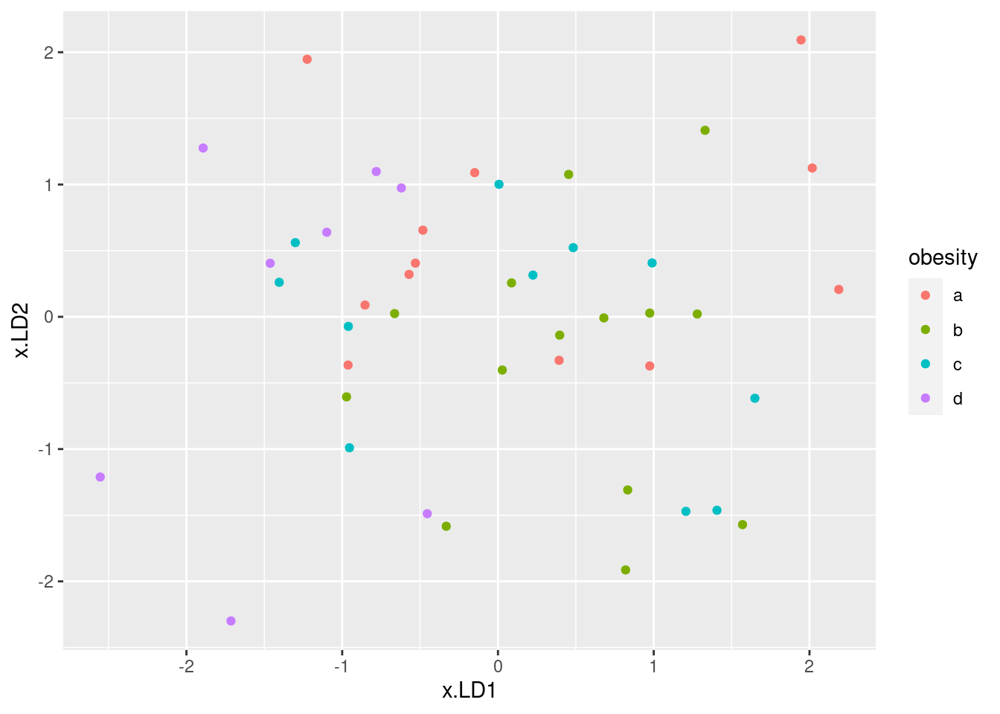
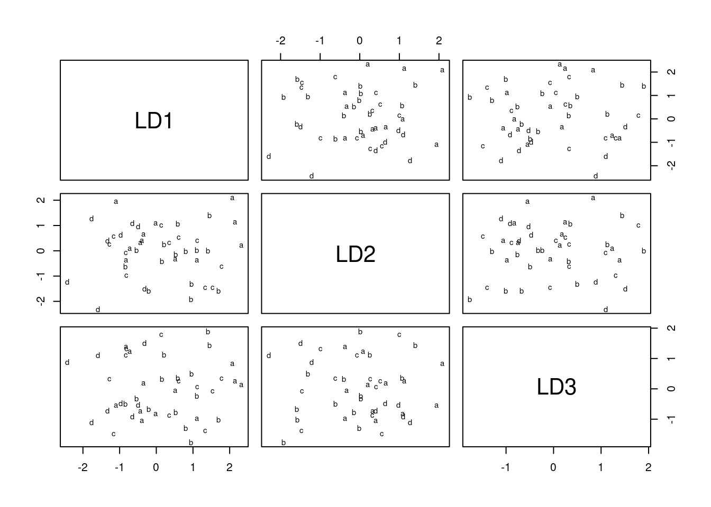

Chapter 34 Discriminant analysis
Packages for this chapter:
(Note: ggbiplot loads plyr, which overlaps a lot with dplyr
(filter, select etc.). We want the dplyr stuff elsewhere, so we
load ggbiplot first, and the things in plyr get hidden, as shown
in the Conflicts. This, despite appearances, is what we want.)
34.1 Telling whether a banknote is real or counterfeit
* A Swiss bank collected a number of known counterfeit (fake) bills over time, and sampled a number of known genuine bills of the same denomination. Is it possible to tell, from measurements taken from a bill, whether it is genuine or not? We will explore that issue here. The variables measured were:
length
right-hand width
left-hand width
top margin
bottom margin
diagonal
Read in the data from link, and check that you have 200 rows and 7 columns altogether.
Run a multivariate analysis of variance. What do you conclude? Is it worth running a discriminant analysis? (This is the same procedure as with basic MANOVAs before.)
Run a discriminant analysis. Display the output.
How many linear discriminants did you get? Is that making sense? Explain briefly.
* Using your output from the discriminant analysis, describe how each of the linear discriminants that you got is related to your original variables. (This can, maybe even should, be done crudely: “does each variable feature in each linear discriminant: yes or no?”.)
What values of your variable(s) would make
LD1large and positive?* Find the means of each variable for each group (genuine and counterfeit bills). You can get this from your fitted linear discriminant object.
Plot your linear discriminant(s), however you like. Bear in mind that there is only one linear discriminant.
What kind of score on
LD1do genuine bills typically have? What kind of score do counterfeit bills typically have? What characteristics of a bill, therefore, would you look at to determine if a bill is genuine or counterfeit?
34.2 Urine and obesity: what makes a difference?
A study was made of the characteristics of urine of young
men. The men were classified into four groups based on their degree of
obesity. (The groups are labelled a, b, c, d.) Four variables
were measured, x (which you can ignore), pigment creatinine,
chloride and chlorine. The data are in
link as a
.csv file. There are 45 men altogether.
Yes, you may have seen this one before. What you found was something like this:
##
## ── Column specification ──────────────────────────────────────────────────────────────────────────────────────────────────────────────────────────────────────────────────────────────────────
## cols(
## obesity = col_character(),
## x = col_double(),
## creatinine = col_double(),
## chloride = col_double(),
## chlorine = col_double()
## )response <- with(urine, cbind(creatinine, chlorine, chloride))
urine.1 <- manova(response ~ obesity, data = urine)
summary(urine.1)## Df Pillai approx F num Df den Df Pr(>F)
## obesity 3 0.43144 2.2956 9 123 0.02034 *
## Residuals 41
## ---
## Signif. codes: 0 '***' 0.001 '**' 0.01 '*' 0.05 '.' 0.1 ' ' 1Our aim is to understand why this result was significant.
Read in the data again (copy the code from above) and obtain a discriminant analysis.
How many linear discriminants were you expecting? Explain briefly.
Why do you think we should pay attention to the first two linear discriminants but not the third? Explain briefly.
Plot the first two linear discriminant scores (against each other), with each obesity group being a different colour.
* Looking at your plot, discuss how (if at all) the discriminants separate the obesity groups. (Where does each obesity group fall on the plot?)
* Obtain a table showing observed and predicted obesity groups. Comment on the accuracy of the predictions.
Do your conclusions from (here) and (here) appear to be consistent?
34.3 Understanding a MANOVA
One use of discriminant analysis is to
understand the results of a MANOVA. This question is a followup to a
previous MANOVA that we did, the one with two variables y1
and y2 and three groups a through c. The
data were in link.
Read the data in again and run the MANOVA that you did before.
Run a discriminant analysis “predicting” group from the two response variables. Display the output.
* In the output from the discriminant analysis, why are there exactly two linear discriminants
LD1andLD2?* From the output, how would you say that the first linear discriminant
LD1compares in importance to the second oneLD2: much more important, more important, equally important, less important, much less important? Explain briefly.Obtain a plot of the discriminant scores.
Describe briefly how
LD1and/orLD2separate the groups. Does your picture confirm the relative importance ofLD1andLD2that you found back in part (here)? Explain briefly.What makes group
ahave a low score onLD1? There are two steps that you need to make: consider the means of groupaon variablesy1andy2and how they compare to the other groups, and consider howy1andy2play into the score onLD1.Obtain predictions for the group memberships of each observation, and make a table of the actual group memberships against the predicted ones. How many of the observations were wrongly classified?
34.4 What distinguishes people who do different jobs?
24436 people work at a
certain company.
They each have one of three jobs: customer service, mechanic,
dispatcher. In the data set, these are labelled 1, 2 and 3
respectively. In addition, they each are rated on scales called
outdoor, social and conservative. Do people
with different jobs tend to have different scores on these scales, or,
to put it another way, if you knew a person’s scores on
outdoor, social and conservative, could you
say something about what kind of job they were likely to hold? The
data are in link.
Read in the data and display some of it.
Note the types of each of the variables, and create any new variables that you need to.
Run a multivariate analysis of variance to convince yourself that there are some differences in scale scores among the jobs.
Run a discriminant analysis and display the output.
Which is the more important,
LD1orLD2? How much more important? Justify your answer briefly.Describe what values for an individual on the scales will make each of
LD1andLD2high.The first group of employees, customer service, have the highest mean on
socialand the lowest mean on both of the other two scales. Would you expect the customer service employees to score high or low onLD1? What aboutLD2?Plot your discriminant scores (which you will have to obtain first), and see if you were right about the customer service employees in terms of
LD1andLD2. The job names are rather long, and there are a lot of individuals, so it is probably best to plot the scores as coloured circles with a legend saying which colour goes with which job (rather than labelling each individual with the job they have).* Obtain predicted job allocations for each individual (based on their scores on the three scales), and tabulate the true jobs against the predicted jobs. How would you describe the quality of the classification? Is that in line with what the plot would suggest?
Consider an employee with these scores: 20 on
outdoor, 17 onsocialand 8 onconservativeWhat job do you think they do, and how certain are you about that? Usepredict, first making a data frame out of the values to predict for.Since I am not making you hand this one in, I’m going to keep going. Re-run the analysis to incorporate cross-validation, and make a table of the predicted group memberships. Is it much different from the previous one you had? Why would that be?
34.5 Observing children with ADHD
A number of children with ADHD were observed by their mother
or their father (only one parent observed each child). Each parent was
asked to rate occurrences of behaviours of four different types,
labelled q1 through q4 in the data set. Also
recorded was the identity of the parent doing the observation for each
child: 1 is father, 2 is mother.
Can we tell (without looking at the parent column) which
parent is doing the observation? Research suggests that rating the
degree of impairment in different categories depends on who is doing
the rating: for example, mothers may feel that a child has difficulty
sitting still, while fathers, who might do more observing of a child
at play, might think of such a child as simply being “active” or
“just being a kid”. The data are in
link.
Read in the data and confirm that you have four ratings and a column labelling the parent who made each observation.
Run a suitable discriminant analysis and display the output.
Which behaviour item or items seem to be most helpful at distinguishing the parent making the observations? Explain briefly.
Obtain the predictions from the
lda, and make a suitable plot of the discriminant scores, bearing in mind that you only have oneLD. Do you think there will be any misclassifications? Explain briefly.Obtain the predicted group memberships and make a table of actual vs. predicted. Were there any misclassifications? Explain briefly.
Re-run the discriminant analysis using cross-validation, and again obtain a table of actual and predicted parents. Is the pattern of misclassification different from before? Hints: (i) Bear in mind that there is no
predictstep this time, because the cross-validation output includes predictions; (ii) use a different name for the predictions this time because we are going to do a comparison in a moment.Display the original data (that you read in from the data file) side by side with two sets of posterior probabilities: the ones that you obtained with
predictbefore, and the ones from the cross-validated analysis. Comment briefly on whether the two sets of posterior probabilities are similar. Hints: (i) usedata.framerather thancbind, for reasons that I explain elsewhere; (ii) round the posterior probabilities to 3 decimals before you display them. There are only 29 rows, so look at them all. I am going to add theLD1scores to my output and sort by that, but you don’t need to. (This is for something I am going to add later.)Row 17 of your (original) data frame above, row 5 of the output in the previous part, is the mother that was misclassified as a father. Why is it that the cross-validated posterior probabilities are 1 and 0, while the previous posterior probabilities are a bit less than 1 and a bit more than 0?
Find the parents where the cross-validated posterior probability of being a father is “non-trivial”: that is, not close to zero and not close to 1. (You will have to make a judgement about what “close to zero or 1” means for you.) What do these parents have in common, all of them or most of them?
34.6 Growing corn
A new type of corn seed has been developed. The people developing it want to know if the type of soil the seed is planted in has an impact on how well the seed performs, and if so, what kind of impact. Three outcome measures were used: the yield of corn produced (from a fixed amount of seed), the amount of water needed, and the amount of herbicide needed. The data are in link. 32 fields were planted with the seed, 8 fields with each soil type.
Read in the data and verify that you have 32 observations with the correct variables.
Run a multivariate analysis of variance to see whether the type of soil has any effect on any of the variables. What do you conclude from it?
Run a discriminant analysis on these data, “predicting” soil type from the three response variables. Display the results.
* Which linear discriminants seem to be worth paying attention to? Why did you get three linear discriminants? Explain briefly.
Which response variables do the important linear discriminants depend on? Answer this by extracting something from your discriminant analysis output.
Obtain predictions for the discriminant analysis. (You don’t need to do anything with them yet.)
Plot the first two discriminant scores against each other, coloured by soil type. You’ll have to start by making a data frame containing what you need.
On your plot that you just made, explain briefly how
LD1distinguishes at least one of the soil types.On your plot, does
LD2appear to do anything to separate the groups? Is this surprising given your earlier findings? Explain briefly.Make a table of actual and predicted
soilgroup. Which soil type was classified correctly the most often?
34.7 Understanding athletes’ height, weight, sport and gender
On a previous assignment, we used MANOVA on the athletes data to demonstrate that there was a significant relationship between the combination of the athletes’ height and weight, with the sport they play and the athlete’s gender. The problem with MANOVA is that it doesn’t give any information about the kind of relationship. To understand that, we need to do discriminant analysis, which is the purpose of this question.
The data can be found at link.
Once again, read in and display (some of) the data, bearing in mind that the data values are separated by tabs. (This ought to be a free two marks.)
Use
uniteto make a new column in your data frame which contains the sport-gender combination. Display it. (You might like to display only a few columns so that it is clear that you did the right thing.) Hint: you’ve seenunitein the peanuts example in class.Run a discriminant analysis “predicting” sport-gender combo from height and weight. Display the results. (No comment needed yet.)
What kind of height and weight would make an athlete have a large (positive) score on
LD1? Explain briefly.Make a guess at the sport-gender combination that has the highest score on LD1. Why did you choose the combination you did?
What combination of height and weight would make an athlete have a small* (that is, very negative) score on LD2? Explain briefly.
Obtain predictions for the discriminant analysis, and use these to make a plot of
LD1score againstLD2score, with the individual athletes distinguished by what sport they play and gender they are. (You can use colour to distinguish them, or you can use shapes. If you want to go the latter way, there are clues in my solutions to the MANOVA question about these athletes.)Look on your graph for the four athletes with the smallest (most negative) scores on
LD2. What do they have in common? Does this make sense, given your answer to part (here)? Explain briefly.Obtain a (very large) square table, or a (very long) table with frequencies, of actual and predicted sport-gender combinations. You will probably have to make the square table very small to fit it on the page. For that, displaying the columns in two or more sets is OK (for example, six columns and all the rows, six more columns and all the rows, then the last five columns for all the rows). Are there any sport-gender combinations that seem relatively easy to classify correctly? Explain briefly.
My solutions follow:
34.8 Telling whether a banknote is real or counterfeit
* A Swiss bank collected a number of known counterfeit (fake) bills over time, and sampled a number of known genuine bills of the same denomination. Is it possible to tell, from measurements taken from a bill, whether it is genuine or not? We will explore that issue here. The variables measured were:
length
right-hand width
left-hand width
top margin
bottom margin
diagonal
- Read in the data from link, and check that you have 200 rows and 7 columns altogether.
Solution
Check the data file first. It’s aligned in columns, thus:
##
## ── Column specification ──────────────────────────────────────────────────────────────────────────────────────────────────────────────────────────────────────────────────────────────────────
## cols(
## length = col_double(),
## left = col_double(),
## right = col_double(),
## bottom = col_double(),
## top = col_double(),
## diag = col_double(),
## status = col_character()
## )## # A tibble: 200 x 7
## length left right bottom top diag status
## <dbl> <dbl> <dbl> <dbl> <dbl> <dbl> <chr>
## 1 215. 131 131. 9 9.7 141 genuine
## 2 215. 130. 130. 8.1 9.5 142. genuine
## 3 215. 130. 130. 8.7 9.6 142. genuine
## 4 215. 130. 130. 7.5 10.4 142 genuine
## 5 215 130. 130. 10.4 7.7 142. genuine
## 6 216. 131. 130. 9 10.1 141. genuine
## 7 216. 130. 130. 7.9 9.6 142. genuine
## 8 214. 130. 129. 7.2 10.7 142. genuine
## 9 215. 129. 130. 8.2 11 142. genuine
## 10 215. 130. 130. 9.2 10 141. genuine
## # … with 190 more rowsYep, 200 rows and 7 columns.
\(\blacksquare\)
- Run a multivariate analysis of variance. What do you conclude? Is it worth running a discriminant analysis? (This is the same procedure as with basic MANOVAs before.)
Solution
Small-m manova will do here:
response <- with(swiss, cbind(length, left, right, bottom, top, diag))
swiss.1 <- manova(response ~ status, data = swiss)
summary(swiss.1)## Df Pillai approx F num Df den Df Pr(>F)
## status 1 0.92415 391.92 6 193 < 2.2e-16 ***
## Residuals 198
## ---
## Signif. codes: 0 '***' 0.001 '**' 0.01 '*' 0.05 '.' 0.1 ' ' 1Extra: you might be wondering whether you had to go to all that trouble to make the response variable. Would this work?
## Error in model.frame.default(formula = response2 ~ status, data = swiss, : invalid type (list) for variable 'response2'No, because response2 needs to be an R matrix, and it isn’t:
## [1] "tbl_df" "tbl" "data.frame"The error message was a bit cryptic (nothing unusual there), but a
data frame (to R) is a special kind of list, so that R didn’t
like response2 being a data frame, which it
thought was a list.
This, however, works, since it turns the data frame into a matrix:
response4 <- swiss %>% select(length:diag) %>% as.matrix()
swiss.2a <- manova(response4 ~ status, data = swiss)
summary(swiss.2a)## Df Pillai approx F num Df den Df Pr(>F)
## status 1 0.92415 391.92 6 193 < 2.2e-16 ***
## Residuals 198
## ---
## Signif. codes: 0 '***' 0.001 '**' 0.01 '*' 0.05 '.' 0.1 ' ' 1Anyway, the conclusion: the status of a bill (genuine or counterfeit) definitely has an influence on some or all of those other variables, since the P-value \(2.2 \times 10^{-16}\) (or less) is really small. So it is worth running a discriminant analysis to figure out where the differences lie.
As a piece of strategy, for creating the response matrix, you can
always either use cbind, which creates a matrix
directly, or you can use select, which is often easier but
creates a data frame, and then turn that into a matrix
using as.matrix. As long as you end up with a
matrix, it’s all good.
\(\blacksquare\)
- Run a discriminant analysis. Display the output.
Solution
Now we forget about all that
response stuff. For a discriminant analysis, the
grouping variable (or combination of the grouping variables)
is the “response”, and the quantitative ones are
“explanatory”:
## Call:
## lda(status ~ length + left + right + bottom + top + diag, data = swiss)
##
## Prior probabilities of groups:
## counterfeit genuine
## 0.5 0.5
##
## Group means:
## length left right bottom top diag
## counterfeit 214.823 130.300 130.193 10.530 11.133 139.450
## genuine 214.969 129.943 129.720 8.305 10.168 141.517
##
## Coefficients of linear discriminants:
## LD1
## length 0.005011113
## left 0.832432523
## right -0.848993093
## bottom -1.117335597
## top -1.178884468
## diag 1.556520967\(\blacksquare\)
- How many linear discriminants did you get? Is that making sense? Explain briefly.
Solution
I got one discriminant, which makes sense because there are two groups, and the smaller of 6 (variables, not counting the grouping one) and \(2-1\) is 1.
\(\blacksquare\)
- * Using your output from the discriminant analysis, describe how each of the linear discriminants that you got is related to your original variables. (This can, maybe even should, be done crudely: “does each variable feature in each linear discriminant: yes or no?”.)
Solution
This is the Coefficients of Linear Discriminants. Make a call about whether each of those coefficients is close to zero (small in size compared to the others), or definitely positive or definitely negative.
These are judgement calls: either you can say that LD1
depends mainly on diag (treating the other coefficients
as “small” or close to zero), or you can say that LD1
depends on everything except length.
\(\blacksquare\)
- What values of your variable(s) would make
LD1large and positive?
Solution
Depending on your answer to the previous part:
If you said that only diag was important, diag
being large would make LD1 large and positive.
If you said that everything but length was important,
then it’s a bit more complicated: left and
diag large, right, bottom and
top small (since their coefficients are negative).
\(\blacksquare\)
- * Find the means of each variable for each group (genuine and counterfeit bills). You can get this from your fitted linear discriminant object.
Solution
## length left right bottom top diag
## counterfeit 214.823 130.300 130.193 10.530 11.133 139.450
## genuine 214.969 129.943 129.720 8.305 10.168 141.517\(\blacksquare\)
- Plot your linear discriminant(s), however you like. Bear in mind that there is only one linear discriminant.
Solution
With only one linear discriminant, we can plot LD1 scores on
the \(y\)-axis and the grouping variable on the \(x\)-axis. How
you do that is up to you.
Before we start, though, we need the LD1 scores. This means
doing predictions. The discriminant scores are in there. We take the
prediction output and make a data frame with all the things in the
original data. My current preference (it changes) is to store the
predictions, and then cbind them with the original data,
thus:
## length left right bottom top diag status class posterior.counterfeit posterior.genuine LD1
## 1 214.8 131.0 131.1 9.0 9.7 141.0 genuine genuine 3.245560e-07 0.9999997 2.150948
## 2 214.6 129.7 129.7 8.1 9.5 141.7 genuine genuine 1.450624e-14 1.0000000 4.587317
## 3 214.8 129.7 129.7 8.7 9.6 142.2 genuine genuine 1.544496e-14 1.0000000 4.578290
## 4 214.8 129.7 129.6 7.5 10.4 142.0 genuine genuine 4.699587e-15 1.0000000 4.749580
## 5 215.0 129.6 129.7 10.4 7.7 141.8 genuine genuine 1.941700e-13 1.0000000 4.213851
## 6 215.7 130.8 130.5 9.0 10.1 141.4 genuine genuine 1.017550e-08 1.0000000 2.649422I needed head because cbind makes an old-fashioned
data.frame rather than a tibble, so if you display
it, you get all of it.
This gives the LD1 scores, predicted groups, and posterior
probabilities as well. That saves us having to pick out the other
things later.
The obvious thing is a boxplot. By examining d above (didn’t
you?), you saw that the LD scores were in a column called
LD1:

This shows that positive LD1 scores go (almost without exception) with genuine bills, and negative ones with counterfeit bills. It also shows that there are three outlier bills, two counterfeit ones with unusually high LD1 score, and one genuine one with unusually low LD1 score, at least for a genuine bill.
Or you could do faceted histograms of LD1 by status:

This shows much the same thing as plot(swiss.3) does (try it).
\(\blacksquare\)
- What kind of score on
LD1do genuine bills typically have? What kind of score do counterfeit bills typically have? What characteristics of a bill, therefore, would you look at to determine if a bill is genuine or counterfeit?
Solution
The genuine bills almost all have a positive score on
LD1, while the counterfeit ones all have a negative one.
This means that the genuine bills (depending on your answer to
(here)) have a large diag, or they have a
large left and diag, and a small
right, bottom and top.
If you look at your table of means in (here), you’ll
see that the genuine bills do indeed have a large diag,
or, depending on your earlier answer, a small right,
bottom and top, but not actually a small
left (the left values are very close for the
genuine and counterfeit coins).
Extra: as to that last point, this is easy enough to think about. A boxplot seems a nice way to display it:

There is a fair bit of overlap: the median is higher for the counterfeit bills, but the highest value actually belongs to a genuine one.
Compare that to diag:

Here, there is an almost complete separation of the genuine and
counterfeit bills, with just one low outlier amongst the genuine bills
spoiling the pattern.
I didn’t look at the predictions (beyond the discriminant scores),
since this question (as set on an assignment a couple of years ago)
was already too long, but there is no difficulty in doing so.
Everything is in the data frame I called d:
## pred
## obs counterfeit genuine
## counterfeit 100 0
## genuine 1 99(this labels the rows and columns, which is not necessary but is nice.)
The tidyverse way is to make a data frame out of the actual
and predicted statuses, and then count what’s in there:
## status class n
## 1 counterfeit counterfeit 100
## 2 genuine counterfeit 1
## 3 genuine genuine 99This gives a “long” table, with frequencies for each of the combinations for which anything was observed.
Frequency tables are usually wide, and we can make this one so by pivot-wider-ing pred:
## # A tibble: 2 x 3
## status counterfeit genuine
## <chr> <int> <int>
## 1 counterfeit 100 NA
## 2 genuine 1 99One of the genuine bills is incorrectly classified as a counterfeit one (evidently that low outlier on LD1), but every single one of the counterfeit bills is classified correctly. That missing value is actually a frequency that is zero, which you can fix up thus:
## # A tibble: 2 x 3
## status counterfeit genuine
## <chr> <int> <int>
## 1 counterfeit 100 0
## 2 genuine 1 99which turns any missing values into the zeroes they should be in this kind of problem. It would be interesting to see what the posterior probabilities look like for that misclassified bill:
## length left right bottom top diag status class posterior.counterfeit posterior.genuine LD1
## 70 214.9 130.2 130.2 8 11.2 139.6 genuine counterfeit 0.9825773 0.01742267 -0.5805239On the basis of the six measured variables, this looks a lot more like a counterfeit bill than a genuine one. Are there any other bills where there is any doubt? One way to find out is to find the maximum of the two posterior probabilities. If this is small, there is some doubt about whether the bill is real or fake. 0.99 seems like a very stringent cutoff, but let’s try it and see:
d %>%
mutate(max.post = pmax(posterior.counterfeit, posterior.genuine)) %>%
filter(max.post < 0.99) %>%
dplyr::select(-c(length:diag))## status class posterior.counterfeit posterior.genuine LD1 max.post
## 70 genuine counterfeit 0.9825773 0.01742267 -0.5805239 0.9825773The only one is the bill that was misclassified: it was actually genuine, but was classified as counterfeit. The posterior probabilities say that it was pretty unlikely to be genuine, but it was the only bill for which there was any noticeable doubt at all.
I had to use pmax rather than max there, because I
wanted max.post to contain the larger of the two
corresponding entries: that is, the first entry in max.post
is the larger of the first entry of counterfeit and the first
entry in genuine. If I used max instead, I’d get the
largest of all the entries in counterfeit and
all the entries in genuine, repeated 200 times. (Try
it and see.) pmax stands for “parallel maximum”, that is,
for each row separately. This also should work:
d %>%
rowwise() %>%
mutate(max.post = max(posterior.counterfeit, posterior.genuine)) %>%
filter(max.post < 0.99) %>%
select(-c(length:diag))## # A tibble: 1 x 6
## # Rowwise:
## status class posterior.counterfeit posterior.genuine LD1 max.post
## <chr> <fct> <dbl> <dbl> <dbl> <dbl>
## 1 genuine counterfeit 0.983 0.0174 -0.581 0.983Because we’re using rowwise, max is applied to the pairs
of values of posterior.counterfeit and posterior.genuine,
taken one row at a time.
\(\blacksquare\)
34.9 Urine and obesity: what makes a difference?
A study was made of the characteristics of urine of young
men. The men were classified into four groups based on their degree of
obesity. (The groups are labelled a, b, c, d.) Four variables
were measured, x (which you can ignore), pigment creatinine,
chloride and chlorine. The data are in
link as a
.csv file. There are 45 men altogether.
Yes, you may have seen this one before. What you found was something like this:
##
## ── Column specification ──────────────────────────────────────────────────────────────────────────────────────────────────────────────────────────────────────────────────────────────────────
## cols(
## obesity = col_character(),
## x = col_double(),
## creatinine = col_double(),
## chloride = col_double(),
## chlorine = col_double()
## )response <- with(urine, cbind(creatinine, chlorine, chloride))
urine.1 <- manova(response ~ obesity, data = urine)
summary(urine.1)## Df Pillai approx F num Df den Df Pr(>F)
## obesity 3 0.43144 2.2956 9 123 0.02034 *
## Residuals 41
## ---
## Signif. codes: 0 '***' 0.001 '**' 0.01 '*' 0.05 '.' 0.1 ' ' 1Our aim is to understand why this result was significant.
- Read in the data again (copy the code from above) and obtain a discriminant analysis.
Solution
As above, plus:
## Call:
## lda(obesity ~ creatinine + chlorine + chloride, data = urine)
##
## Prior probabilities of groups:
## a b c d
## 0.2666667 0.3111111 0.2444444 0.1777778
##
## Group means:
## creatinine chlorine chloride
## a 15.89167 5.275000 6.012500
## b 17.82143 7.450000 5.214286
## c 16.34545 8.272727 5.372727
## d 11.91250 9.675000 3.981250
##
## Coefficients of linear discriminants:
## LD1 LD2 LD3
## creatinine 0.24429462 -0.1700525 -0.02623962
## chlorine -0.02167823 -0.1353051 0.11524045
## chloride 0.23805588 0.3590364 0.30564592
##
## Proportion of trace:
## LD1 LD2 LD3
## 0.7476 0.2430 0.0093\(\blacksquare\)
- How many linear discriminants were you expecting? Explain briefly.
Solution
There are 3 variables and 4 groups, so the smaller of 3 and \(4-1=3\): that is, 3.
\(\blacksquare\)
- Why do you think we should pay attention to the first two linear discriminants but not the third? Explain briefly.
Solution
The first two ``proportion of trace’’ values are a lot bigger than the third (or, the third one is close to 0).
\(\blacksquare\)
- Plot the first two linear discriminant scores (against each other), with each obesity group being a different colour.
Solution
First obtain the predictions, and then make a data frame out of the original data and the predictions.
## obesity x creatinine chloride chlorine class posterior.a posterior.b posterior.c posterior.d x.LD1 x.LD2 x.LD3
## 1 a 24 17.6 5.15 7.5 b 0.2327008 0.4124974 0.3022445 0.052557333 0.3926519 -0.3290621 -0.0704284
## 2 a 32 13.4 5.75 7.1 a 0.3599095 0.2102510 0.2633959 0.166443708 -0.4818807 0.6547023 0.1770694
## 3 a 17 20.3 4.35 2.3 b 0.2271118 0.4993603 0.2519562 0.021571722 0.9745295 -0.3718462 -0.9850425
## 4 a 30 22.3 7.55 4.0 b 0.2935374 0.4823766 0.2211991 0.002886957 2.1880446 0.2069465 0.1364540
## 5 a 30 20.5 8.50 2.0 a 0.4774623 0.3258104 0.1933571 0.003370286 2.0178238 1.1247359 0.2435680
## 6 a 27 18.5 10.25 2.0 a 0.6678748 0.1810762 0.1482500 0.002799004 1.9458323 2.0931546 0.8309276urine produced the first five columns and urine.pred
produced the rest.
To go a more tidyverse way, we can combine the original data frame and
the predictions using bind_cols, but we have to be more
careful that the things we are gluing together are both data frames:
## [1] "spec_tbl_df" "tbl_df" "tbl" "data.frame"## [1] "list"urine is a tibble all right, but urine.pred is a list. What does it look like?
## List of 3
## $ class : Factor w/ 4 levels "a","b","c","d": 2 1 2 2 1 1 3 3 1 1 ...
## $ posterior: num [1:45, 1:4] 0.233 0.36 0.227 0.294 0.477 ...
## ..- attr(*, "dimnames")=List of 2
## .. ..$ : chr [1:45] "1" "2" "3" "4" ...
## .. ..$ : chr [1:4] "a" "b" "c" "d"
## $ x : num [1:45, 1:3] 0.393 -0.482 0.975 2.188 2.018 ...
## ..- attr(*, "dimnames")=List of 2
## .. ..$ : chr [1:45] "1" "2" "3" "4" ...
## .. ..$ : chr [1:3] "LD1" "LD2" "LD3"A data frame is a list for which all the items are the same length,
but some of the things in here are matrices. You can tell because they
have a number of rows, 45, and a number of columns, 3 or
4. They do have the right number of rows, though, so something
like as.data.frame (a base R function) will smoosh them all
into one data frame, grabbing the columns from the matrices:
## class posterior.a posterior.b posterior.c posterior.d x.LD1 x.LD2 x.LD3
## 1 b 0.2327008 0.4124974 0.3022445 0.052557333 0.3926519 -0.3290621 -0.0704284
## 2 a 0.3599095 0.2102510 0.2633959 0.166443708 -0.4818807 0.6547023 0.1770694
## 3 b 0.2271118 0.4993603 0.2519562 0.021571722 0.9745295 -0.3718462 -0.9850425
## 4 b 0.2935374 0.4823766 0.2211991 0.002886957 2.1880446 0.2069465 0.1364540
## 5 a 0.4774623 0.3258104 0.1933571 0.003370286 2.0178238 1.1247359 0.2435680
## 6 a 0.6678748 0.1810762 0.1482500 0.002799004 1.9458323 2.0931546 0.8309276You see that the columns that came from matrices have gained two-part names, the first part from the name of the matrix, the second part from the column name within that matrix. Then we can do this:
## # A tibble: 45 x 13
## obesity x creatinine chloride chlorine class posterior.a posterior.b posterior.c posterior.d x.LD1 x.LD2 x.LD3
## * <chr> <dbl> <dbl> <dbl> <dbl> <fct> <dbl> <dbl> <dbl> <dbl> <dbl> <dbl> <dbl>
## 1 a 24 17.6 5.15 7.5 b 0.233 0.412 0.302 0.0526 0.393 -0.329 -0.0704
## 2 a 32 13.4 5.75 7.1 a 0.360 0.210 0.263 0.166 -0.482 0.655 0.177
## 3 a 17 20.3 4.35 2.3 b 0.227 0.499 0.252 0.0216 0.975 -0.372 -0.985
## 4 a 30 22.3 7.55 4 b 0.294 0.482 0.221 0.00289 2.19 0.207 0.136
## 5 a 30 20.5 8.5 2 a 0.477 0.326 0.193 0.00337 2.02 1.12 0.244
## 6 a 27 18.5 10.2 2 a 0.668 0.181 0.148 0.00280 1.95 2.09 0.831
## 7 a 25 12.1 5.95 16.8 c 0.167 0.208 0.314 0.311 -0.962 -0.365 1.39
## 8 a 30 12 6.3 14.5 c 0.230 0.197 0.303 0.270 -0.853 0.0890 1.23
## 9 a 28 10.1 5.45 0.9 a 0.481 0.0752 0.137 0.307 -1.23 1.95 -0.543
## 10 a 24 14.7 3.75 2 a 0.323 0.247 0.239 0.191 -0.530 0.406 -1.06
## # … with 35 more rowsIf you want to avoid base R altogether, though, and go straight to
bind_cols, you have to be more careful about the types of
things. bind_cols only works with vectors and data
frames, not matrices, so that is what it is up to you to make sure you
have. That means pulling out the pieces, turning them from matrices
into data frames, and then gluing everything back together:
post <- as_tibble(urine.pred$posterior)
ld <- as_tibble(urine.pred$x)
ddd <- bind_cols(urine, class = urine.pred$class, ld, post)
ddd## # A tibble: 45 x 13
## obesity x creatinine chloride chlorine class LD1 LD2 LD3 a b c d
## <chr> <dbl> <dbl> <dbl> <dbl> <fct> <dbl> <dbl> <dbl> <dbl> <dbl> <dbl> <dbl>
## 1 a 24 17.6 5.15 7.5 b 0.393 -0.329 -0.0704 0.233 0.412 0.302 0.0526
## 2 a 32 13.4 5.75 7.1 a -0.482 0.655 0.177 0.360 0.210 0.263 0.166
## 3 a 17 20.3 4.35 2.3 b 0.975 -0.372 -0.985 0.227 0.499 0.252 0.0216
## 4 a 30 22.3 7.55 4 b 2.19 0.207 0.136 0.294 0.482 0.221 0.00289
## 5 a 30 20.5 8.5 2 a 2.02 1.12 0.244 0.477 0.326 0.193 0.00337
## 6 a 27 18.5 10.2 2 a 1.95 2.09 0.831 0.668 0.181 0.148 0.00280
## 7 a 25 12.1 5.95 16.8 c -0.962 -0.365 1.39 0.167 0.208 0.314 0.311
## 8 a 30 12 6.3 14.5 c -0.853 0.0890 1.23 0.230 0.197 0.303 0.270
## 9 a 28 10.1 5.45 0.9 a -1.23 1.95 -0.543 0.481 0.0752 0.137 0.307
## 10 a 24 14.7 3.75 2 a -0.530 0.406 -1.06 0.323 0.247 0.239 0.191
## # … with 35 more rowsThat’s a lot of work, but you might say that it’s worth it because you
are now absolutely sure what kind of thing everything is. I also had
to be slightly careful with the vector of class values; in
ddd it has to have a name, so I have to make sure I give it
one.37
Any of these ways (in general) is good. The last way is a more
careful approach, since you are making sure things are of the right
type rather than relying on R to convert them for you, but I don’t
mind which way you go.
Now make the plot, making sure that you are using columns with the right names. I’m using my first data frame, with the two-part names:

\(\blacksquare\)
- * Looking at your plot, discuss how (if at all) the discriminants separate the obesity groups. (Where does each obesity group fall on the plot?)
Solution
My immediate reaction was
“they don’t much”. If you look a bit more closely, the
b group, in green, is on the right (high
LD1) and the d group (purple) is on the
left (low LD1). The a group, red, is
mostly at the top (high LD2) but the c
group, blue, really is all over the place.
The way to tackle interpreting a plot like this is to look for each group individually and see if that group is only or mainly found on a certain part of the plot.
This can be rationalized by looking at
the “coefficients of linear discriminants” on the output. LD1 is
low if creatinine and chloride are low (it has nothing
much to do with chlorine since that coefficient
is near zero). Group d is lowest on both
creatinine and chloride, so that will be lowest on
LD1. LD2 is high if chloride
is high, or creatinine and chlorine are
low. Out of the groups a, b, c, a has
the highest mean on chloride and lowest means on the other
two variables, so this should be highest on LD2
and (usually) is.
Looking at the means is only part of the story; if the
individuals within a group are very variable, as they are
here (especially group c), then that group will
appear all over the plot. The table of means only says how
the average individual within a group stacks up.

This shows (in a way that is perhaps easier to see) how the linear
discriminants are related to the original variables, and thus how the
groups differ in terms of the original variables.38
Most of the B’s are high creatinine and high chloride (on the right); most of the D’s are low on both (on the left). LD2 has a bit of chloride, but not much of anything else.
Extra: the way we used to do this was with “base graphics”, which involved plotting the lda output itself:

which is a plot of each discriminant score against each other one. You can plot just the first two, like this:

This is easier than using ggplot, but (i) less flexible and
(ii) you have to figure out how it works rather than doing things the
standard ggplot way. So I went with constructing a data frame
from the predictions, and then
ggplotting that. It’s a matter of taste which way is better.
\(\blacksquare\)
- * Obtain a table showing observed and predicted obesity groups. Comment on the accuracy of the predictions.
Solution
Make a table, one way or another:
## class
## obesity a b c d
## a 7 3 2 0
## b 2 9 2 1
## c 3 4 1 3
## d 2 0 1 5class is always the predicted group in these. You can
also name things in table.
Or, if you prefer (equally good), the tidyverse way of
counting all the combinations of true obesity and predicted
class, which can be done all in one go, or in
two steps by saving the data frame first. I’m saving my results for
later:
## obesity class n
## 1 a a 7
## 2 a b 3
## 3 a c 2
## 4 b a 2
## 5 b b 9
## 6 b c 2
## 7 b d 1
## 8 c a 3
## 9 c b 4
## 10 c c 1
## 11 c d 3
## 12 d a 2
## 13 d c 1
## 14 d d 5or if you prefer to make it look more like a table of frequencies:
## # A tibble: 4 x 5
## obesity a b c d
## <chr> <int> <int> <int> <int>
## 1 a 7 3 2 0
## 2 b 2 9 2 1
## 3 c 3 4 1 3
## 4 d 2 0 1 5The thing on the end fills in zero frequencies as such (they would
otherwise be NA, which they are not: we know they are zero).
My immediate reaction to this is “it’s terrible”! But at least some
of the men have their obesity group correctly predicted: 7 of the
\(7+3+2+0=12\)
men that are actually in group a are predicted to be in
a; 9 of the 14 actual b’s are predicted to be
b’s; 5 of the 8 actual d’s are predicted to be
d’s. These are not so awful. But only 1 of the 11
c’s is correctly predicted to be a c!
As for what I want to see: I am looking for some kind of statement about how good you think the predictions are (the word “terrible” is fine for this) with some kind of support for your statement. For example, “the predictions are not that good, but at least group B is predicted with some accuracy (9 out of 14).”
I think looking at how well the individual groups were predicted is
the most incisive way of getting at this, because the c men
are the hardest to get right and the others are easier, but you could
also think about an overall misclassification rate. This comes most
easily from the “tidy” table:
## correct n
## 1 FALSE 23
## 2 TRUE 22You can count anything, not just columns that already exist. This one
is a kind of combined mutate-and-count to create the (logical) column
called correct.
It’s a shortcut for this:
## is_correct n
## 1 FALSE 23
## 2 TRUE 22If I don’t put the wt, count counts the number of
rows for which the true and predicted obesity group is the
same. But that’s not what I want here: I want the number of
observations totalled up, which is what the wt=
does. It says “use the things in the given column as weights”, which
means to total them up rather than count up the number of rows.
This says that 22 men were classified correctly and 23 were gotten wrong. We can find the proportions correct and wrong:
## correct n proportion
## 1 FALSE 23 0.5111111
## 2 TRUE 22 0.4888889and we see that 51% of men had their obesity group predicted wrongly. This is the overall misclassification rate, which is a simple summary of how good a job the discriminant analysis did.
There is a subtlety here. n has changed its meaning in the
middle of this calculation! In tab, n is counting
the number of obesity observed and predicted combinations, but now it
is counting the number of men classified correctly and
incorrectly. The wt=n uses the first n, but the
mutate line uses the new n, the result of the
count line here. (I think count used to use
nn for the result of the second count, so that you
could tell them apart, but it no longer seems to do so.)
I said above that the obesity groups were not equally easy to
predict. A small modification of the above will get the
misclassification rates by (true) obesity group. This is done by
putting an appropriate group_by in at the front, before we
do any summarizing:
tab %>%
group_by(obesity) %>%
count(correct = (obesity == class), wt = n) %>%
mutate(proportion = n / sum(n))## # A tibble: 8 x 4
## # Groups: obesity [4]
## obesity correct n proportion
## <chr> <lgl> <int> <dbl>
## 1 a FALSE 5 0.417
## 2 a TRUE 7 0.583
## 3 b FALSE 5 0.357
## 4 b TRUE 9 0.643
## 5 c FALSE 10 0.909
## 6 c TRUE 1 0.0909
## 7 d FALSE 3 0.375
## 8 d TRUE 5 0.625This gives the proportion wrong and correct for each (true) obesity group. I’m going to do the one more cosmetic thing to make it easier to read, a kind of “untidying”:
tab %>%
group_by(obesity) %>%
count(correct = (obesity == class), wt = n) %>%
mutate(proportion = n / sum(n)) %>%
select(-n) %>%
pivot_wider(names_from=correct, values_from=proportion)## # A tibble: 4 x 3
## # Groups: obesity [4]
## obesity `FALSE` `TRUE`
## <chr> <dbl> <dbl>
## 1 a 0.417 0.583
## 2 b 0.357 0.643
## 3 c 0.909 0.0909
## 4 d 0.375 0.625Looking down the TRUE column, groups A, B and D were gotten
about 60% correct (and 40% wrong), but group C is much worse. The
overall misclassification rate is made bigger by the fact that C is so
hard to predict.
Find out for yourself what happens if I fail to remove the n
column before doing the pivot_wider.
A slightly more elegant look is obtained this way, by making nicer values than TRUE and FALSE:
tab %>%
group_by(obesity) %>%
mutate(prediction_stat = ifelse(obesity == class, "correct", "wrong")) %>%
count(prediction_stat, wt = n) %>%
mutate(proportion = n / sum(n)) %>%
select(-n) %>%
pivot_wider(names_from=prediction_stat, values_from=proportion)## # A tibble: 4 x 3
## # Groups: obesity [4]
## obesity correct wrong
## <chr> <dbl> <dbl>
## 1 a 0.583 0.417
## 2 b 0.643 0.357
## 3 c 0.0909 0.909
## 4 d 0.625 0.375\(\blacksquare\)
Solution
On the plot of (here), we said that there was a
lot of scatter, but that groups a, b and
d tended to be found at the top, right and left
respectively of the plot. That suggests that these three
groups should be somewhat predictable. The c’s, on
the other hand, were all over the place on the plot, and
were mostly predicted wrong.
The idea is that the stories you pull from the plot and the predictions should be more or less consistent. There are several ways you might say that: another approach is to say that the observations are all over the place on the plot, and the predictions are all bad. This is not as insightful as my comments above, but if that’s what the plot told you, that’s what the predictions would seem to be saying as well. (Or even, the predictions are not so bad compared to the apparently random pattern on the plot, if that’s what you saw. There are different ways to say something more or less sensible.)
\(\blacksquare\)
34.10 Understanding a MANOVA
One use of discriminant analysis is to
understand the results of a MANOVA. This question is a followup to a
previous MANOVA that we did, the one with two variables y1
and y2 and three groups a through c. The
data were in link.
- Read the data in again and run the MANOVA that you did before.
Solution
This is an exact repeat of what you did before:
my_url <- "https://raw.githubusercontent.com/nxskok/datafiles/master/simple-manova.txt"
simple <- read_delim(my_url, " ")##
## ── Column specification ──────────────────────────────────────────────────────────────────────────────────────────────────────────────────────────────────────────────────────────────────────
## cols(
## group = col_character(),
## y1 = col_double(),
## y2 = col_double()
## )## # A tibble: 12 x 3
## group y1 y2
## <chr> <dbl> <dbl>
## 1 a 2 3
## 2 a 3 4
## 3 a 5 4
## 4 a 2 5
## 5 b 4 8
## 6 b 5 6
## 7 b 5 7
## 8 c 7 6
## 9 c 8 7
## 10 c 10 8
## 11 c 9 5
## 12 c 7 6response <- with(simple, cbind(y1, y2))
simple.3 <- manova(response ~ group, data = simple)
summary(simple.3)## Df Pillai approx F num Df den Df Pr(>F)
## group 2 1.3534 9.4196 4 18 0.0002735 ***
## Residuals 9
## ---
## Signif. codes: 0 '***' 0.001 '**' 0.01 '*' 0.05 '.' 0.1 ' ' 1This P-value is small, so there is some way in which some of the groups differ on some of the variables.39
\(\blacksquare\)
- Run a discriminant analysis “predicting” group from the two response variables. Display the output.
Solution
This:
## Call:
## lda(group ~ y1 + y2, data = simple)
##
## Prior probabilities of groups:
## a b c
## 0.3333333 0.2500000 0.4166667
##
## Group means:
## y1 y2
## a 3.000000 4.0
## b 4.666667 7.0
## c 8.200000 6.4
##
## Coefficients of linear discriminants:
## LD1 LD2
## y1 0.7193766 0.4060972
## y2 0.3611104 -0.9319337
##
## Proportion of trace:
## LD1 LD2
## 0.8331 0.1669Note that this is the other way around from MANOVA: here, we are “predicting the group” from the response variables, in the same manner as one of the flavours of logistic regression: “what makes the groups different, in terms of those response variables?”.
\(\blacksquare\)
- * In the output from the discriminant analysis,
why are there exactly two linear discriminants
LD1andLD2?
Solution
There are two linear discriminants because there are 3 groups and two variables, so there are the smaller of \(3-1\) and 2 discriminants.
\(\blacksquare\)
- * From the output, how would you say that the
first linear discriminant
LD1compares in importance to the second oneLD2: much more important, more important, equally important, less important, much less important? Explain briefly.
Solution
Look at the Proportion of trace at the bottom of the output.
The first number is much bigger than the second, so the first linear
discriminant is much more important than the second. (I care about
your reason; you can say it’s “more important” rather than
“much more important” and I’m good with that.)
\(\blacksquare\)
- Obtain a plot of the discriminant scores.
Solution
This was the old-fashioned way:
It needs cajoling to produce colours, but we can do better. The first thing is to obtain the predictions:
Then we make a data frame out of the discriminant scores and the true
groups, using cbind:
## group y1 y2 class posterior.a posterior.b posterior.c x.LD1 x.LD2
## 1 a 2 3 a 0.999836110 0.0001636933 1.964310e-07 -3.5708196 1.1076359
## 2 a 3 4 a 0.994129686 0.0058400248 3.028912e-05 -2.4903326 0.5817994
## 3 a 5 4 a 0.953416498 0.0267238544 1.985965e-02 -1.0515795 1.3939939
## 4 a 2 5 a 0.957685668 0.0423077129 6.618865e-06 -2.8485988 -0.7562315
## 5 b 4 8 b 0.001068057 0.9978789644 1.052978e-03 -0.3265145 -2.7398380
## 6 b 5 6 b 0.107572389 0.8136017106 7.882590e-02 -0.3293587 -0.4698735or like this, for fun:40
ld <- as_tibble(simple.pred$x)
post <- as_tibble(simple.pred$posterior)
dd <- bind_cols(simple, class = simple.pred$class, ld, post)
dd## # A tibble: 12 x 9
## group y1 y2 class LD1 LD2 a b c
## <chr> <dbl> <dbl> <fct> <dbl> <dbl> <dbl> <dbl> <dbl>
## 1 a 2 3 a -3.57 1.11 1.00 0.000164 0.000000196
## 2 a 3 4 a -2.49 0.582 0.994 0.00584 0.0000303
## 3 a 5 4 a -1.05 1.39 0.953 0.0267 0.0199
## 4 a 2 5 a -2.85 -0.756 0.958 0.0423 0.00000662
## 5 b 4 8 b -0.327 -2.74 0.00107 0.998 0.00105
## 6 b 5 6 b -0.329 -0.470 0.108 0.814 0.0788
## 7 b 5 7 b 0.0318 -1.40 0.00772 0.959 0.0335
## 8 c 7 6 c 1.11 0.342 0.00186 0.0671 0.931
## 9 c 8 7 c 2.19 -0.184 0.0000127 0.0164 0.984
## 10 c 10 8 c 3.99 -0.303 0.00000000317 0.000322 1.00
## 11 c 9 5 c 2.19 2.09 0.0000173 0.000181 1.00
## 12 c 7 6 c 1.11 0.342 0.00186 0.0671 0.931After that, we plot the first one against the second one, colouring by true groups:

I wanted to compare this plot with the original plot of y1
vs. y2, coloured by groups:

The difference between this plot and the one of LD1 vs.
LD2 is that things have been rotated a bit so that most of
the separation of groups is done by LD1. This is reflected in
the fact that LD1 is quite a bit more important than
LD2: the latter doesn’t help much in separating the groups.
With that in mind, we could also plot just LD1, presumably
against groups via boxplot:
This shows that LD1 does a pretty fine job of separating the groups,
and LD2 doesn’t really have much to add to the picture.
\(\blacksquare\)
- Describe briefly how
LD1and/orLD2separate the groups. Does your picture confirm the relative importance ofLD1andLD2that you found back in part (here)? Explain briefly.
Solution
LD1 separates the groups left to right: group a is
low on LD1, b is in the middle and c is
high on LD1. (There is no intermingling of the groups on
LD1, so it separates the groups perfectly.)
As for LD2, all it does (possibly) is to distinguish
b (low) from a and c (high). Or you can,
just as reasonably, take the view that it doesn’t really separate
any of the groups.
Back in part (here), you said (I hope) that LD1
was (very) important compared to LD2. This shows up here in
that LD1 does a very good job of distinguishing the groups,
while LD2 does a poor to non-existent job of separating any
groups. (If you didn’t
say that before, here is an invitation to reconsider what you
did say there.)
\(\blacksquare\)
- What makes group
ahave a low score onLD1? There are two steps that you need to make: consider the means of groupaon variablesy1andy2and how they compare to the other groups, and consider howy1andy2play into the score onLD1.
Solution
The information you need is in the big output.
The means of y1 and y2 for group a are 3
and 4 respectively, which are the lowest of all the groups. That’s
the first thing.
The second thing is the coefficients of
LD1 in terms of y1 and y2, which are both
positive. That means, for any observation, if its y1
and y2 values are large, that observation’s score on
LD1 will be large as well. Conversely, if its values are
small, as the ones in group a are, its score on
LD1 will be small.
You need these two things.
This explains why the group a observations are on the left
of the plot. It also explains why the group c observations
are on the right: they are large on both y1 and
y2, and so large on LD1.
What about LD2? This is a little more confusing (and thus I
didn’t ask you about that). Its “coefficients of linear discriminant”
are positive on y1 and negative on
y2, with the latter being bigger in size. Group b
is about average on y1 and distinctly high on
y2; the second of these coupled with the negative
coefficient on y2 means that the LD2 score for
observations in group b will be negative.
For LD2, group a has a low mean on both variables
and group c has a high mean, so for both groups there is a
kind of cancelling-out happening, and neither group a nor
group c will be especially remarkable on LD2.
\(\blacksquare\)
- Obtain predictions for the group memberships of each observation, and make a table of the actual group memberships against the predicted ones. How many of the observations were wrongly classified?
Solution
Use the
simple.pred that you got earlier. This is the
table way:
## pred
## obs a b c
## a 4 0 0
## b 0 3 0
## c 0 0 5Every single one of the 12 observations has been classified into its
correct group. (There is nothing off the diagonal of this table.)
The alternative to table is the tidyverse way:
## group class n
## 1 a a 4
## 2 b b 3
## 3 c c 5or
## # A tibble: 3 x 4
## group a b c
## <chr> <int> <int> <int>
## 1 a 4 0 0
## 2 b 0 3 0
## 3 c 0 0 5if you want something that looks like a frequency table.
All the as got classified as a, and so on.
That’s the end of what I asked you to do, but as ever I wanted to
press on. The next question to ask after getting the predicted groups
is “what are the posterior probabilities of being in each group for each observation”:
that is, not just which group do I think it
belongs in, but how sure am I about that call? The posterior
probabilities in my d start with posterior. These
have a ton of decimal places which I like to round off first before I
display them, eg. to 3 decimals here:
d %>%
select(y1, y2, group, class, starts_with("posterior")) %>%
mutate(across(starts_with("posterior"), ~ round(., 3)))## y1 y2 group class posterior.a posterior.b posterior.c
## 1 2 3 a a 1.000 0.000 0.000
## 2 3 4 a a 0.994 0.006 0.000
## 3 5 4 a a 0.953 0.027 0.020
## 4 2 5 a a 0.958 0.042 0.000
## 5 4 8 b b 0.001 0.998 0.001
## 6 5 6 b b 0.108 0.814 0.079
## 7 5 7 b b 0.008 0.959 0.034
## 8 7 6 c c 0.002 0.067 0.931
## 9 8 7 c c 0.000 0.016 0.984
## 10 10 8 c c 0.000 0.000 1.000
## 11 9 5 c c 0.000 0.000 1.000
## 12 7 6 c c 0.002 0.067 0.931You see that the posterior probability of an observation being in the
group it actually was in is close to 1 all the way down. The
only one with any doubt at all is observation #6, which is actually
in group b, but has “only” probability 0.814 of being a
b based on its y1 and y2 values. What else
could it be? Well, it’s about equally split between being a
and c. Let me see if I can display this observation on the
plot in a different way. First I need to make a new column picking out
observation 6, and then I use this new variable as the size
of the point I plot:
simple %>%
mutate(is6 = (row_number() == 6)) %>%
ggplot(aes(x = y1, y = y2, colour = group, size = is6)) +
geom_point()## Warning: Using size for a discrete variable is not advised.
That makes it stand out.
As the legend indicates, observation #6 is plotted as a big circle,
with the rest being plotted as small circles as usual. Since observation #6
is in group b, it appears as a big green circle. What makes it
least like a b? Well, it has the smallest y2 value
of any of the b’s (which makes it most like an a of
any of the b’s), and it has the largest y1 value (which makes it
most like a c of any of the b’s). But still, it’s nearer the
greens than anything else, so it’s still more like a b than
it is like any of the other groups.
\(\blacksquare\)
34.11 What distinguishes people who do different jobs?
24441 people work at a
certain company.
They each have one of three jobs: customer service, mechanic,
dispatcher. In the data set, these are labelled 1, 2 and 3
respectively. In addition, they each are rated on scales called
outdoor, social and conservative. Do people
with different jobs tend to have different scores on these scales, or,
to put it another way, if you knew a person’s scores on
outdoor, social and conservative, could you
say something about what kind of job they were likely to hold? The
data are in link.
- Read in the data and display some of it.
Solution
The usual. This one is aligned columns. I’m using a “temporary” name for my read-in data frame, since I’m going to create the proper one in a moment.
my_url <- "https://raw.githubusercontent.com/nxskok/datafiles/master/jobs.txt"
jobs0 <- read_table(my_url)##
## ── Column specification ──────────────────────────────────────────────────────────────────────────────────────────────────────────────────────────────────────────────────────────────────────
## cols(
## outdoor = col_double(),
## social = col_double(),
## conservative = col_double(),
## job = col_double(),
## id = col_double()
## )## # A tibble: 244 x 5
## outdoor social conservative job id
## <dbl> <dbl> <dbl> <dbl> <dbl>
## 1 10 22 5 1 1
## 2 14 17 6 1 2
## 3 19 33 7 1 3
## 4 14 29 12 1 4
## 5 14 25 7 1 5
## 6 20 25 12 1 6
## 7 6 18 4 1 7
## 8 13 27 7 1 8
## 9 18 31 9 1 9
## 10 16 35 13 1 10
## # … with 234 more rowsWe got all that was promised, plus a label id for each
employee, which we will from here on ignore.42
\(\blacksquare\)
- Note the types of each of the variables, and create any new variables that you need to.
Solution
These are all int or whole numbers. But, the job ought
to be a factor: the labels 1, 2 and 3 have no meaning
as such, they just label the three different jobs. (I gave you a
hint of this above.) So we need to turn job into a
factor.
I think the best way to do that is via mutate, and then
we save the new data frame into one called jobs that we
actually use for the analysis below:
job_labels <- c("custserv", "mechanic", "dispatcher")
jobs <- jobs0 %>%
mutate(job = factor(job, labels = job_labels))I lived on the edge and saved my factor job into a variable
with the same name as the numeric one. I should check that I now have
the right thing:
## # A tibble: 244 x 5
## outdoor social conservative job id
## <dbl> <dbl> <dbl> <fct> <dbl>
## 1 10 22 5 custserv 1
## 2 14 17 6 custserv 2
## 3 19 33 7 custserv 3
## 4 14 29 12 custserv 4
## 5 14 25 7 custserv 5
## 6 20 25 12 custserv 6
## 7 6 18 4 custserv 7
## 8 13 27 7 custserv 8
## 9 18 31 9 custserv 9
## 10 16 35 13 custserv 10
## # … with 234 more rowsI like this better because you see the actual factor levels rather than the underlying numeric values by which they are stored.
All is good here. If you forget the labels thing, you’ll get
a factor, but its levels will be 1, 2, and 3, and you will have to
remember which jobs they go with. I’m a fan of giving factors named
levels, so that you can remember what stands for what.43
Extra: another way of doing this is to make a lookup table, that is, a little table that shows which job goes with which number:
## # A tibble: 3 x 2
## job jobname
## <dbl> <chr>
## 1 1 custserv
## 2 2 mechanic
## 3 3 dispatcherI carefully put the numbers in a column called job because I want to match these with the column called job in jobs0:
## Joining, by = "job"## # A tibble: 20 x 6
## outdoor social conservative job id jobname
## <dbl> <dbl> <dbl> <dbl> <dbl> <chr>
## 1 15 22 12 2 12 mechanic
## 2 13 15 18 3 21 dispatcher
## 3 11 23 5 1 35 custserv
## 4 20 27 6 2 1 mechanic
## 5 20 28 8 1 65 custserv
## 6 8 17 14 3 3 dispatcher
## 7 12 25 8 1 42 custserv
## 8 17 12 13 3 6 dispatcher
## 9 25 29 11 2 66 mechanic
## 10 12 12 6 3 23 dispatcher
## 11 17 17 14 3 58 dispatcher
## 12 20 15 7 3 12 dispatcher
## 13 18 24 5 2 40 mechanic
## 14 24 18 13 2 75 mechanic
## 15 6 25 12 1 32 custserv
## 16 17 17 12 3 2 dispatcher
## 17 19 26 12 2 60 mechanic
## 18 7 13 7 1 61 custserv
## 19 19 27 14 2 71 mechanic
## 20 13 21 14 1 34 custservYou see that each row has the name of the job that employee has, in the column jobname, because the job id was looked up in our lookup table. (I displayed some random rows so you could see that it worked.)
\(\blacksquare\)
- Run a multivariate analysis of variance to convince yourself that there are some differences in scale scores among the jobs.
Solution
You know how to do this, right? This one is the easy way:
response <- with(jobs, cbind(social, outdoor, conservative))
response.1 <- manova(response ~ job, data = jobs)
summary(response.1)## Df Pillai approx F num Df den Df Pr(>F)
## job 2 0.76207 49.248 6 480 < 2.2e-16 ***
## Residuals 241
## ---
## Signif. codes: 0 '***' 0.001 '**' 0.01 '*' 0.05 '.' 0.1 ' ' 1Or you can use Manova. That is mostly for practice here,
since there is no reason to make things difficult for yourself:
##
## Type II MANOVA Tests: Pillai test statistic
## Df test stat approx F num Df den Df Pr(>F)
## job 2 0.76207 49.248 6 480 < 2.2e-16 ***
## ---
## Signif. codes: 0 '***' 0.001 '**' 0.01 '*' 0.05 '.' 0.1 ' ' 1Oh yes, there are differences (on some or all of the variables, for some or all of the groups). So we need something like discriminant analysis to understand the differences.
This, and the lda below, actually works perfectly well if you use the
original (integer) job, but then you have to remember which job number
is which.
\(\blacksquare\)
- Run a discriminant analysis and display the output.
Solution
Now job
is the “response”:
## Call:
## lda(job ~ social + outdoor + conservative, data = jobs)
##
## Prior probabilities of groups:
## custserv mechanic dispatcher
## 0.3483607 0.3811475 0.2704918
##
## Group means:
## social outdoor conservative
## custserv 24.22353 12.51765 9.023529
## mechanic 21.13978 18.53763 10.139785
## dispatcher 15.45455 15.57576 13.242424
##
## Coefficients of linear discriminants:
## LD1 LD2
## social -0.19427415 -0.04978105
## outdoor 0.09198065 -0.22501431
## conservative 0.15499199 0.08734288
##
## Proportion of trace:
## LD1 LD2
## 0.7712 0.2288\(\blacksquare\)
- Which is the more important,
LD1orLD2? How much more important? Justify your answer briefly.
Solution
Look at the “proportion of trace” at the bottom. The value for
LD1 is quite a bit higher, so LD1 is quite a
bit more important when it comes to separating the groups.
LD2 is, as I said, less important, but is not
completely worthless, so it will be worth taking a look at it.
\(\blacksquare\)
- Describe what values for an individual on the scales will make
each of
LD1andLD2high.
Solution
This is a two-parter: decide whether each scale makes a
positive, negative or zero contribution to the linear
discriminant (looking at the “coefficients of linear discriminants”),
and then translate that into what would make
each LD high. Let’s start with LD1:
Its coefficients on the three scales are respectively negative
(\(-0.19\)), zero (0.09; my call) and positive (0.15). Where you draw the
line is up to you: if you want to say that outdoor’s
contribution is positive, go ahead. This means that LD1
will be high if social is low and if
conservative is high. (If you thought that
outdoor’s coefficient was positive rather than zero, if
outdoor is high as well.)
Now for LD2: I’m going to call outdoor’s
coefficient of \(-0.22\) negative and the other two zero, so that
LD2 is high if outdoor is low. Again,
if you made a different judgement call, adapt your answer accordingly.
\(\blacksquare\)
- The first group of employees, customer service, have the
highest mean on
socialand the lowest mean on both of the other two scales. Would you expect the customer service employees to score high or low onLD1? What aboutLD2?
Solution
In the light of what we said in the previous part, the customer
service employees, who are high on social and low on
conservative, should be low (negative) on
LD1, since both of these means are pointing that way.
As I called it, the only thing that matters to LD2 is
outdoor, which is low for the customer service
employees, and thus LD2 for them will be high
(negative coefficient).
\(\blacksquare\)
- Plot your discriminant scores (which you will have to obtain
first), and see if you were right about the customer service
employees in terms of
LD1andLD2. The job names are rather long, and there are a lot of individuals, so it is probably best to plot the scores as coloured circles with a legend saying which colour goes with which job (rather than labelling each individual with the job they have).
Solution
Predictions first, then make a data frame combining the predictions with the original data:
## outdoor social conservative job id class posterior.custserv posterior.mechanic posterior.dispatcher x.LD1
## 1 10 22 5 custserv 1 custserv 0.9037622 0.08894785 0.0072899882 -1.6423155
## 2 14 17 6 custserv 2 mechanic 0.3677743 0.48897890 0.1432467601 -0.1480302
## 3 19 33 7 custserv 3 custserv 0.7302117 0.26946971 0.0003186265 -2.6415213
## 4 14 29 12 custserv 4 custserv 0.8100756 0.18217319 0.0077512155 -1.5493681
## 5 14 25 7 custserv 5 custserv 0.7677607 0.22505382 0.0071854904 -1.5472314
## 6 20 25 12 custserv 6 mechanic 0.1682521 0.78482488 0.0469230463 -0.2203876
## x.LD2
## 1 0.71477348
## 2 0.15096436
## 3 -1.68326115
## 4 0.07764901
## 5 -0.15994117
## 6 -1.07331266Following my suggestion, plot these the standard way with
colour distinguishing the jobs:

I was mostly right about the customer service people: small
LD1 definitely, large LD2 kinda. I wasn’t more right
because the group means don’t tell the whole story: evidently, the
customer service people vary quite a bit on outdoor, so the
red dots are all over the left side of the plot.
There is quite a bit of intermingling of the three employee groups on the plot, but the point of the MANOVA is that the groups are (way) more separated than you’d expect by chance, that is if the employees were just randomly scattered across the plot.
To think back to that trace thing: here, it seems that
LD1 mainly separates customer service (left) from dispatchers
(right); the mechanics are all over the place on LD1, but
they tend to be low on LD2. So LD2 does have
something to say.
\(\blacksquare\)
- * Obtain predicted job allocations for each individual (based on their scores on the three scales), and tabulate the true jobs against the predicted jobs. How would you describe the quality of the classification? Is that in line with what the plot would suggest?
Solution
Use the predictions that you got before and saved in d:
## pred
## obs custserv mechanic dispatcher
## custserv 68 13 4
## mechanic 16 67 10
## dispatcher 3 13 50Or, the tidyverse way:
## job class n
## 1 custserv custserv 68
## 2 custserv mechanic 13
## 3 custserv dispatcher 4
## 4 mechanic custserv 16
## 5 mechanic mechanic 67
## 6 mechanic dispatcher 10
## 7 dispatcher custserv 3
## 8 dispatcher mechanic 13
## 9 dispatcher dispatcher 50or:
## # A tibble: 3 x 4
## job custserv mechanic dispatcher
## <fct> <int> <int> <int>
## 1 custserv 68 13 4
## 2 mechanic 16 67 10
## 3 dispatcher 3 13 50I didn’t really need the values_fill since there are no missing
frequencies, but I’ve gotten used to putting it in.
There are a lot of misclassifications, but there are a lot of people,
so a large fraction of people actually got classified correctly. The
biggest frequencies are of people who got classified correctly. I
think this is about what I was expecting, looking at the plot: the
people top left are obviously customer service, the ones top right are
in dispatch, and most of the ones at the bottom are mechanics. So
there will be some errors, but the majority of people should be gotten
right. The easiest pairing to get confused is customer service and
mechanics, which you might guess from the plot: those customer service
people with a middling LD1 score and a low LD2 score
(that is, high on outdoor) could easily be confused with the
mechanics. The easiest pairing to distinguish is customer service and
dispatchers: on the plot, left and right, that is, low and high
respectively on LD1.
What fraction of people actually got misclassified? You could just pull out the numbers and add them up, but you know me: I’m too lazy to do that.
We can work out the total number and fraction who got
misclassified. There are different ways you might do this, but the
tidyverse way provides the easiest starting point. For
example, we can make a new column that indicates whether a group is
the correct or wrong classification:
## job class n job_stat
## 1 custserv custserv 68 correct
## 2 custserv mechanic 13 wrong
## 3 custserv dispatcher 4 wrong
## 4 mechanic custserv 16 wrong
## 5 mechanic mechanic 67 correct
## 6 mechanic dispatcher 10 wrong
## 7 dispatcher custserv 3 wrong
## 8 dispatcher mechanic 13 wrong
## 9 dispatcher dispatcher 50 correctFrom there, we count up the correct and wrong ones, recognizing that
we want to total up the frequencies in n, not just
count the number of rows:
d %>%
count(job, class) %>%
mutate(job_stat = ifelse(job == class, "correct", "wrong")) %>%
count(job_stat, wt = n)## job_stat n
## 1 correct 185
## 2 wrong 59and turn these into proportions:
d %>%
count(job, class) %>%
mutate(job_stat = ifelse(job == class, "correct", "wrong")) %>%
count(job_stat, wt = n) %>%
mutate(proportion = n / sum(n))## job_stat n proportion
## 1 correct 185 0.7581967
## 2 wrong 59 0.2418033There is a count followed by another count of the first lot of counts, so the second count column has taken over the name n.
24% of all the employees got classified into the wrong job, based on
their scores on outdoor, social and
conservative.
This is actually not bad, from one point of view: if you just guessed which job each person did, without looking at their scores on the scales at all, you would get \({1\over 3}=33\%\) of them right, just by luck, and \({2\over3}=67\%\) of them wrong. From 67% to 24% error is a big improvement, and that is what the MANOVA is reacting to.
To figure out whether some of the groups were harder to classify than
others, squeeze a group_by in early to do the counts and
proportions for each (true) job:
d %>%
count(job, class) %>%
mutate(job_stat = ifelse(job == class, "correct", "wrong")) %>%
group_by(job) %>%
count(job_stat, wt = n) %>%
mutate(proportion = n / sum(n))## # A tibble: 6 x 4
## # Groups: job [3]
## job job_stat n proportion
## <fct> <chr> <int> <dbl>
## 1 custserv correct 68 0.8
## 2 custserv wrong 17 0.2
## 3 mechanic correct 67 0.720
## 4 mechanic wrong 26 0.280
## 5 dispatcher correct 50 0.758
## 6 dispatcher wrong 16 0.242or even split out the correct and wrong ones into their own columns:
d %>%
count(job, class) %>%
mutate(job_stat = ifelse(job == class, "correct", "wrong")) %>%
group_by(job) %>%
count(job_stat, wt = n) %>%
mutate(proportion = n / sum(n)) %>%
select(-n) %>%
pivot_wider(names_from=job_stat, values_from=proportion)## # A tibble: 3 x 3
## # Groups: job [3]
## job correct wrong
## <fct> <dbl> <dbl>
## 1 custserv 0.8 0.2
## 2 mechanic 0.720 0.280
## 3 dispatcher 0.758 0.242The mechanics were hardest to get right and easiest to get wrong, though there isn’t much in it. I think the reason is that the mechanics were sort of “in the middle” in that a mechanic could be mistaken for either a dispatcher or a customer service representative, but but customer service and dispatchers were more or less distinct from each other.
It’s up to you whether you prefer to do this kind of thing by learning
enough about table to get it to work, or whether you want to
use tidy-data mechanisms to do it in a larger number of smaller
steps. I immediately thought of table because I knew about
it, but the tidy-data way is more consistent with the way we have been
doing things.
\(\blacksquare\)
- Consider an employee with these scores: 20 on
outdoor, 17 onsocialand 8 onconservativeWhat job do you think they do, and how certain are you about that? Usepredict, first making a data frame out of the values to predict for.
Solution
This is in fact exactly the same idea as the data frame that I
generally called new when doing predictions for other
models. I think the
clearest way to make one of these is with tribble:
## # A tibble: 1 x 3
## outdoor social conservative
## <dbl> <dbl> <dbl>
## 1 20 17 8There’s no need for crossing here because I’m not doing
combinations of things. (I might have done that here, to get a sense
for example of “what effect does a higher score on outdoor have on the likelihood of a person doing each job?”. But I didn’t.)
Then feed this into predict as the second thing:
Our predictions are these:
## outdoor social conservative class posterior.custserv posterior.mechanic posterior.dispatcher x.LD1 x.LD2
## 1 20 17 8 mechanic 0.05114665 0.7800624 0.1687909 0.7138376 -1.024436The class thing gives our predicted job, and the
posterior probabilities say how sure we are about that.
So we reckon there’s a 78% chance that this person is a mechanic;
they might be a dispatcher but they are unlikely to be in customer
service. Our best guess is that they are a mechanic.44
Does this pass the sanity-check test? First figure out where our new employee stands compared to the others:
## outdoor social conservative job id
## Min. : 0.00 Min. : 7.00 Min. : 0.00 custserv :85 Min. : 1.00
## 1st Qu.:13.00 1st Qu.:17.00 1st Qu.: 8.00 mechanic :93 1st Qu.:21.00
## Median :16.00 Median :21.00 Median :11.00 dispatcher:66 Median :41.00
## Mean :15.64 Mean :20.68 Mean :10.59 Mean :41.95
## 3rd Qu.:19.00 3rd Qu.:25.00 3rd Qu.:13.00 3rd Qu.:61.25
## Max. :28.00 Max. :35.00 Max. :20.00 Max. :93.00Their score on outdoor is above average, but their scores on
the other two scales are below average (right on the 1st quartile in
each case).
Go back to the table of means
from the discriminant analysis output. The mechanics have the highest
average for outdoor, they’re in the middle on social
and they are lowish on conservative. Our new employee is at
least somewhat like that.
Or, we can figure out where our new employee sits on the
plot. The output from predict gives the predicted
LD1 and LD2, which are 0.71 and \(-1.02\)
respectively. This employee would sit to the right of and below the
middle of the plot: in the greens, but with a few blues nearby: most
likely a mechanic, possibly a dispatcher, but likely not customer
service, as the posterior probabilities suggest.
Extra: I can use the same mechanism to predict for a combination of
values. This would allow for the variability of each of the original
variables to differ, and enable us to assess the effect of, say, a
change in conservative over its “typical range”, which we
found out above with summary(jobs). I’ll take the quartiles,
in my usual fashion:
The IQRs are not that different, which says that what we get here will not be that different from the ``coefficients of linear discriminants’’ above:
new <- crossing(
outdoor = outdoors, social = socials,
conservative = conservatives
)
pp2 <- predict(job.1, new)
px <- round(pp2$x, 2)
cbind(new, pp2$class, px)## outdoor social conservative pp2$class LD1 LD2
## 1 13 17 8 mechanic 0.07 0.55
## 2 13 17 13 dispatcher 0.84 0.99
## 3 13 25 8 custserv -1.48 0.15
## 4 13 25 13 custserv -0.71 0.59
## 5 19 17 8 mechanic 0.62 -0.80
## 6 19 17 13 dispatcher 1.40 -0.36
## 7 19 25 8 mechanic -0.93 -1.20
## 8 19 25 13 mechanic -0.16 -0.76The highest (most positive) LD1 score goes with high outdoor, low
social, high conservative (and being a dispatcher). It is often
interesting to look at the second-highest one as well: here
that is low outdoor, and the same low social and high
conservative as before. That means that outdoor has nothing
much to do with LD1 score. Being low social is
strongly associated with LD1 being positive, so that’s the
important part of LD1.
What about LD2? The most positive LD2 are these:
LD2 outdoor social conservative
====================================
0.99 low low high
0.59 low high high
0.55 low low low
These most consistently go with outdoor being low.
Is that consistent with the “coefficients of linear discriminants”?
## LD1 LD2
## social -0.19427415 -0.04978105
## outdoor 0.09198065 -0.22501431
## conservative 0.15499199 0.08734288Very much so: outdoor has nothing much to do with
LD1 and everything to do with LD2.
\(\blacksquare\)
- Since I am not making you hand this one in, I’m going to keep going. Re-run the analysis to incorporate cross-validation, and make a table of the predicted group memberships. Is it much different from the previous one you had? Why would that be?
Solution
Stick a CV=T in the lda:
## List of 5
## $ class : Factor w/ 3 levels "custserv","mechanic",..: 1 2 1 1 1 2 1 1 1 1 ...
## $ posterior: num [1:244, 1:3] 0.902 0.352 0.71 0.805 0.766 ...
## ..- attr(*, "dimnames")=List of 2
## .. ..$ : chr [1:244] "1" "2" "3" "4" ...
## .. ..$ : chr [1:3] "custserv" "mechanic" "dispatcher"
## $ terms :Classes 'terms', 'formula' language job ~ social + outdoor + conservative
## .. ..- attr(*, "variables")= language list(job, social, outdoor, conservative)
## .. ..- attr(*, "factors")= int [1:4, 1:3] 0 1 0 0 0 0 1 0 0 0 ...
## .. .. ..- attr(*, "dimnames")=List of 2
## .. ..- attr(*, "term.labels")= chr [1:3] "social" "outdoor" "conservative"
## .. ..- attr(*, "order")= int [1:3] 1 1 1
## .. ..- attr(*, "intercept")= int 1
## .. ..- attr(*, "response")= int 1
## .. ..- attr(*, ".Environment")=<environment: 0x564905621768>
## .. ..- attr(*, "predvars")= language list(job, social, outdoor, conservative)
## .. ..- attr(*, "dataClasses")= Named chr [1:4] "factor" "numeric" "numeric" "numeric"
## .. .. ..- attr(*, "names")= chr [1:4] "job" "social" "outdoor" "conservative"
## $ call : language lda(formula = job ~ social + outdoor + conservative, data = jobs, CV = T)
## $ xlevels : Named list()This directly contains a class (no need for a
predict), so we make a data frame, with a different name
since I shortly want to compare this one with the previous one:
## outdoor social conservative job id class posterior.custserv posterior.mechanic posterior.dispatcher
## 1 10 22 5 custserv 1 custserv 0.9015959 0.09090173 0.0075023669
## 2 14 17 6 custserv 2 mechanic 0.3521921 0.49980444 0.1480034406
## 3 19 33 7 custserv 3 custserv 0.7101838 0.28951755 0.0002986778
## 4 14 29 12 custserv 4 custserv 0.8054563 0.18657994 0.0079637680
## 5 14 25 7 custserv 5 custserv 0.7655123 0.22717194 0.0073158061
## 6 20 25 12 custserv 6 mechanic 0.1579450 0.79420994 0.0478450256This is a bit fiddlier than before because job.3 contains some things of different lengths and we can’t just cbind them all together.
Then go straight to the table:
## class
## job custserv mechanic dispatcher
## custserv 67 14 4
## mechanic 16 67 10
## dispatcher 3 14 49This is almost exactly the same as we had in part (here): the cross-validation has made almost no difference. The reason for that is that here, we have lots of data (you can predict for one mechanic, say, and there are still lots of others to say that the mechanics are “over there”. This is in sharp contrast to the example in class with the bellydancers, where if you try to predict for one of the extreme ones, the notion of “where are the bellydancers” changes substantially. Here, I suspect that the few people whose predictions changed were ones where the posterior probabilities were almost equal for two jobs, and the cross-validation was just enough to tip the balance. You can check this, but there are a lot of posterior probabilities to look at!
This is another way of saying that with small data sets, your conclusions are more “fragile” or less likely to be generalizable. With a larger data set like this one, cross-validation, which is the right thing to do, makes almost no difference.45
All right, I suppose I do want to investigate the individuals whose predicted jobs changed, and look at their posterior probabilities. I think I have the machinery to do that.
Let’s start by gluing together the dataframes with the predictions from the regular lda (in d) and the ones from the cross-validation (in dcv). I think I can do that like this:
## outdoor.x social.x conservative.x job id class.x posterior.custserv.x posterior.mechanic.x posterior.dispatcher.x
## 1 10 22 5 custserv 1 custserv 9.037622e-01 0.0889478485 7.289988e-03
## 2 14 17 6 custserv 2 mechanic 3.677743e-01 0.4889789008 1.432468e-01
## 3 19 33 7 custserv 3 custserv 7.302117e-01 0.2694697105 3.186265e-04
## 4 14 29 12 custserv 4 custserv 8.100756e-01 0.1821731894 7.751215e-03
## 5 14 25 7 custserv 5 custserv 7.677607e-01 0.2250538225 7.185490e-03
## 6 20 25 12 custserv 6 mechanic 1.682521e-01 0.7848248752 4.692305e-02
## 7 6 18 4 custserv 7 custserv 9.408328e-01 0.0424620706 1.670509e-02
## 8 13 27 7 custserv 8 custserv 8.790086e-01 0.1186423050 2.349121e-03
## 9 18 31 9 custserv 9 custserv 6.767464e-01 0.3217022453 1.551373e-03
## 10 16 35 13 custserv 10 custserv 8.643564e-01 0.1347795344 8.641095e-04
## 11 17 25 8 custserv 11 custserv 4.950388e-01 0.4914751264 1.348603e-02
## 12 10 29 11 custserv 12 custserv 9.537446e-01 0.0437303474 2.525084e-03
## 13 17 25 7 custserv 13 custserv 5.240823e-01 0.4665293631 9.388337e-03
## 14 10 22 13 custserv 14 custserv 6.819795e-01 0.1606625929 1.573579e-01
## 15 10 31 13 custserv 15 custserv 9.613543e-01 0.0365588154 2.086923e-03
## 16 18 25 5 custserv 16 mechanic 4.887584e-01 0.5065409138 4.700656e-03
## 17 0 27 11 custserv 17 custserv 9.974534e-01 0.0016911727 8.554731e-04
## 18 10 24 12 custserv 18 custserv 8.370707e-01 0.1179003525 4.502895e-02
## 19 15 23 10 custserv 19 custserv 5.004012e-01 0.4419175871 5.768116e-02
## 20 8 29 14 custserv 20 custserv 9.649054e-01 0.0292665325 5.828045e-03
## 21 6 27 11 custserv 21 custserv 9.815677e-01 0.0153480620 3.084262e-03
## 22 10 17 8 custserv 22 custserv 5.697748e-01 0.2142654531 2.159598e-01
## 23 1 30 6 custserv 23 custserv 9.991982e-01 0.0007741549 2.761694e-05
## 24 14 29 7 custserv 24 custserv 8.837774e-01 0.1151828840 1.039703e-03
## 25 13 21 11 custserv 25 custserv 4.938044e-01 0.3478209184 1.583747e-01
## 26 21 31 11 custserv 26 mechanic 3.564096e-01 0.6399736784 3.616675e-03
## 27 12 26 9 custserv 27 custserv 8.693126e-01 0.1234199965 7.267402e-03
## 28 12 22 9 custserv 28 custserv 7.215912e-01 0.2304179226 4.799088e-02
## 29 5 25 7 custserv 29 custserv 9.883365e-01 0.0103444748 1.319044e-03
## 30 10 24 5 custserv 30 custserv 9.359042e-01 0.0614193101 2.676529e-03
## 31 3 20 14 custserv 31 custserv 8.018758e-01 0.0236590252 1.744651e-01
## 32 6 25 12 custserv 32 custserv 9.618798e-01 0.0251561754 1.296402e-02
## 33 11 27 10 custserv 33 custserv 9.129230e-01 0.0815110137 5.565968e-03
## 34 13 21 14 custserv 34 dispatcher 3.220516e-01 0.3146838699 3.632646e-01
## 35 11 23 5 custserv 35 custserv 8.909918e-01 0.1036949094 5.313327e-03
## 36 8 18 8 custserv 36 custserv 7.734984e-01 0.1132639919 1.132376e-01
## 37 5 17 9 custserv 37 custserv 7.928969e-01 0.0522175881 1.548856e-01
## 38 11 22 11 custserv 38 custserv 7.152302e-01 0.1961688726 8.860092e-02
## 39 14 22 11 custserv 39 custserv 4.830847e-01 0.4023708150 1.145445e-01
## 40 22 22 6 custserv 40 mechanic 9.523627e-02 0.8890830359 1.568069e-02
## 41 16 28 6 custserv 41 custserv 7.679833e-01 0.2304785704 1.538158e-03
## 42 12 25 8 custserv 42 custserv 8.582757e-01 0.1338004111 7.923928e-03
## 43 12 25 7 custserv 43 custserv 8.727131e-01 0.1219886414 5.298216e-03
## 44 15 21 4 custserv 44 custserv 5.832550e-01 0.4014139446 1.533108e-02
## 45 11 28 8 custserv 45 custserv 9.432314e-01 0.0552880094 1.480633e-03
## 46 11 20 9 custserv 46 custserv 6.748657e-01 0.2231741012 1.019602e-01
## 47 15 19 9 custserv 47 mechanic 2.955104e-01 0.5262939623 1.781956e-01
## 48 15 24 7 custserv 48 custserv 6.496219e-01 0.3377002656 1.267779e-02
## 49 15 21 10 custserv 49 mechanic 3.774214e-01 0.4998701545 1.227084e-01
## 50 17 26 7 custserv 50 custserv 5.755170e-01 0.4183442282 6.138769e-03
## 51 12 28 13 custserv 51 custserv 8.603505e-01 0.1260109570 1.363857e-02
## 52 7 28 12 custserv 52 custserv 9.764155e-01 0.0201350730 3.449384e-03
## 53 14 12 6 custserv 53 dispatcher 1.013578e-01 0.3711805789 5.274616e-01
## 54 22 24 6 custserv 54 mechanic 1.373009e-01 0.8546840791 8.015011e-03
## 55 22 27 12 custserv 55 mechanic 1.302936e-01 0.8498459777 1.986045e-02
## 56 18 30 9 custserv 56 custserv 6.305186e-01 0.3670539517 2.427472e-03
## 57 16 18 5 custserv 57 mechanic 3.052008e-01 0.6230462861 7.175295e-02
## 58 12 23 4 custserv 58 custserv 8.650641e-01 0.1307240754 4.211839e-03
## 59 16 22 2 custserv 59 custserv 6.014337e-01 0.3935126078 5.053717e-03
## 60 15 26 9 custserv 60 custserv 6.910126e-01 0.2979301609 1.105727e-02
## 61 7 13 7 custserv 61 dispatcher 4.375162e-01 0.1092588927 4.532249e-01
## 62 6 18 6 custserv 62 custserv 9.114106e-01 0.0511644494 3.742499e-02
## 63 9 24 6 custserv 63 custserv 9.487266e-01 0.0479502714 3.323158e-03
## 64 9 20 12 custserv 64 custserv 6.396191e-01 0.1399212131 2.204597e-01
## 65 20 28 8 custserv 65 mechanic 3.769863e-01 0.6188639027 4.149835e-03
## 66 5 22 15 custserv 66 custserv 8.150930e-01 0.0375046016 1.474024e-01
## 67 14 26 17 custserv 67 custserv 4.804647e-01 0.3424095294 1.771258e-01
## 68 8 28 12 custserv 68 custserv 9.668855e-01 0.0288735299 4.240998e-03
## 69 14 22 9 custserv 69 custserv 5.642826e-01 0.3778629731 5.785442e-02
## 70 15 26 4 custserv 70 custserv 7.988256e-01 0.1996028063 1.571578e-03
## 71 15 25 10 custserv 71 custserv 6.135977e-01 0.3613257474 2.507652e-02
## 72 14 27 6 custserv 72 custserv 8.493025e-01 0.1488443717 1.853127e-03
## 73 15 25 11 custserv 73 custserv 5.817686e-01 0.3820746444 3.615675e-02
## 74 11 26 9 custserv 74 custserv 9.051632e-01 0.0887421887 6.094582e-03
## 75 10 28 5 custserv 75 custserv 9.713098e-01 0.0283410443 3.491677e-04
## 76 7 22 10 custserv 76 custserv 9.172652e-01 0.0512945333 3.144031e-02
## 77 11 15 12 custserv 77 dispatcher 1.068060e-01 0.1349552313 7.582388e-01
## 78 14 25 15 custserv 78 custserv 5.077766e-01 0.3562832211 1.359402e-01
## 79 18 28 7 custserv 79 custserv 5.859625e-01 0.4112861174 2.751358e-03
## 80 14 29 8 custserv 80 custserv 8.717307e-01 0.1267097808 1.559568e-03
## 81 17 20 6 custserv 81 mechanic 2.979887e-01 0.6551123471 4.689900e-02
## 82 13 25 14 custserv 82 custserv 6.344252e-01 0.2756221181 8.995264e-02
## 83 9 21 12 custserv 83 custserv 7.226154e-01 0.1290819384 1.483026e-01
## 84 13 26 13 custserv 84 custserv 7.280124e-01 0.2315718430 4.041574e-02
## 85 16 24 10 custserv 85 mechanic 4.695896e-01 0.4903925046 4.001790e-02
## 86 20 27 6 mechanic 1 mechanic 3.810625e-01 0.6158913595 3.046185e-03
## 87 21 15 10 mechanic 2 mechanic 1.450807e-02 0.5977248885 3.877670e-01
## 88 15 27 12 mechanic 3 custserv 6.570708e-01 0.3209113839 2.201784e-02
## 89 15 29 8 mechanic 4 custserv 8.245977e-01 0.1735706360 1.831683e-03
## 90 11 25 11 mechanic 5 custserv 8.507090e-01 0.1270438510 2.224719e-02
## 91 24 9 17 mechanic 6 dispatcher 4.444566e-05 0.0402571239 9.596984e-01
## 92 18 21 13 mechanic 7 mechanic 1.140489e-01 0.6363397688 2.496113e-01
## 93 14 18 4 mechanic 8 custserv 5.068084e-01 0.4423674151 5.082414e-02
## 94 13 22 12 mechanic 9 custserv 5.176276e-01 0.3320451101 1.503273e-01
## 95 17 21 9 mechanic 10 mechanic 2.617847e-01 0.6519356111 8.627973e-02
## 96 16 28 13 mechanic 11 custserv 5.946078e-01 0.3829911730 2.240108e-02
## 97 15 22 12 mechanic 12 mechanic 3.580478e-01 0.4816520105 1.603001e-01
## 98 24 20 15 mechanic 13 mechanic 9.047848e-03 0.7091703489 2.817818e-01
## 99 14 19 13 mechanic 14 dispatcher 1.818092e-01 0.3459362957 4.722545e-01
## 100 14 28 1 mechanic 15 custserv 9.232779e-01 0.0765745994 1.474794e-04
## 101 18 17 11 mechanic 16 mechanic 5.371204e-02 0.5419003972 4.043876e-01
## 102 14 24 7 mechanic 17 custserv 7.274351e-01 0.2611311186 1.143381e-02
## 103 12 16 10 mechanic 18 dispatcher 2.236793e-01 0.2686932558 5.076275e-01
## 104 16 21 10 mechanic 19 mechanic 3.010574e-01 0.5774126448 1.215299e-01
## 105 18 19 9 mechanic 20 mechanic 1.322283e-01 0.7151531191 1.526186e-01
## 106 19 26 7 mechanic 21 mechanic 3.935759e-01 0.5999523328 6.471784e-03
## 107 13 20 10 mechanic 22 custserv 4.700075e-01 0.3635186070 1.664739e-01
## 108 28 16 10 mechanic 23 mechanic 1.913184e-03 0.8595850073 1.385018e-01
## 109 17 19 11 mechanic 24 mechanic 1.282814e-01 0.5959330417 2.757856e-01
## 110 24 14 7 mechanic 25 mechanic 7.359440e-03 0.8128511865 1.797894e-01
## 111 19 23 12 mechanic 26 mechanic 1.546963e-01 0.7472978899 9.800578e-02
## 112 22 12 8 mechanic 27 mechanic 6.366740e-03 0.5608687606 4.327645e-01
## 113 22 21 11 mechanic 28 mechanic 4.352380e-02 0.8585872696 9.788893e-02
## 114 21 19 9 mechanic 29 mechanic 5.093261e-02 0.8365453708 1.125220e-01
## 115 18 24 13 mechanic 30 mechanic 2.222210e-01 0.6751051113 1.026739e-01
## 116 23 27 11 mechanic 31 mechanic 1.042359e-01 0.8827918327 1.297222e-02
## 117 20 23 12 mechanic 32 mechanic 1.138676e-01 0.7965633033 8.956908e-02
## 118 19 13 7 mechanic 33 mechanic 2.766735e-02 0.5876329522 3.846997e-01
## 119 17 28 13 mechanic 34 custserv 5.051718e-01 0.4711982009 2.363000e-02
## 120 20 24 5 mechanic 35 mechanic 2.712627e-01 0.7219828096 6.754493e-03
## 121 21 23 11 mechanic 36 mechanic 9.323552e-02 0.8468861175 5.987836e-02
## 122 17 21 15 mechanic 37 mechanic 1.013269e-01 0.4856037318 4.130693e-01
## 123 11 25 12 mechanic 38 custserv 8.289650e-01 0.1380675414 3.296750e-02
## 124 14 19 14 mechanic 39 dispatcher 1.413975e-01 0.3000578672 5.585446e-01
## 125 18 24 5 mechanic 40 mechanic 4.375726e-01 0.5553596192 7.067738e-03
## 126 13 14 7 mechanic 41 dispatcher 1.945372e-01 0.3658468484 4.396160e-01
## 127 22 18 16 mechanic 42 dispatcher 6.659222e-03 0.4163001775 5.770406e-01
## 128 25 17 13 mechanic 43 mechanic 4.035569e-03 0.6763358520 3.196286e-01
## 129 19 25 13 mechanic 44 mechanic 2.026747e-01 0.7280952982 6.923004e-02
## 130 20 20 9 mechanic 45 mechanic 8.833131e-02 0.8180841927 9.358450e-02
## 131 21 25 11 mechanic 46 mechanic 1.372798e-01 0.8314620896 3.125813e-02
## 132 17 24 11 mechanic 47 mechanic 3.511831e-01 0.5923086915 5.650817e-02
## 133 18 26 10 mechanic 48 mechanic 3.989089e-01 0.5825108760 1.858018e-02
## 134 21 29 11 mechanic 49 mechanic 2.687072e-01 0.7236019746 7.690800e-03
## 135 17 21 12 mechanic 50 mechanic 1.781320e-01 0.6153903320 2.064777e-01
## 136 17 19 12 mechanic 51 mechanic 1.058156e-01 0.5482344743 3.459499e-01
## 137 17 16 6 mechanic 52 mechanic 1.389531e-01 0.6870680964 1.739788e-01
## 138 16 22 5 mechanic 53 custserv 5.162079e-01 0.4685369972 1.525508e-02
## 139 22 19 10 mechanic 54 mechanic 3.154765e-02 0.8368540071 1.315983e-01
## 140 19 23 12 mechanic 55 mechanic 1.546963e-01 0.7472978899 9.800578e-02
## 141 16 23 9 mechanic 56 mechanic 4.462685e-01 0.5117321428 4.199934e-02
## 142 18 27 11 mechanic 57 mechanic 4.215770e-01 0.5606425665 1.778044e-02
## 143 21 24 12 mechanic 58 mechanic 1.014840e-01 0.8394991446 5.901682e-02
## 144 15 22 13 mechanic 59 mechanic 3.143532e-01 0.4716208615 2.140259e-01
## 145 19 26 12 mechanic 60 mechanic 2.656731e-01 0.6987948125 3.553211e-02
## 146 14 17 11 mechanic 61 dispatcher 1.547478e-01 0.3550153647 4.902368e-01
## 147 15 23 7 mechanic 62 custserv 5.990222e-01 0.3813445332 1.963323e-02
## 148 23 20 16 mechanic 63 mechanic 1.004930e-02 0.6066208578 3.833298e-01
## 149 22 26 15 mechanic 64 mechanic 7.703519e-02 0.8536081721 6.935664e-02
## 150 13 16 11 mechanic 65 dispatcher 1.384048e-01 0.2685166334 5.930786e-01
## 151 25 29 11 mechanic 66 mechanic 7.745584e-02 0.9172756109 5.268551e-03
## 152 23 24 7 mechanic 67 mechanic 8.957511e-02 0.9005516501 9.873244e-03
## 153 17 29 9 mechanic 68 custserv 6.677764e-01 0.3287461102 3.477501e-03
## 154 21 19 7 mechanic 69 mechanic 6.596322e-02 0.8710234752 6.301330e-02
## 155 15 13 6 mechanic 70 mechanic 1.089597e-01 0.4718417916 4.191985e-01
## 156 19 27 14 mechanic 71 mechanic 2.593547e-01 0.6928799361 4.776533e-02
## 157 22 24 14 mechanic 72 mechanic 5.691481e-02 0.8480464521 9.503874e-02
## 158 17 18 8 mechanic 73 mechanic 1.631958e-01 0.6692651852 1.675390e-01
## 159 21 19 8 mechanic 74 mechanic 5.820853e-02 0.8572299996 8.456147e-02
## 160 24 18 13 mechanic 75 mechanic 7.491403e-03 0.7079630895 2.845455e-01
## 161 21 12 9 mechanic 76 dispatcher 6.574656e-03 0.4460604063 5.473649e-01
## 162 15 17 8 mechanic 77 mechanic 2.215688e-01 0.5306266834 2.478046e-01
## 163 24 22 14 mechanic 78 mechanic 1.814155e-02 0.8501376257 1.317208e-01
## 164 19 19 7 mechanic 79 mechanic 1.263200e-01 0.7954036797 7.827628e-02
## 165 23 16 10 mechanic 80 mechanic 1.040750e-02 0.7342552318 2.553373e-01
## 166 21 29 12 mechanic 81 mechanic 2.471054e-01 0.7421391527 1.075548e-02
## 167 20 19 11 mechanic 82 mechanic 5.202222e-02 0.7339080028 2.140698e-01
## 168 18 28 0 mechanic 83 custserv 7.534177e-01 0.2463942665 1.880719e-04
## 169 23 21 16 mechanic 84 mechanic 1.369770e-02 0.6751890552 3.111132e-01
## 170 17 17 8 mechanic 85 mechanic 1.290933e-01 0.6483313458 2.225753e-01
## 171 17 24 5 mechanic 86 custserv 5.292573e-01 0.4638575918 6.885111e-03
## 172 17 18 15 mechanic 87 dispatcher 3.434966e-02 0.3023369650 6.633134e-01
## 173 17 23 10 mechanic 88 mechanic 3.300682e-01 0.6112786186 5.865320e-02
## 174 19 15 10 mechanic 89 mechanic 2.632700e-02 0.5172261334 4.564469e-01
## 175 17 20 8 mechanic 90 mechanic 2.439916e-01 0.6672007895 8.880757e-02
## 176 25 20 8 mechanic 91 mechanic 1.787608e-02 0.9453756458 3.674828e-02
## 177 16 19 8 mechanic 92 mechanic 2.628249e-01 0.6077789461 1.293962e-01
## 178 19 16 6 mechanic 93 mechanic 7.519155e-02 0.7796743157 1.451341e-01
## 179 19 19 16 dispatcher 1 dispatcher 2.233844e-02 0.3755027546 6.021588e-01
## 180 17 17 12 dispatcher 2 dispatcher 5.558202e-02 0.4318755298 5.125425e-01
## 181 8 17 14 dispatcher 3 dispatcher 2.279882e-01 0.0786765659 6.933352e-01
## 182 13 20 16 dispatcher 4 dispatcher 1.455729e-01 0.2166700625 6.377571e-01
## 183 14 18 4 dispatcher 5 custserv 5.068084e-01 0.4423674151 5.082414e-02
## 184 17 12 13 dispatcher 6 dispatcher 4.711858e-03 0.1124653067 8.828228e-01
## 185 17 12 17 dispatcher 7 dispatcher 9.615280e-04 0.0355074481 9.635310e-01
## 186 14 21 16 dispatcher 8 dispatcher 1.666968e-01 0.2933919879 5.399112e-01
## 187 19 18 12 dispatcher 9 mechanic 4.391730e-02 0.5843441781 3.717385e-01
## 188 18 16 15 dispatcher 10 dispatcher 1.139711e-02 0.2178601020 7.707428e-01
## 189 15 14 17 dispatcher 11 dispatcher 4.111778e-03 0.0482799441 9.476083e-01
## 190 20 15 7 dispatcher 12 mechanic 3.619326e-02 0.7422749633 2.215318e-01
## 191 24 20 13 dispatcher 13 mechanic 1.290640e-02 0.8132888754 1.738047e-01
## 192 16 16 17 dispatcher 14 dispatcher 8.788252e-03 0.0996410258 8.915707e-01
## 193 17 15 10 dispatcher 15 dispatcher 4.626438e-02 0.4334243141 5.203113e-01
## 194 17 10 12 dispatcher 16 dispatcher 2.627441e-03 0.0843304228 9.130421e-01
## 195 11 16 11 dispatcher 17 dispatcher 2.125497e-01 0.1966382663 5.908120e-01
## 196 15 18 14 dispatcher 18 dispatcher 7.692116e-02 0.2894804124 6.335984e-01
## 197 20 19 16 dispatcher 19 dispatcher 1.700342e-02 0.4139070326 5.690896e-01
## 198 14 22 16 dispatcher 20 dispatcher 2.290562e-01 0.3291994564 4.417444e-01
## 199 13 15 18 dispatcher 21 dispatcher 7.068771e-03 0.0360451874 9.568860e-01
## 200 16 14 13 dispatcher 22 dispatcher 1.526915e-02 0.1678136599 8.169172e-01
## 201 12 12 6 dispatcher 23 dispatcher 1.633462e-01 0.2852492423 5.514045e-01
## 202 17 17 19 dispatcher 24 dispatcher 5.232025e-03 0.0872516234 9.075164e-01
## 203 10 8 16 dispatcher 25 dispatcher 8.628193e-04 0.0048113373 9.943258e-01
## 204 11 17 20 dispatcher 26 dispatcher 1.333064e-02 0.0268843510 9.597850e-01
## 205 13 16 7 dispatcher 27 mechanic 3.273139e-01 0.4104435410 2.622426e-01
## 206 19 15 13 dispatcher 28 dispatcher 1.120707e-02 0.3054355934 6.833573e-01
## 207 15 11 13 dispatcher 29 dispatcher 4.565093e-03 0.0636307793 9.318041e-01
## 208 17 11 10 dispatcher 30 dispatcher 8.965272e-03 0.1889058551 8.021289e-01
## 209 15 10 13 dispatcher 31 dispatcher 2.771083e-03 0.0473010784 9.499278e-01
## 210 19 14 12 dispatcher 32 dispatcher 1.017657e-02 0.3045440295 6.852794e-01
## 211 19 14 15 dispatcher 33 dispatcher 3.579839e-03 0.1486142380 8.478059e-01
## 212 4 12 11 dispatcher 34 dispatcher 1.661938e-01 0.0258936674 8.079125e-01
## 213 13 12 15 dispatcher 35 dispatcher 5.261037e-03 0.0355171413 9.592218e-01
## 214 20 13 19 dispatcher 36 dispatcher 3.628261e-04 0.0413272608 9.583099e-01
## 215 14 18 14 dispatcher 37 dispatcher 9.772434e-02 0.2539625966 6.483131e-01
## 216 10 12 9 dispatcher 38 dispatcher 1.014576e-01 0.1172021794 7.813402e-01
## 217 11 12 19 dispatcher 39 dispatcher 1.566086e-03 0.0078001082 9.906338e-01
## 218 8 20 8 dispatcher 40 custserv 8.699108e-01 0.0849374934 4.515167e-02
## 219 14 16 7 dispatcher 41 mechanic 2.624197e-01 0.4765316600 2.610486e-01
## 220 18 20 15 dispatcher 42 dispatcher 5.555677e-02 0.4721764764 4.722668e-01
## 221 19 7 13 dispatcher 43 dispatcher 2.501282e-04 0.0344842774 9.652656e-01
## 222 21 13 11 dispatcher 44 dispatcher 5.418486e-03 0.3733879008 6.211936e-01
## 223 14 26 15 dispatcher 45 custserv 5.772471e-01 0.3307353202 9.201760e-02
## 224 25 16 12 dispatcher 46 mechanic 3.669802e-03 0.6753383620 3.209918e-01
## 225 18 11 19 dispatcher 47 dispatcher 2.034627e-04 0.0165736451 9.832229e-01
## 226 14 16 6 dispatcher 48 mechanic 3.046592e-01 0.4960516106 1.992892e-01
## 227 13 20 18 dispatcher 49 dispatcher 7.702310e-02 0.1425952452 7.803817e-01
## 228 20 16 14 dispatcher 50 dispatcher 9.478974e-03 0.3407014879 6.498195e-01
## 229 12 14 8 dispatcher 51 dispatcher 1.917110e-01 0.2776644348 5.306246e-01
## 230 16 19 12 dispatcher 52 mechanic 1.386787e-01 0.4961580594 3.651632e-01
## 231 21 15 7 dispatcher 53 mechanic 2.611049e-02 0.7754584493 1.984311e-01
## 232 18 23 15 dispatcher 54 mechanic 1.347321e-01 0.6234862324 2.417816e-01
## 233 19 11 13 dispatcher 55 dispatcher 1.826868e-03 0.1119825092 8.861906e-01
## 234 17 18 9 dispatcher 56 mechanic 1.401549e-01 0.6410331082 2.188120e-01
## 235 4 10 15 dispatcher 57 dispatcher 1.338773e-02 0.0048397672 9.817725e-01
## 236 17 17 14 dispatcher 58 dispatcher 3.125918e-02 0.3021116335 6.666292e-01
## 237 14 13 12 dispatcher 59 dispatcher 2.218212e-02 0.1276509099 8.501670e-01
## 238 15 16 14 dispatcher 60 dispatcher 3.347095e-02 0.1889074349 7.776216e-01
## 239 20 13 18 dispatcher 61 dispatcher 5.434963e-04 0.0555075385 9.439490e-01
## 240 20 14 18 dispatcher 62 dispatcher 8.940124e-04 0.0745581347 9.245479e-01
## 241 16 22 12 dispatcher 63 mechanic 2.853946e-01 0.5559610200 1.586444e-01
## 242 9 13 16 dispatcher 64 dispatcher 1.391454e-02 0.0194531176 9.666323e-01
## 243 15 13 13 dispatcher 65 dispatcher 1.209752e-02 0.1124362561 8.754662e-01
## 244 18 20 10 dispatcher 66 mechanic 1.434582e-01 0.7066085684 1.499332e-01
## x.LD1 x.LD2 outdoor.y social.y conservative.y class.y posterior.custserv.y posterior.mechanic.y
## 1 -1.642315532 7.147735e-01 10 22 5 custserv 9.015959e-01 0.0909017323
## 2 -0.148030225 1.509644e-01 14 17 6 mechanic 3.521921e-01 0.4998044379
## 3 -2.641521325 -1.683261e+00 19 33 7 custserv 7.101838e-01 0.2895175491
## 4 -1.549368056 7.764901e-02 14 29 12 custserv 8.054563e-01 0.1865799427
## 5 -1.547231403 -1.599412e-01 14 25 7 custserv 7.655123e-01 0.2271719387
## 6 -0.220387584 -1.073313e+00 20 25 12 mechanic 1.579450e-01 0.7942099381
## 7 -1.388133530 1.726612e+00 6 18 4 custserv 9.379289e-01 0.0439602743
## 8 -2.027760343 -3.448896e-02 13 27 7 custserv 8.773010e-01 0.1203168496
## 9 -2.034969711 -1.183999e+00 18 31 9 custserv 6.630531e-01 0.3353941278
## 10 -2.376059646 -5.837230e-01 16 35 13 custserv 8.537434e-01 0.1454071153
## 11 -1.116297472 -7.476412e-01 17 25 8 mechanic 4.900523e-01 0.4961867815
## 12 -2.072282636 8.903634e-01 10 29 11 custserv 9.529787e-01 0.0444497636
## 13 -1.271289458 -8.349841e-01 17 25 7 custserv 5.177483e-01 0.4726677462
## 14 -0.402379646 1.413517e+00 10 22 13 custserv 6.741477e-01 0.1639151041
## 15 -2.150846955 9.654870e-01 10 31 13 custserv 9.604500e-01 0.0374216844
## 16 -1.489292781 -1.234684e+00 18 25 5 mechanic 4.747643e-01 0.5204646333
## 17 -2.603540829 3.240069e+00 0 27 11 custserv 9.976650e-01 0.0014939107
## 18 -0.945919923 1.226612e+00 10 24 12 custserv 8.340782e-01 0.1197743609
## 19 -0.601726507 -2.336475e-02 15 23 10 custserv 4.984006e-01 0.4433833185
## 20 -1.791267975 1.602421e+00 8 29 14 custserv 9.640506e-01 0.0298520020
## 21 -2.051656939 1.889983e+00 6 27 11 custserv 9.814446e-01 0.0153892528
## 22 -0.205968848 1.225707e+00 10 17 8 custserv 5.564430e-01 0.2193844588
## 23 -3.869342546 2.428997e+00 1 30 6 custserv 9.993360e-01 0.0006425343
## 24 -2.324327985 -3.590654e-01 14 29 7 custserv 8.812319e-01 0.1177243692
## 25 -0.242147527 6.135689e-01 13 21 11 custserv 4.900475e-01 0.3507825820
## 26 -1.449043794 -1.684356e+00 21 31 11 mechanic 3.284696e-01 0.6679472291
## 27 -1.615482874 4.149922e-01 12 26 9 custserv 8.681486e-01 0.1244616639
## 28 -0.838386292 6.141164e-01 12 22 9 custserv 7.197249e-01 0.2318062554
## 29 -2.375057239 1.865188e+00 5 25 7 custserv 9.883962e-01 0.0102735851
## 30 -2.030863823 6.152114e-01 10 24 5 custserv 9.347196e-01 0.0625547690
## 31 -0.502703908 3.175522e+00 3 20 14 custserv 7.742463e-01 0.0235896872
## 32 -1.508116662 2.076888e+00 6 25 12 custserv 9.609191e-01 0.0254749476
## 33 -1.746745682 6.775683e-01 11 27 10 custserv 9.118209e-01 0.0825052772
## 34 0.222828431 8.755975e-01 13 21 14 dispatcher 3.110459e-01 0.3194771955
## 35 -1.744609029 4.399781e-01 11 23 5 custserv 8.887897e-01 0.1057697409
## 36 -0.584204290 1.625955e+00 8 18 8 custserv 7.645667e-01 0.1163652476
## 37 -0.510880104 2.438122e+00 5 17 9 custserv 7.758784e-01 0.0534832962
## 38 -0.620382969 1.013816e+00 11 22 11 custserv 7.120042e-01 0.1983147027
## 39 -0.344441024 3.387735e-01 14 22 11 custserv 4.801022e-01 0.4047357863
## 40 -0.383555765 -1.898055e+00 22 22 6 mechanic 8.328070e-02 0.9010277467
## 41 -2.101084529 -8.466558e-01 16 28 6 custserv 7.616243e-01 0.2368262506
## 42 -1.576200714 3.774303e-01 12 25 8 custserv 8.570963e-01 0.1348488652
## 43 -1.731192700 2.900875e-01 12 25 7 custserv 8.713396e-01 0.1232692610
## 44 -1.143130131 -4.478599e-01 15 21 4 custserv 5.706328e-01 0.4135417207
## 45 -2.251003799 4.531015e-01 11 28 8 custserv 9.424628e-01 0.0560415630
## 46 -0.541818650 9.386928e-01 11 20 9 custserv 6.705930e-01 0.2259802818
## 47 0.020378089 8.841658e-02 15 19 9 mechanic 2.892635e-01 0.5309880384
## 48 -1.260976609 -3.351744e-01 15 24 7 custserv 6.465180e-01 0.3405640467
## 49 -0.213178216 7.619736e-02 15 21 10 mechanic 3.739661e-01 0.5026088101
## 50 -1.465563603 -8.847652e-01 17 26 7 custserv 5.687186e-01 0.4250221357
## 51 -1.384063222 6.648016e-01 12 28 13 custserv 8.567805e-01 0.1291169423
## 52 -1.998958450 1.702530e+00 7 28 12 custserv 9.761418e-01 0.0203090285
## 53 0.823340502 3.998696e-01 14 12 6 dispatcher 8.223677e-02 0.3667692252
## 54 -0.772104056 -1.997618e+00 22 24 6 mechanic 1.222768e-01 0.8697585447
## 55 -0.424974578 -1.622903e+00 22 27 12 mechanic 1.160156e-01 0.8639522011
## 56 -1.840695565 -1.134218e+00 18 30 9 custserv 6.179477e-01 0.3796015651
## 57 -0.313335060 -4.361882e-01 16 18 5 mechanic 2.885197e-01 0.6373977298
## 58 -1.807620367 1.276209e-01 12 23 4 custserv 8.614504e-01 0.1342358317
## 59 -1.555407599 -8.973410e-01 16 22 2 custserv 5.800604e-01 0.4147716187
## 60 -1.339540929 -2.600508e-01 15 26 9 custserv 6.887098e-01 0.3000364384
## 61 0.140193803 2.012532e+00 7 13 7 dispatcher 3.915656e-01 0.1091245644
## 62 -1.078149559 1.901298e+00 6 18 6 custserv 9.067625e-01 0.0527878840
## 63 -1.967852486 9.275686e-01 9 24 6 custserv 9.479463e-01 0.0486636791
## 64 -0.260803989 1.650750e+00 9 20 12 custserv 6.296750e-01 0.1427717631
## 65 -1.423177963 -1.572027e+00 20 28 8 mechanic 3.603471e-01 0.6354747314
## 66 -0.552298916 2.713274e+00 5 22 15 custserv 7.958047e-01 0.0381876729
## 67 -0.191585691 6.637066e-01 14 26 17 custserv 4.535833e-01 0.3564338501
## 68 -1.906977801 1.477516e+00 8 28 12 custserv 9.663553e-01 0.0292786181
## 69 -0.654424995 1.640877e-01 14 22 9 custserv 5.624192e-01 0.3792364918
## 70 -2.114500858 -6.967652e-01 15 26 4 custserv 7.921634e-01 0.2062528007
## 71 -0.990274797 -1.229268e-01 15 25 10 custserv 6.115209e-01 0.3630313609
## 72 -2.090771680 -3.468462e-01 14 27 6 custserv 8.464136e-01 0.1517112655
## 73 -0.835282812 -3.558397e-02 15 25 11 custserv 5.787862e-01 0.3845196437
## 74 -1.707463523 6.400065e-01 11 26 9 custserv 9.041778e-01 0.0896198215
## 75 -2.807960405 4.160872e-01 10 28 5 custserv 9.709300e-01 0.0287283607
## 76 -1.143297549 1.826531e+00 7 22 10 custserv 9.151237e-01 0.0521945697
## 77 0.894528035 1.449627e+00 11 15 12 dispatcher 9.511037e-02 0.1334633801
## 78 -0.307295517 5.388019e-01 14 25 15 custserv 4.933835e-01 0.3655002047
## 79 -1.762131246 -1.209342e+00 18 28 7 custserv 5.746374e-01 0.4225807192
## 80 -2.169335999 -2.717225e-01 14 29 8 custserv 8.692442e-01 0.1291806661
## 81 -0.454910717 -6.734217e-01 17 20 6 mechanic 2.869621e-01 0.6650354417
## 82 -0.554268151 6.764733e-01 13 25 14 custserv 6.256674e-01 0.2816191313
## 83 -0.455078135 1.600969e+00 9 21 12 custserv 7.154223e-01 0.1316780347
## 84 -0.903534282 5.393494e-01 13 26 13 custserv 7.227717e-01 0.2357418452
## 85 -0.704020004 -2.981601e-01 16 24 10 mechanic 4.668114e-01 0.4926120251
## 86 -1.538887789 -1.696932e+00 20 27 6 mechanic 3.948077e-01 0.6022588342
## 87 1.504350548 -9.752022e-01 21 15 10 mechanic 1.442787e-02 0.5882516677
## 88 -1.068839117 -4.780320e-02 15 27 12 custserv 6.674949e-01 0.3104923549
## 89 -2.077355351 -4.967368e-01 15 29 8 custserv 8.377469e-01 0.1605535131
## 90 -1.203205405 8.644733e-01 11 25 11 custserv 8.598203e-01 0.1182066332
## 91 4.030881267 -7.401587e-01 24 9 17 dispatcher 2.295947e-05 0.0257759629
## 92 0.527739687 -3.368169e-01 18 21 13 mechanic 1.151891e-01 0.6333884677
## 93 -0.652288343 -7.350244e-02 14 18 4 custserv 5.256043e-01 0.4229786779
## 94 -0.281429686 6.511307e-01 13 22 12 custserv 5.230521e-01 0.3247764786
## 95 -0.184208905 -4.611741e-01 17 21 9 mechanic 2.627134e-01 0.6503803417
## 96 -1.016140628 -2.352557e-01 16 28 13 custserv 6.089565e-01 0.3686953256
## 97 -0.097468389 2.011021e-01 15 22 12 mechanic 3.606313e-01 0.4775594118
## 98 1.583881695 -1.462436e+00 24 20 15 mechanic 8.870980e-03 0.6965538998
## 99 0.548365384 6.628024e-01 14 19 13 dispatcher 1.840422e-01 0.3386514187
## 100 -3.060005755 -8.333416e-01 14 28 1 custserv 9.425517e-01 0.0573490216
## 101 0.994852297 -3.123785e-01 18 17 11 mechanic 5.426567e-02 0.5386311142
## 102 -1.352957258 -1.101601e-01 14 24 7 custserv 7.353373e-01 0.2532900715
## 103 0.482250566 1.000146e+00 12 16 10 dispatcher 2.266860e-01 0.2567189930
## 104 -0.121197567 -1.488170e-01 16 21 10 mechanic 3.020072e-01 0.5756721091
## 105 0.296320035 -5.866264e-01 18 19 9 mechanic 1.332280e-01 0.7131842365
## 106 -1.281602307 -1.334794e+00 19 26 7 mechanic 4.021017e-01 0.5914948099
## 107 -0.202865367 5.760070e-01 13 20 10 custserv 4.742141e-01 0.3574320909
## 108 1.953940941 -2.600083e+00 28 16 10 mechanic 1.745101e-03 0.8485236032
## 109 0.514323358 -1.869263e-01 17 19 11 mechanic 1.293013e-01 0.5941023186
## 110 1.509590681 -1.862493e+00 24 14 7 mechanic 7.150757e-03 0.8012356952
## 111 0.076180059 -7.487362e-01 19 23 12 mechanic 1.560004e-01 0.7451021731
## 112 1.869169661 -1.225559e+00 22 12 8 mechanic 6.042621e-03 0.5361657945
## 113 0.585678309 -1.411560e+00 22 21 11 mechanic 4.395119e-02 0.8568542950
## 114 0.572261980 -1.261669e+00 21 19 9 mechanic 5.145406e-02 0.8345886905
## 115 -0.055082749 -4.861601e-01 18 24 13 mechanic 2.250005e-01 0.6709712273
## 116 -0.487985915 -1.935261e+00 23 27 11 mechanic 1.073042e-01 0.8796497541
## 117 0.168160707 -9.737506e-01 20 23 12 mechanic 1.150229e-01 0.7944607377
## 118 1.243961584 -6.876401e-01 19 13 7 mechanic 2.765270e-02 0.5707779118
## 119 -0.924159979 -4.602700e-01 17 28 13 custserv 5.184914e-01 0.4578221004
## 120 -1.111057339 -1.634932e+00 20 24 5 mechanic 2.801906e-01 0.7131326342
## 121 0.105149370 -1.286108e+00 21 23 11 mechanic 9.423015e-02 0.8452270222
## 122 0.745743010 6.288312e-02 17 21 15 mechanic 1.027189e-01 0.4770392457
## 123 -1.048213420 9.518162e-01 11 25 12 custserv 8.393720e-01 0.1279590796
## 124 0.703357370 7.501453e-01 14 19 14 dispatcher 1.430496e-01 0.2908911029
## 125 -1.295018636 -1.184903e+00 18 24 5 mechanic 4.491272e-01 0.5439037204
## 126 0.497803548 6.126647e-01 13 14 7 dispatcher 1.986703e-01 0.3466237170
## 127 1.943460675 -8.255024e-01 22 18 16 dispatcher 6.371978e-03 0.3968358373
## 128 1.948700808 -1.712793e+00 25 17 13 mechanic 3.850422e-03 0.6608129027
## 129 -0.157376246 -7.609555e-01 19 25 13 mechanic 2.060213e-01 0.7236780382
## 130 0.286007186 -1.086436e+00 20 20 9 mechanic 8.910090e-02 0.8164928227
## 131 -0.283398921 -1.385670e+00 21 25 11 mechanic 1.393974e-01 0.8289820564
## 132 -0.457047369 -4.358315e-01 17 24 11 mechanic 3.531484e-01 0.5897770436
## 133 -0.908606998 -8.477508e-01 18 26 10 mechanic 4.035638e-01 0.5777392776
## 134 -1.060495503 -1.584794e+00 21 29 11 mechanic 2.789949e-01 0.7133975232
## 135 0.280767053 -1.991455e-01 17 21 12 mechanic 1.793248e-01 0.6132221411
## 136 0.669315344 -9.958341e-02 17 19 12 mechanic 1.068536e-01 0.5458593856
## 137 0.322185865 -4.742975e-01 17 16 6 mechanic 1.424462e-01 0.6783904915
## 138 -1.090431642 -6.353124e-01 16 22 5 custserv 5.271940e-01 0.4575798097
## 139 0.819234614 -1.399341e+00 22 19 10 mechanic 3.181222e-02 0.8345727796
## 140 0.076180059 -7.487362e-01 19 23 12 mechanic 1.560004e-01 0.7451021731
## 141 -0.664737844 -3.357219e-01 16 23 9 mechanic 4.480954e-01 0.5094695218
## 142 -0.947889157 -8.101890e-01 18 27 11 mechanic 4.286638e-01 0.5534769861
## 143 0.065867210 -1.248546e+00 21 24 12 mechanic 1.028970e-01 0.8372620092
## 144 0.057523596 2.884449e-01 15 22 13 mechanic 3.177253e-01 0.4658393745
## 145 -0.506642377 -8.980794e-01 19 26 12 mechanic 2.700925e-01 0.6939517916
## 146 0.626929704 5.876788e-01 14 17 11 dispatcher 1.566358e-01 0.3481204155
## 147 -1.066702464 -2.853934e-01 15 23 7 custserv 6.051086e-01 0.3751565213
## 148 1.646893032 -1.150079e+00 23 20 16 mechanic 9.812454e-03 0.5895732785
## 149 0.234275525 -1.311094e+00 22 26 15 mechanic 7.943337e-02 0.8487349044
## 150 0.729223201 8.624741e-01 13 16 11 dispatcher 1.398890e-01 0.2588045252
## 151 -0.692572909 -2.484851e+00 25 29 11 mechanic 8.095827e-02 0.9138764341
## 152 -0.525131422 -2.135289e+00 23 24 7 mechanic 9.188770e-02 0.8982262784
## 153 -1.738402068 -8.594226e-01 17 29 9 custserv 6.822062e-01 0.3144567714
## 154 0.262278009 -1.436355e+00 21 19 7 mechanic 6.701427e-02 0.8688177135
## 155 0.721047005 1.250743e-01 15 13 6 mechanic 1.111935e-01 0.4499668022
## 156 -0.390932551 -7.731747e-01 19 27 14 mechanic 2.674316e-01 0.6838652040
## 157 0.467831830 -1.298874e+00 22 24 14 mechanic 5.796365e-02 0.8444782912
## 158 0.243621546 -3.991739e-01 17 18 8 mechanic 1.650479e-01 0.6655326258
## 159 0.417269994 -1.349012e+00 21 19 8 mechanic 5.893181e-02 0.8552015265
## 160 1.662446014 -1.537560e+00 24 18 13 mechanic 7.344524e-03 0.6977257593
## 161 1.932180998 -9.132019e-01 21 12 9 dispatcher 6.248876e-03 0.4233238050
## 162 0.253934395 1.006358e-01 15 17 8 mechanic 2.248797e-01 0.5235184821
## 163 1.040341418 -1.649341e+00 24 22 14 mechanic 1.820278e-02 0.8453478827
## 164 0.078316712 -9.863264e-01 19 19 7 mechanic 1.281322e-01 0.7924447206
## 165 1.494037699 -1.475012e+00 23 16 10 mechanic 1.030377e-02 0.7260332931
## 166 -0.905503517 -1.497451e+00 21 29 12 mechanic 2.570711e-01 0.7322084699
## 167 0.790265303 -8.619692e-01 20 19 11 mechanic 5.247938e-02 0.7319890166
## 168 -2.847075147 -1.820742e+00 18 28 0 custserv 8.006081e-01 0.1992645529
## 169 1.452618887 -1.199860e+00 23 21 16 mechanic 1.353468e-02 0.6608414477
## 170 0.437895691 -3.493928e-01 17 17 8 mechanic 1.308424e-01 0.6435044536
## 171 -1.386999284 -9.598888e-01 17 24 5 custserv 5.417162e-01 0.4515157930
## 172 1.328565447 2.122263e-01 17 18 15 dispatcher 3.438784e-02 0.2928991501
## 173 -0.417765210 -4.733934e-01 17 23 10 mechanic 3.310955e-01 0.6097336424
## 174 1.320389251 -5.251736e-01 19 15 10 mechanic 2.642124e-02 0.5095112862
## 175 -0.144926745 -4.987360e-01 17 20 8 mechanic 2.457082e-01 0.6646563409
## 176 0.590918443 -2.298850e+00 25 20 8 mechanic 1.797840e-02 0.9443719153
## 177 -0.042633248 -2.239406e-01 16 19 8 mechanic 2.652139e-01 0.6040358909
## 178 0.506147162 -9.243262e-01 19 16 6 mechanic 7.687065e-02 0.7733127888
## 179 1.473244584 -2.002405e-01 19 19 16 dispatcher 2.297406e-02 0.3838866657
## 180 1.057863635 -2.130522e-05 17 17 12 dispatcher 5.623822e-02 0.4333398749
## 181 0.540021770 2.199793e+00 8 17 14 dispatcher 2.427581e-01 0.0808727862
## 182 0.727086548 1.100064e+00 13 20 16 dispatcher 1.507420e-01 0.2222149798
## 183 -0.652288343 -7.350244e-02 14 18 4 custserv 5.209550e-01 0.4388994189
## 184 2.184226348 3.362268e-01 17 12 13 dispatcher 4.797337e-03 0.1143260899
## 185 2.804194291 6.855983e-01 17 12 17 dispatcher 9.619115e-04 0.0362584172
## 186 0.624793051 8.252689e-01 14 21 16 dispatcher 1.723025e-01 0.3006478914
## 187 1.047550786 -4.998310e-01 19 18 12 mechanic 4.470520e-02 0.5883071712
## 188 1.809094386 8.677407e-02 18 16 15 dispatcher 1.162372e-02 0.2205702426
## 189 2.231684703 1.036065e+00 15 14 17 dispatcher 4.200717e-03 0.0491886516
## 190 0.947393942 -1.012217e+00 20 15 7 mechanic 3.702090e-02 0.7595368663
## 191 1.273897723 -1.637122e+00 24 20 13 mechanic 1.298012e-02 0.8295108535
## 192 1.935117061 7.114885e-01 16 16 17 dispatcher 9.018991e-03 0.1017453653
## 193 1.136427954 -7.514496e-02 17 15 10 dispatcher 4.717276e-02 0.4380798499
## 194 2.417782653 3.484461e-01 17 10 12 dispatcher 2.672248e-03 0.0866234873
## 195 0.545261904 1.312503e+00 11 16 11 dispatcher 2.175042e-01 0.2004249995
## 196 0.989612164 5.749120e-01 15 18 14 dispatcher 7.778219e-02 0.2915234497
## 197 1.565225232 -4.252548e-01 20 19 16 dispatcher 1.749420e-02 0.4246704302
## 198 0.430518905 7.754879e-01 14 22 16 dispatcher 2.372427e-01 0.3374296052
## 199 2.008441247 1.523655e+00 13 15 18 dispatcher 7.324125e-03 0.0368769837
## 200 1.703697409 4.616790e-01 16 14 13 dispatcher 1.551788e-02 0.1691236979
## 201 0.639379205 8.498982e-01 12 12 6 dispatcher 1.774245e-01 0.3009955209
## 202 2.142807536 6.113788e-01 17 17 19 dispatcher 5.412514e-03 0.0907369351
## 203 2.782434348 2.372480e+00 10 8 16 dispatcher 8.593816e-04 0.0047114896
## 204 1.745915631 2.048808e+00 11 17 20 dispatcher 1.439740e-02 0.0278460266
## 205 0.109255257 5.131026e-01 13 16 7 mechanic 3.367477e-01 0.4177984612
## 206 1.785365208 -2.631449e-01 19 15 13 dispatcher 1.142867e-02 0.3089664615
## 207 2.194539196 8.360365e-01 15 11 13 dispatcher 4.657314e-03 0.0647462924
## 208 1.913524536 1.239792e-01 17 11 10 dispatcher 9.239373e-03 0.1947896910
## 209 2.388813342 8.858176e-01 15 10 13 dispatcher 2.819554e-03 0.0482484473
## 210 1.824647368 -3.007068e-01 19 14 12 dispatcher 1.039136e-02 0.3090452593
## 211 2.289623326 -3.867814e-02 19 14 15 dispatcher 3.639826e-03 0.1516235662
## 212 0.678493946 3.086727e+00 4 12 11 dispatcher 1.956529e-01 0.0265133728
## 213 2.126287726 1.410970e+00 13 12 15 dispatcher 5.385047e-03 0.0360495472
## 214 3.195846063 1.354601e-01 20 13 19 dispatcher 3.508909e-04 0.0430589471
## 215 0.897631516 7.999263e-01 14 18 14 dispatcher 9.888683e-02 0.2563447416
## 216 0.920393866 1.561956e+00 10 12 9 dispatcher 1.087115e-01 0.1221847687
## 217 2.562294372 2.210370e+00 11 12 19 dispatcher 1.590775e-03 0.0077703681
## 218 -0.972752581 1.526393e+00 8 20 8 custserv 8.818960e-01 0.0815810172
## 219 0.201235906 2.880883e-01 14 16 7 mechanic 2.694608e-01 0.4850172607
## 220 1.031997804 -1.123501e-01 18 20 15 mechanic 5.681314e-02 0.4789033311
## 221 3.339558372 1.351035e-01 19 7 13 dispatcher 2.383393e-04 0.0358372573
## 222 2.047890825 -7.882972e-01 21 13 11 dispatcher 5.529481e-03 0.3854890323
## 223 -0.501569662 4.890208e-01 14 26 15 custserv 5.917248e-01 0.3299101498
## 224 1.987982968 -1.750355e+00 25 16 12 mechanic 3.629394e-03 0.7013124729
## 225 3.400433057 6.850508e-01 18 11 19 dispatcher 1.925958e-04 0.0168837440
## 226 0.046243920 2.007454e-01 14 16 6 mechanic 3.142601e-01 0.5043791114
## 227 1.037070520 1.274750e+00 13 20 18 dispatcher 8.204042e-02 0.1487249691
## 228 1.838063697 -4.505974e-01 20 16 14 dispatcher 9.682253e-03 0.3462450535
## 229 0.560814886 9.250219e-01 12 14 8 dispatcher 2.001242e-01 0.2860190815
## 230 0.577334695 1.254309e-01 16 19 12 mechanic 1.396233e-01 0.4986136559
## 231 1.039374590 -1.237231e+00 21 15 7 mechanic 2.655056e-02 0.7942041926
## 232 0.449175368 -2.616933e-01 18 23 15 mechanic 1.380489e-01 0.6337806116
## 233 2.562461790 -6.402074e-02 19 11 13 dispatcher 1.846344e-03 0.1152079474
## 234 0.398613532 -3.118310e-01 17 18 9 mechanic 1.420345e-01 0.6462528314
## 235 1.687010181 3.535661e+00 4 10 15 dispatcher 1.514038e-02 0.0047002727
## 236 1.367847606 1.746645e-01 17 17 14 dispatcher 3.172491e-02 0.3038337388
## 237 1.559018271 8.741458e-01 14 13 12 dispatcher 2.265057e-02 0.1293223757
## 238 1.378160455 6.744741e-01 15 16 14 dispatcher 3.392017e-02 0.1901212234
## 239 3.040854077 4.811723e-02 20 13 18 dispatcher 5.343607e-04 0.0577093505
## 240 2.846579931 -1.663819e-03 20 14 18 dispatcher 8.912612e-04 0.0776264637
## 241 -0.005487741 -2.391225e-02 16 22 12 mechanic 2.874493e-01 0.5604770365
## 242 1.719082972 2.348589e+00 9 13 16 dispatcher 1.471178e-02 0.0197918150
## 243 1.805990906 7.364744e-01 15 13 13 dispatcher 1.232444e-02 0.1136875181
## 244 0.257037875 -5.490645e-01 18 20 10 mechanic 1.451256e-01 0.7109459494
## posterior.dispatcher.y
## 1 7.502367e-03
## 2 1.480034e-01
## 3 2.986778e-04
## 4 7.963768e-03
## 5 7.315806e-03
## 6 4.784503e-02
## 7 1.811083e-02
## 8 2.382195e-03
## 9 1.552731e-03
## 10 8.495300e-04
## 11 1.376092e-02
## 12 2.571578e-03
## 13 9.584003e-03
## 14 1.619372e-01
## 15 2.128320e-03
## 16 4.771076e-03
## 17 8.411382e-04
## 18 4.614747e-02
## 19 5.821608e-02
## 20 6.097378e-03
## 21 3.166103e-03
## 22 2.241726e-01
## 23 2.150907e-05
## 24 1.043763e-03
## 25 1.591699e-01
## 26 3.583212e-03
## 27 7.389737e-03
## 28 4.846884e-02
## 29 1.330263e-03
## 30 2.725584e-03
## 31 2.021640e-01
## 32 1.360592e-02
## 33 5.673827e-03
## 34 3.694769e-01
## 35 5.440523e-03
## 36 1.190680e-01
## 37 1.706383e-01
## 38 8.968111e-02
## 39 1.151620e-01
## 40 1.569155e-02
## 41 1.549406e-03
## 42 8.054796e-03
## 43 5.391098e-03
## 44 1.582551e-02
## 45 1.495624e-03
## 46 1.034267e-01
## 47 1.797484e-01
## 48 1.291799e-02
## 49 1.234251e-01
## 50 6.259229e-03
## 51 1.410258e-02
## 52 3.549184e-03
## 53 5.509940e-01
## 54 7.964666e-03
## 55 2.003224e-02
## 56 2.450782e-03
## 57 7.408255e-02
## 58 4.313814e-03
## 59 5.167962e-03
## 60 1.125377e-02
## 61 4.993098e-01
## 62 4.044963e-02
## 63 3.390047e-03
## 64 2.275532e-01
## 65 4.178210e-03
## 66 1.660076e-01
## 67 1.899828e-01
## 68 4.366069e-03
## 69 5.834435e-02
## 70 1.583798e-03
## 71 2.544777e-02
## 72 1.875131e-03
## 73 3.669419e-02
## 74 6.202361e-03
## 75 3.416697e-04
## 76 3.268170e-02
## 77 7.714262e-01
## 78 1.411163e-01
## 79 2.781837e-03
## 80 1.575158e-03
## 81 4.800251e-02
## 82 9.271344e-02
## 83 1.528997e-01
## 84 4.148643e-02
## 85 4.057659e-02
## 86 2.933515e-03
## 87 3.973205e-01
## 88 2.201274e-02
## 89 1.699581e-03
## 90 2.197309e-02
## 91 9.742011e-01
## 92 2.514224e-01
## 93 5.141707e-02
## 94 1.521714e-01
## 95 8.690622e-02
## 96 2.234813e-02
## 97 1.618093e-01
## 98 2.945751e-01
## 99 4.773064e-01
## 100 9.924449e-05
## 101 4.071032e-01
## 102 1.137261e-02
## 103 5.165950e-01
## 104 1.223207e-01
## 105 1.535877e-01
## 106 6.403483e-03
## 107 1.683538e-01
## 108 1.497313e-01
## 109 2.765964e-01
## 110 1.916135e-01
## 111 9.889743e-02
## 112 4.577916e-01
## 113 9.919452e-02
## 114 1.139572e-01
## 115 1.040283e-01
## 116 1.304601e-02
## 117 9.051638e-02
## 118 4.015694e-01
## 119 2.368647e-02
## 120 6.676778e-03
## 121 6.054283e-02
## 122 4.202418e-01
## 123 3.266891e-02
## 124 5.660593e-01
## 125 6.969038e-03
## 126 4.547059e-01
## 127 5.967922e-01
## 128 3.353367e-01
## 129 7.030067e-02
## 130 9.440628e-02
## 131 3.162057e-02
## 132 5.707459e-02
## 133 1.869694e-02
## 134 7.607586e-03
## 135 2.074531e-01
## 136 3.472870e-01
## 137 1.791633e-01
## 138 1.522623e-02
## 139 1.336150e-01
## 140 9.889743e-02
## 141 4.243503e-02
## 142 1.785919e-02
## 143 5.984097e-02
## 144 2.164354e-01
## 145 3.595569e-02
## 146 4.952438e-01
## 147 1.973488e-02
## 148 4.006143e-01
## 149 7.183172e-02
## 150 6.013065e-01
## 151 5.165292e-03
## 152 9.886021e-03
## 153 3.337040e-03
## 154 6.416801e-02
## 155 4.388397e-01
## 156 4.870319e-02
## 157 9.755806e-02
## 158 1.694194e-01
## 159 8.586666e-02
## 160 2.949297e-01
## 161 5.704273e-01
## 162 2.516018e-01
## 163 1.364493e-01
## 164 7.942307e-02
## 165 2.636629e-01
## 166 1.072039e-02
## 167 2.155316e-01
## 168 1.273722e-04
## 169 3.256239e-01
## 170 2.256532e-01
## 171 6.768020e-03
## 172 6.727130e-01
## 173 5.917087e-02
## 174 4.640675e-01
## 175 8.963542e-02
## 176 3.764968e-02
## 177 1.307502e-01
## 178 1.498166e-01
## 179 5.931393e-01
## 180 5.104219e-01
## 181 6.763691e-01
## 182 6.270431e-01
## 183 4.014561e-02
## 184 8.808766e-01
## 185 9.627797e-01
## 186 5.270496e-01
## 187 3.669876e-01
## 188 7.678060e-01
## 189 9.466106e-01
## 190 2.034422e-01
## 191 1.575090e-01
## 192 8.892356e-01
## 193 5.147474e-01
## 194 9.107043e-01
## 195 5.820708e-01
## 196 6.306944e-01
## 197 5.578354e-01
## 198 4.253277e-01
## 199 9.557989e-01
## 200 8.153584e-01
## 201 5.215799e-01
## 202 9.038506e-01
## 203 9.944291e-01
## 204 9.577566e-01
## 205 2.454538e-01
## 206 6.796049e-01
## 207 9.305964e-01
## 208 7.959709e-01
## 209 9.489320e-01
## 210 6.805634e-01
## 211 8.447366e-01
## 212 7.778337e-01
## 213 9.585654e-01
## 214 9.565902e-01
## 215 6.447684e-01
## 216 7.691037e-01
## 217 9.906389e-01
## 218 3.652301e-02
## 219 2.455220e-01
## 220 4.642835e-01
## 221 9.639244e-01
## 222 6.089815e-01
## 223 7.836505e-02
## 224 2.950581e-01
## 225 9.829237e-01
## 226 1.813608e-01
## 227 7.692346e-01
## 228 6.440727e-01
## 229 5.138567e-01
## 230 3.617630e-01
## 231 1.792452e-01
## 232 2.281704e-01
## 233 8.829457e-01
## 234 2.117126e-01
## 235 9.801593e-01
## 236 6.644413e-01
## 237 8.480271e-01
## 238 7.759586e-01
## 239 9.417563e-01
## 240 9.214823e-01
## 241 1.520736e-01
## 242 9.654964e-01
## 243 8.739880e-01
## 244 1.439285e-01There’s already subtlety. The people are numbered separately within each actual job, so the thing that uniquely identifies each person (what database people call a “key”) is the combination of the actual job they do plus their id within that job. You might also think of using bind_cols, except that this adds a number to all the column names which is a pain to deal with. I don’t really need to look up the people in the second dataframe, since I know where they are (in the corresponding rows), but doing so seems to make everything else easier.
The columns with an x on the end of their names came from d, that is, the predictions without cross-validation, and the ones with a y came from cross-validation. Let’s see if we can keep only the columns we need so that it’s a bit less unwieldy:
d %>% left_join(dcv, by=c("id", "job")) %>%
select(outdoor = outdoor.x,
social = social.x,
conservative = conservative.x,
job, id, starts_with("class"),
starts_with("posterior")) -> all
all## outdoor social conservative job id class.x class.y posterior.custserv.x posterior.mechanic.x
## 1 10 22 5 custserv 1 custserv custserv 9.037622e-01 0.0889478485
## 2 14 17 6 custserv 2 mechanic mechanic 3.677743e-01 0.4889789008
## 3 19 33 7 custserv 3 custserv custserv 7.302117e-01 0.2694697105
## 4 14 29 12 custserv 4 custserv custserv 8.100756e-01 0.1821731894
## 5 14 25 7 custserv 5 custserv custserv 7.677607e-01 0.2250538225
## 6 20 25 12 custserv 6 mechanic mechanic 1.682521e-01 0.7848248752
## 7 6 18 4 custserv 7 custserv custserv 9.408328e-01 0.0424620706
## 8 13 27 7 custserv 8 custserv custserv 8.790086e-01 0.1186423050
## 9 18 31 9 custserv 9 custserv custserv 6.767464e-01 0.3217022453
## 10 16 35 13 custserv 10 custserv custserv 8.643564e-01 0.1347795344
## 11 17 25 8 custserv 11 custserv mechanic 4.950388e-01 0.4914751264
## 12 10 29 11 custserv 12 custserv custserv 9.537446e-01 0.0437303474
## 13 17 25 7 custserv 13 custserv custserv 5.240823e-01 0.4665293631
## 14 10 22 13 custserv 14 custserv custserv 6.819795e-01 0.1606625929
## 15 10 31 13 custserv 15 custserv custserv 9.613543e-01 0.0365588154
## 16 18 25 5 custserv 16 mechanic mechanic 4.887584e-01 0.5065409138
## 17 0 27 11 custserv 17 custserv custserv 9.974534e-01 0.0016911727
## 18 10 24 12 custserv 18 custserv custserv 8.370707e-01 0.1179003525
## 19 15 23 10 custserv 19 custserv custserv 5.004012e-01 0.4419175871
## 20 8 29 14 custserv 20 custserv custserv 9.649054e-01 0.0292665325
## 21 6 27 11 custserv 21 custserv custserv 9.815677e-01 0.0153480620
## 22 10 17 8 custserv 22 custserv custserv 5.697748e-01 0.2142654531
## 23 1 30 6 custserv 23 custserv custserv 9.991982e-01 0.0007741549
## 24 14 29 7 custserv 24 custserv custserv 8.837774e-01 0.1151828840
## 25 13 21 11 custserv 25 custserv custserv 4.938044e-01 0.3478209184
## 26 21 31 11 custserv 26 mechanic mechanic 3.564096e-01 0.6399736784
## 27 12 26 9 custserv 27 custserv custserv 8.693126e-01 0.1234199965
## 28 12 22 9 custserv 28 custserv custserv 7.215912e-01 0.2304179226
## 29 5 25 7 custserv 29 custserv custserv 9.883365e-01 0.0103444748
## 30 10 24 5 custserv 30 custserv custserv 9.359042e-01 0.0614193101
## 31 3 20 14 custserv 31 custserv custserv 8.018758e-01 0.0236590252
## 32 6 25 12 custserv 32 custserv custserv 9.618798e-01 0.0251561754
## 33 11 27 10 custserv 33 custserv custserv 9.129230e-01 0.0815110137
## 34 13 21 14 custserv 34 dispatcher dispatcher 3.220516e-01 0.3146838699
## 35 11 23 5 custserv 35 custserv custserv 8.909918e-01 0.1036949094
## 36 8 18 8 custserv 36 custserv custserv 7.734984e-01 0.1132639919
## 37 5 17 9 custserv 37 custserv custserv 7.928969e-01 0.0522175881
## 38 11 22 11 custserv 38 custserv custserv 7.152302e-01 0.1961688726
## 39 14 22 11 custserv 39 custserv custserv 4.830847e-01 0.4023708150
## 40 22 22 6 custserv 40 mechanic mechanic 9.523627e-02 0.8890830359
## 41 16 28 6 custserv 41 custserv custserv 7.679833e-01 0.2304785704
## 42 12 25 8 custserv 42 custserv custserv 8.582757e-01 0.1338004111
## 43 12 25 7 custserv 43 custserv custserv 8.727131e-01 0.1219886414
## 44 15 21 4 custserv 44 custserv custserv 5.832550e-01 0.4014139446
## 45 11 28 8 custserv 45 custserv custserv 9.432314e-01 0.0552880094
## 46 11 20 9 custserv 46 custserv custserv 6.748657e-01 0.2231741012
## 47 15 19 9 custserv 47 mechanic mechanic 2.955104e-01 0.5262939623
## 48 15 24 7 custserv 48 custserv custserv 6.496219e-01 0.3377002656
## 49 15 21 10 custserv 49 mechanic mechanic 3.774214e-01 0.4998701545
## 50 17 26 7 custserv 50 custserv custserv 5.755170e-01 0.4183442282
## 51 12 28 13 custserv 51 custserv custserv 8.603505e-01 0.1260109570
## 52 7 28 12 custserv 52 custserv custserv 9.764155e-01 0.0201350730
## 53 14 12 6 custserv 53 dispatcher dispatcher 1.013578e-01 0.3711805789
## 54 22 24 6 custserv 54 mechanic mechanic 1.373009e-01 0.8546840791
## 55 22 27 12 custserv 55 mechanic mechanic 1.302936e-01 0.8498459777
## 56 18 30 9 custserv 56 custserv custserv 6.305186e-01 0.3670539517
## 57 16 18 5 custserv 57 mechanic mechanic 3.052008e-01 0.6230462861
## 58 12 23 4 custserv 58 custserv custserv 8.650641e-01 0.1307240754
## 59 16 22 2 custserv 59 custserv custserv 6.014337e-01 0.3935126078
## 60 15 26 9 custserv 60 custserv custserv 6.910126e-01 0.2979301609
## 61 7 13 7 custserv 61 dispatcher dispatcher 4.375162e-01 0.1092588927
## 62 6 18 6 custserv 62 custserv custserv 9.114106e-01 0.0511644494
## 63 9 24 6 custserv 63 custserv custserv 9.487266e-01 0.0479502714
## 64 9 20 12 custserv 64 custserv custserv 6.396191e-01 0.1399212131
## 65 20 28 8 custserv 65 mechanic mechanic 3.769863e-01 0.6188639027
## 66 5 22 15 custserv 66 custserv custserv 8.150930e-01 0.0375046016
## 67 14 26 17 custserv 67 custserv custserv 4.804647e-01 0.3424095294
## 68 8 28 12 custserv 68 custserv custserv 9.668855e-01 0.0288735299
## 69 14 22 9 custserv 69 custserv custserv 5.642826e-01 0.3778629731
## 70 15 26 4 custserv 70 custserv custserv 7.988256e-01 0.1996028063
## 71 15 25 10 custserv 71 custserv custserv 6.135977e-01 0.3613257474
## 72 14 27 6 custserv 72 custserv custserv 8.493025e-01 0.1488443717
## 73 15 25 11 custserv 73 custserv custserv 5.817686e-01 0.3820746444
## 74 11 26 9 custserv 74 custserv custserv 9.051632e-01 0.0887421887
## 75 10 28 5 custserv 75 custserv custserv 9.713098e-01 0.0283410443
## 76 7 22 10 custserv 76 custserv custserv 9.172652e-01 0.0512945333
## 77 11 15 12 custserv 77 dispatcher dispatcher 1.068060e-01 0.1349552313
## 78 14 25 15 custserv 78 custserv custserv 5.077766e-01 0.3562832211
## 79 18 28 7 custserv 79 custserv custserv 5.859625e-01 0.4112861174
## 80 14 29 8 custserv 80 custserv custserv 8.717307e-01 0.1267097808
## 81 17 20 6 custserv 81 mechanic mechanic 2.979887e-01 0.6551123471
## 82 13 25 14 custserv 82 custserv custserv 6.344252e-01 0.2756221181
## 83 9 21 12 custserv 83 custserv custserv 7.226154e-01 0.1290819384
## 84 13 26 13 custserv 84 custserv custserv 7.280124e-01 0.2315718430
## 85 16 24 10 custserv 85 mechanic mechanic 4.695896e-01 0.4903925046
## 86 20 27 6 mechanic 1 mechanic mechanic 3.810625e-01 0.6158913595
## 87 21 15 10 mechanic 2 mechanic mechanic 1.450807e-02 0.5977248885
## 88 15 27 12 mechanic 3 custserv custserv 6.570708e-01 0.3209113839
## 89 15 29 8 mechanic 4 custserv custserv 8.245977e-01 0.1735706360
## 90 11 25 11 mechanic 5 custserv custserv 8.507090e-01 0.1270438510
## 91 24 9 17 mechanic 6 dispatcher dispatcher 4.444566e-05 0.0402571239
## 92 18 21 13 mechanic 7 mechanic mechanic 1.140489e-01 0.6363397688
## 93 14 18 4 mechanic 8 custserv custserv 5.068084e-01 0.4423674151
## 94 13 22 12 mechanic 9 custserv custserv 5.176276e-01 0.3320451101
## 95 17 21 9 mechanic 10 mechanic mechanic 2.617847e-01 0.6519356111
## 96 16 28 13 mechanic 11 custserv custserv 5.946078e-01 0.3829911730
## 97 15 22 12 mechanic 12 mechanic mechanic 3.580478e-01 0.4816520105
## 98 24 20 15 mechanic 13 mechanic mechanic 9.047848e-03 0.7091703489
## 99 14 19 13 mechanic 14 dispatcher dispatcher 1.818092e-01 0.3459362957
## 100 14 28 1 mechanic 15 custserv custserv 9.232779e-01 0.0765745994
## 101 18 17 11 mechanic 16 mechanic mechanic 5.371204e-02 0.5419003972
## 102 14 24 7 mechanic 17 custserv custserv 7.274351e-01 0.2611311186
## 103 12 16 10 mechanic 18 dispatcher dispatcher 2.236793e-01 0.2686932558
## 104 16 21 10 mechanic 19 mechanic mechanic 3.010574e-01 0.5774126448
## 105 18 19 9 mechanic 20 mechanic mechanic 1.322283e-01 0.7151531191
## 106 19 26 7 mechanic 21 mechanic mechanic 3.935759e-01 0.5999523328
## 107 13 20 10 mechanic 22 custserv custserv 4.700075e-01 0.3635186070
## 108 28 16 10 mechanic 23 mechanic mechanic 1.913184e-03 0.8595850073
## 109 17 19 11 mechanic 24 mechanic mechanic 1.282814e-01 0.5959330417
## 110 24 14 7 mechanic 25 mechanic mechanic 7.359440e-03 0.8128511865
## 111 19 23 12 mechanic 26 mechanic mechanic 1.546963e-01 0.7472978899
## 112 22 12 8 mechanic 27 mechanic mechanic 6.366740e-03 0.5608687606
## 113 22 21 11 mechanic 28 mechanic mechanic 4.352380e-02 0.8585872696
## 114 21 19 9 mechanic 29 mechanic mechanic 5.093261e-02 0.8365453708
## 115 18 24 13 mechanic 30 mechanic mechanic 2.222210e-01 0.6751051113
## 116 23 27 11 mechanic 31 mechanic mechanic 1.042359e-01 0.8827918327
## 117 20 23 12 mechanic 32 mechanic mechanic 1.138676e-01 0.7965633033
## 118 19 13 7 mechanic 33 mechanic mechanic 2.766735e-02 0.5876329522
## 119 17 28 13 mechanic 34 custserv custserv 5.051718e-01 0.4711982009
## 120 20 24 5 mechanic 35 mechanic mechanic 2.712627e-01 0.7219828096
## 121 21 23 11 mechanic 36 mechanic mechanic 9.323552e-02 0.8468861175
## 122 17 21 15 mechanic 37 mechanic mechanic 1.013269e-01 0.4856037318
## 123 11 25 12 mechanic 38 custserv custserv 8.289650e-01 0.1380675414
## 124 14 19 14 mechanic 39 dispatcher dispatcher 1.413975e-01 0.3000578672
## 125 18 24 5 mechanic 40 mechanic mechanic 4.375726e-01 0.5553596192
## 126 13 14 7 mechanic 41 dispatcher dispatcher 1.945372e-01 0.3658468484
## 127 22 18 16 mechanic 42 dispatcher dispatcher 6.659222e-03 0.4163001775
## 128 25 17 13 mechanic 43 mechanic mechanic 4.035569e-03 0.6763358520
## 129 19 25 13 mechanic 44 mechanic mechanic 2.026747e-01 0.7280952982
## 130 20 20 9 mechanic 45 mechanic mechanic 8.833131e-02 0.8180841927
## 131 21 25 11 mechanic 46 mechanic mechanic 1.372798e-01 0.8314620896
## 132 17 24 11 mechanic 47 mechanic mechanic 3.511831e-01 0.5923086915
## 133 18 26 10 mechanic 48 mechanic mechanic 3.989089e-01 0.5825108760
## 134 21 29 11 mechanic 49 mechanic mechanic 2.687072e-01 0.7236019746
## 135 17 21 12 mechanic 50 mechanic mechanic 1.781320e-01 0.6153903320
## 136 17 19 12 mechanic 51 mechanic mechanic 1.058156e-01 0.5482344743
## 137 17 16 6 mechanic 52 mechanic mechanic 1.389531e-01 0.6870680964
## 138 16 22 5 mechanic 53 custserv custserv 5.162079e-01 0.4685369972
## 139 22 19 10 mechanic 54 mechanic mechanic 3.154765e-02 0.8368540071
## 140 19 23 12 mechanic 55 mechanic mechanic 1.546963e-01 0.7472978899
## 141 16 23 9 mechanic 56 mechanic mechanic 4.462685e-01 0.5117321428
## 142 18 27 11 mechanic 57 mechanic mechanic 4.215770e-01 0.5606425665
## 143 21 24 12 mechanic 58 mechanic mechanic 1.014840e-01 0.8394991446
## 144 15 22 13 mechanic 59 mechanic mechanic 3.143532e-01 0.4716208615
## 145 19 26 12 mechanic 60 mechanic mechanic 2.656731e-01 0.6987948125
## 146 14 17 11 mechanic 61 dispatcher dispatcher 1.547478e-01 0.3550153647
## 147 15 23 7 mechanic 62 custserv custserv 5.990222e-01 0.3813445332
## 148 23 20 16 mechanic 63 mechanic mechanic 1.004930e-02 0.6066208578
## 149 22 26 15 mechanic 64 mechanic mechanic 7.703519e-02 0.8536081721
## 150 13 16 11 mechanic 65 dispatcher dispatcher 1.384048e-01 0.2685166334
## 151 25 29 11 mechanic 66 mechanic mechanic 7.745584e-02 0.9172756109
## 152 23 24 7 mechanic 67 mechanic mechanic 8.957511e-02 0.9005516501
## 153 17 29 9 mechanic 68 custserv custserv 6.677764e-01 0.3287461102
## 154 21 19 7 mechanic 69 mechanic mechanic 6.596322e-02 0.8710234752
## 155 15 13 6 mechanic 70 mechanic mechanic 1.089597e-01 0.4718417916
## 156 19 27 14 mechanic 71 mechanic mechanic 2.593547e-01 0.6928799361
## 157 22 24 14 mechanic 72 mechanic mechanic 5.691481e-02 0.8480464521
## 158 17 18 8 mechanic 73 mechanic mechanic 1.631958e-01 0.6692651852
## 159 21 19 8 mechanic 74 mechanic mechanic 5.820853e-02 0.8572299996
## 160 24 18 13 mechanic 75 mechanic mechanic 7.491403e-03 0.7079630895
## 161 21 12 9 mechanic 76 dispatcher dispatcher 6.574656e-03 0.4460604063
## 162 15 17 8 mechanic 77 mechanic mechanic 2.215688e-01 0.5306266834
## 163 24 22 14 mechanic 78 mechanic mechanic 1.814155e-02 0.8501376257
## 164 19 19 7 mechanic 79 mechanic mechanic 1.263200e-01 0.7954036797
## 165 23 16 10 mechanic 80 mechanic mechanic 1.040750e-02 0.7342552318
## 166 21 29 12 mechanic 81 mechanic mechanic 2.471054e-01 0.7421391527
## 167 20 19 11 mechanic 82 mechanic mechanic 5.202222e-02 0.7339080028
## 168 18 28 0 mechanic 83 custserv custserv 7.534177e-01 0.2463942665
## 169 23 21 16 mechanic 84 mechanic mechanic 1.369770e-02 0.6751890552
## 170 17 17 8 mechanic 85 mechanic mechanic 1.290933e-01 0.6483313458
## 171 17 24 5 mechanic 86 custserv custserv 5.292573e-01 0.4638575918
## 172 17 18 15 mechanic 87 dispatcher dispatcher 3.434966e-02 0.3023369650
## 173 17 23 10 mechanic 88 mechanic mechanic 3.300682e-01 0.6112786186
## 174 19 15 10 mechanic 89 mechanic mechanic 2.632700e-02 0.5172261334
## 175 17 20 8 mechanic 90 mechanic mechanic 2.439916e-01 0.6672007895
## 176 25 20 8 mechanic 91 mechanic mechanic 1.787608e-02 0.9453756458
## 177 16 19 8 mechanic 92 mechanic mechanic 2.628249e-01 0.6077789461
## 178 19 16 6 mechanic 93 mechanic mechanic 7.519155e-02 0.7796743157
## 179 19 19 16 dispatcher 1 dispatcher dispatcher 2.233844e-02 0.3755027546
## 180 17 17 12 dispatcher 2 dispatcher dispatcher 5.558202e-02 0.4318755298
## 181 8 17 14 dispatcher 3 dispatcher dispatcher 2.279882e-01 0.0786765659
## 182 13 20 16 dispatcher 4 dispatcher dispatcher 1.455729e-01 0.2166700625
## 183 14 18 4 dispatcher 5 custserv custserv 5.068084e-01 0.4423674151
## 184 17 12 13 dispatcher 6 dispatcher dispatcher 4.711858e-03 0.1124653067
## 185 17 12 17 dispatcher 7 dispatcher dispatcher 9.615280e-04 0.0355074481
## 186 14 21 16 dispatcher 8 dispatcher dispatcher 1.666968e-01 0.2933919879
## 187 19 18 12 dispatcher 9 mechanic mechanic 4.391730e-02 0.5843441781
## 188 18 16 15 dispatcher 10 dispatcher dispatcher 1.139711e-02 0.2178601020
## 189 15 14 17 dispatcher 11 dispatcher dispatcher 4.111778e-03 0.0482799441
## 190 20 15 7 dispatcher 12 mechanic mechanic 3.619326e-02 0.7422749633
## 191 24 20 13 dispatcher 13 mechanic mechanic 1.290640e-02 0.8132888754
## 192 16 16 17 dispatcher 14 dispatcher dispatcher 8.788252e-03 0.0996410258
## 193 17 15 10 dispatcher 15 dispatcher dispatcher 4.626438e-02 0.4334243141
## 194 17 10 12 dispatcher 16 dispatcher dispatcher 2.627441e-03 0.0843304228
## 195 11 16 11 dispatcher 17 dispatcher dispatcher 2.125497e-01 0.1966382663
## 196 15 18 14 dispatcher 18 dispatcher dispatcher 7.692116e-02 0.2894804124
## 197 20 19 16 dispatcher 19 dispatcher dispatcher 1.700342e-02 0.4139070326
## 198 14 22 16 dispatcher 20 dispatcher dispatcher 2.290562e-01 0.3291994564
## 199 13 15 18 dispatcher 21 dispatcher dispatcher 7.068771e-03 0.0360451874
## 200 16 14 13 dispatcher 22 dispatcher dispatcher 1.526915e-02 0.1678136599
## 201 12 12 6 dispatcher 23 dispatcher dispatcher 1.633462e-01 0.2852492423
## 202 17 17 19 dispatcher 24 dispatcher dispatcher 5.232025e-03 0.0872516234
## 203 10 8 16 dispatcher 25 dispatcher dispatcher 8.628193e-04 0.0048113373
## 204 11 17 20 dispatcher 26 dispatcher dispatcher 1.333064e-02 0.0268843510
## 205 13 16 7 dispatcher 27 mechanic mechanic 3.273139e-01 0.4104435410
## 206 19 15 13 dispatcher 28 dispatcher dispatcher 1.120707e-02 0.3054355934
## 207 15 11 13 dispatcher 29 dispatcher dispatcher 4.565093e-03 0.0636307793
## 208 17 11 10 dispatcher 30 dispatcher dispatcher 8.965272e-03 0.1889058551
## 209 15 10 13 dispatcher 31 dispatcher dispatcher 2.771083e-03 0.0473010784
## 210 19 14 12 dispatcher 32 dispatcher dispatcher 1.017657e-02 0.3045440295
## 211 19 14 15 dispatcher 33 dispatcher dispatcher 3.579839e-03 0.1486142380
## 212 4 12 11 dispatcher 34 dispatcher dispatcher 1.661938e-01 0.0258936674
## 213 13 12 15 dispatcher 35 dispatcher dispatcher 5.261037e-03 0.0355171413
## 214 20 13 19 dispatcher 36 dispatcher dispatcher 3.628261e-04 0.0413272608
## 215 14 18 14 dispatcher 37 dispatcher dispatcher 9.772434e-02 0.2539625966
## 216 10 12 9 dispatcher 38 dispatcher dispatcher 1.014576e-01 0.1172021794
## 217 11 12 19 dispatcher 39 dispatcher dispatcher 1.566086e-03 0.0078001082
## 218 8 20 8 dispatcher 40 custserv custserv 8.699108e-01 0.0849374934
## 219 14 16 7 dispatcher 41 mechanic mechanic 2.624197e-01 0.4765316600
## 220 18 20 15 dispatcher 42 dispatcher mechanic 5.555677e-02 0.4721764764
## 221 19 7 13 dispatcher 43 dispatcher dispatcher 2.501282e-04 0.0344842774
## 222 21 13 11 dispatcher 44 dispatcher dispatcher 5.418486e-03 0.3733879008
## 223 14 26 15 dispatcher 45 custserv custserv 5.772471e-01 0.3307353202
## 224 25 16 12 dispatcher 46 mechanic mechanic 3.669802e-03 0.6753383620
## 225 18 11 19 dispatcher 47 dispatcher dispatcher 2.034627e-04 0.0165736451
## 226 14 16 6 dispatcher 48 mechanic mechanic 3.046592e-01 0.4960516106
## 227 13 20 18 dispatcher 49 dispatcher dispatcher 7.702310e-02 0.1425952452
## 228 20 16 14 dispatcher 50 dispatcher dispatcher 9.478974e-03 0.3407014879
## 229 12 14 8 dispatcher 51 dispatcher dispatcher 1.917110e-01 0.2776644348
## 230 16 19 12 dispatcher 52 mechanic mechanic 1.386787e-01 0.4961580594
## 231 21 15 7 dispatcher 53 mechanic mechanic 2.611049e-02 0.7754584493
## 232 18 23 15 dispatcher 54 mechanic mechanic 1.347321e-01 0.6234862324
## 233 19 11 13 dispatcher 55 dispatcher dispatcher 1.826868e-03 0.1119825092
## 234 17 18 9 dispatcher 56 mechanic mechanic 1.401549e-01 0.6410331082
## 235 4 10 15 dispatcher 57 dispatcher dispatcher 1.338773e-02 0.0048397672
## 236 17 17 14 dispatcher 58 dispatcher dispatcher 3.125918e-02 0.3021116335
## 237 14 13 12 dispatcher 59 dispatcher dispatcher 2.218212e-02 0.1276509099
## 238 15 16 14 dispatcher 60 dispatcher dispatcher 3.347095e-02 0.1889074349
## 239 20 13 18 dispatcher 61 dispatcher dispatcher 5.434963e-04 0.0555075385
## 240 20 14 18 dispatcher 62 dispatcher dispatcher 8.940124e-04 0.0745581347
## 241 16 22 12 dispatcher 63 mechanic mechanic 2.853946e-01 0.5559610200
## 242 9 13 16 dispatcher 64 dispatcher dispatcher 1.391454e-02 0.0194531176
## 243 15 13 13 dispatcher 65 dispatcher dispatcher 1.209752e-02 0.1124362561
## 244 18 20 10 dispatcher 66 mechanic mechanic 1.434582e-01 0.7066085684
## posterior.dispatcher.x posterior.custserv.y posterior.mechanic.y posterior.dispatcher.y
## 1 7.289988e-03 9.015959e-01 0.0909017323 7.502367e-03
## 2 1.432468e-01 3.521921e-01 0.4998044379 1.480034e-01
## 3 3.186265e-04 7.101838e-01 0.2895175491 2.986778e-04
## 4 7.751215e-03 8.054563e-01 0.1865799427 7.963768e-03
## 5 7.185490e-03 7.655123e-01 0.2271719387 7.315806e-03
## 6 4.692305e-02 1.579450e-01 0.7942099381 4.784503e-02
## 7 1.670509e-02 9.379289e-01 0.0439602743 1.811083e-02
## 8 2.349121e-03 8.773010e-01 0.1203168496 2.382195e-03
## 9 1.551373e-03 6.630531e-01 0.3353941278 1.552731e-03
## 10 8.641095e-04 8.537434e-01 0.1454071153 8.495300e-04
## 11 1.348603e-02 4.900523e-01 0.4961867815 1.376092e-02
## 12 2.525084e-03 9.529787e-01 0.0444497636 2.571578e-03
## 13 9.388337e-03 5.177483e-01 0.4726677462 9.584003e-03
## 14 1.573579e-01 6.741477e-01 0.1639151041 1.619372e-01
## 15 2.086923e-03 9.604500e-01 0.0374216844 2.128320e-03
## 16 4.700656e-03 4.747643e-01 0.5204646333 4.771076e-03
## 17 8.554731e-04 9.976650e-01 0.0014939107 8.411382e-04
## 18 4.502895e-02 8.340782e-01 0.1197743609 4.614747e-02
## 19 5.768116e-02 4.984006e-01 0.4433833185 5.821608e-02
## 20 5.828045e-03 9.640506e-01 0.0298520020 6.097378e-03
## 21 3.084262e-03 9.814446e-01 0.0153892528 3.166103e-03
## 22 2.159598e-01 5.564430e-01 0.2193844588 2.241726e-01
## 23 2.761694e-05 9.993360e-01 0.0006425343 2.150907e-05
## 24 1.039703e-03 8.812319e-01 0.1177243692 1.043763e-03
## 25 1.583747e-01 4.900475e-01 0.3507825820 1.591699e-01
## 26 3.616675e-03 3.284696e-01 0.6679472291 3.583212e-03
## 27 7.267402e-03 8.681486e-01 0.1244616639 7.389737e-03
## 28 4.799088e-02 7.197249e-01 0.2318062554 4.846884e-02
## 29 1.319044e-03 9.883962e-01 0.0102735851 1.330263e-03
## 30 2.676529e-03 9.347196e-01 0.0625547690 2.725584e-03
## 31 1.744651e-01 7.742463e-01 0.0235896872 2.021640e-01
## 32 1.296402e-02 9.609191e-01 0.0254749476 1.360592e-02
## 33 5.565968e-03 9.118209e-01 0.0825052772 5.673827e-03
## 34 3.632646e-01 3.110459e-01 0.3194771955 3.694769e-01
## 35 5.313327e-03 8.887897e-01 0.1057697409 5.440523e-03
## 36 1.132376e-01 7.645667e-01 0.1163652476 1.190680e-01
## 37 1.548856e-01 7.758784e-01 0.0534832962 1.706383e-01
## 38 8.860092e-02 7.120042e-01 0.1983147027 8.968111e-02
## 39 1.145445e-01 4.801022e-01 0.4047357863 1.151620e-01
## 40 1.568069e-02 8.328070e-02 0.9010277467 1.569155e-02
## 41 1.538158e-03 7.616243e-01 0.2368262506 1.549406e-03
## 42 7.923928e-03 8.570963e-01 0.1348488652 8.054796e-03
## 43 5.298216e-03 8.713396e-01 0.1232692610 5.391098e-03
## 44 1.533108e-02 5.706328e-01 0.4135417207 1.582551e-02
## 45 1.480633e-03 9.424628e-01 0.0560415630 1.495624e-03
## 46 1.019602e-01 6.705930e-01 0.2259802818 1.034267e-01
## 47 1.781956e-01 2.892635e-01 0.5309880384 1.797484e-01
## 48 1.267779e-02 6.465180e-01 0.3405640467 1.291799e-02
## 49 1.227084e-01 3.739661e-01 0.5026088101 1.234251e-01
## 50 6.138769e-03 5.687186e-01 0.4250221357 6.259229e-03
## 51 1.363857e-02 8.567805e-01 0.1291169423 1.410258e-02
## 52 3.449384e-03 9.761418e-01 0.0203090285 3.549184e-03
## 53 5.274616e-01 8.223677e-02 0.3667692252 5.509940e-01
## 54 8.015011e-03 1.222768e-01 0.8697585447 7.964666e-03
## 55 1.986045e-02 1.160156e-01 0.8639522011 2.003224e-02
## 56 2.427472e-03 6.179477e-01 0.3796015651 2.450782e-03
## 57 7.175295e-02 2.885197e-01 0.6373977298 7.408255e-02
## 58 4.211839e-03 8.614504e-01 0.1342358317 4.313814e-03
## 59 5.053717e-03 5.800604e-01 0.4147716187 5.167962e-03
## 60 1.105727e-02 6.887098e-01 0.3000364384 1.125377e-02
## 61 4.532249e-01 3.915656e-01 0.1091245644 4.993098e-01
## 62 3.742499e-02 9.067625e-01 0.0527878840 4.044963e-02
## 63 3.323158e-03 9.479463e-01 0.0486636791 3.390047e-03
## 64 2.204597e-01 6.296750e-01 0.1427717631 2.275532e-01
## 65 4.149835e-03 3.603471e-01 0.6354747314 4.178210e-03
## 66 1.474024e-01 7.958047e-01 0.0381876729 1.660076e-01
## 67 1.771258e-01 4.535833e-01 0.3564338501 1.899828e-01
## 68 4.240998e-03 9.663553e-01 0.0292786181 4.366069e-03
## 69 5.785442e-02 5.624192e-01 0.3792364918 5.834435e-02
## 70 1.571578e-03 7.921634e-01 0.2062528007 1.583798e-03
## 71 2.507652e-02 6.115209e-01 0.3630313609 2.544777e-02
## 72 1.853127e-03 8.464136e-01 0.1517112655 1.875131e-03
## 73 3.615675e-02 5.787862e-01 0.3845196437 3.669419e-02
## 74 6.094582e-03 9.041778e-01 0.0896198215 6.202361e-03
## 75 3.491677e-04 9.709300e-01 0.0287283607 3.416697e-04
## 76 3.144031e-02 9.151237e-01 0.0521945697 3.268170e-02
## 77 7.582388e-01 9.511037e-02 0.1334633801 7.714262e-01
## 78 1.359402e-01 4.933835e-01 0.3655002047 1.411163e-01
## 79 2.751358e-03 5.746374e-01 0.4225807192 2.781837e-03
## 80 1.559568e-03 8.692442e-01 0.1291806661 1.575158e-03
## 81 4.689900e-02 2.869621e-01 0.6650354417 4.800251e-02
## 82 8.995264e-02 6.256674e-01 0.2816191313 9.271344e-02
## 83 1.483026e-01 7.154223e-01 0.1316780347 1.528997e-01
## 84 4.041574e-02 7.227717e-01 0.2357418452 4.148643e-02
## 85 4.001790e-02 4.668114e-01 0.4926120251 4.057659e-02
## 86 3.046185e-03 3.948077e-01 0.6022588342 2.933515e-03
## 87 3.877670e-01 1.442787e-02 0.5882516677 3.973205e-01
## 88 2.201784e-02 6.674949e-01 0.3104923549 2.201274e-02
## 89 1.831683e-03 8.377469e-01 0.1605535131 1.699581e-03
## 90 2.224719e-02 8.598203e-01 0.1182066332 2.197309e-02
## 91 9.596984e-01 2.295947e-05 0.0257759629 9.742011e-01
## 92 2.496113e-01 1.151891e-01 0.6333884677 2.514224e-01
## 93 5.082414e-02 5.256043e-01 0.4229786779 5.141707e-02
## 94 1.503273e-01 5.230521e-01 0.3247764786 1.521714e-01
## 95 8.627973e-02 2.627134e-01 0.6503803417 8.690622e-02
## 96 2.240108e-02 6.089565e-01 0.3686953256 2.234813e-02
## 97 1.603001e-01 3.606313e-01 0.4775594118 1.618093e-01
## 98 2.817818e-01 8.870980e-03 0.6965538998 2.945751e-01
## 99 4.722545e-01 1.840422e-01 0.3386514187 4.773064e-01
## 100 1.474794e-04 9.425517e-01 0.0573490216 9.924449e-05
## 101 4.043876e-01 5.426567e-02 0.5386311142 4.071032e-01
## 102 1.143381e-02 7.353373e-01 0.2532900715 1.137261e-02
## 103 5.076275e-01 2.266860e-01 0.2567189930 5.165950e-01
## 104 1.215299e-01 3.020072e-01 0.5756721091 1.223207e-01
## 105 1.526186e-01 1.332280e-01 0.7131842365 1.535877e-01
## 106 6.471784e-03 4.021017e-01 0.5914948099 6.403483e-03
## 107 1.664739e-01 4.742141e-01 0.3574320909 1.683538e-01
## 108 1.385018e-01 1.745101e-03 0.8485236032 1.497313e-01
## 109 2.757856e-01 1.293013e-01 0.5941023186 2.765964e-01
## 110 1.797894e-01 7.150757e-03 0.8012356952 1.916135e-01
## 111 9.800578e-02 1.560004e-01 0.7451021731 9.889743e-02
## 112 4.327645e-01 6.042621e-03 0.5361657945 4.577916e-01
## 113 9.788893e-02 4.395119e-02 0.8568542950 9.919452e-02
## 114 1.125220e-01 5.145406e-02 0.8345886905 1.139572e-01
## 115 1.026739e-01 2.250005e-01 0.6709712273 1.040283e-01
## 116 1.297222e-02 1.073042e-01 0.8796497541 1.304601e-02
## 117 8.956908e-02 1.150229e-01 0.7944607377 9.051638e-02
## 118 3.846997e-01 2.765270e-02 0.5707779118 4.015694e-01
## 119 2.363000e-02 5.184914e-01 0.4578221004 2.368647e-02
## 120 6.754493e-03 2.801906e-01 0.7131326342 6.676778e-03
## 121 5.987836e-02 9.423015e-02 0.8452270222 6.054283e-02
## 122 4.130693e-01 1.027189e-01 0.4770392457 4.202418e-01
## 123 3.296750e-02 8.393720e-01 0.1279590796 3.266891e-02
## 124 5.585446e-01 1.430496e-01 0.2908911029 5.660593e-01
## 125 7.067738e-03 4.491272e-01 0.5439037204 6.969038e-03
## 126 4.396160e-01 1.986703e-01 0.3466237170 4.547059e-01
## 127 5.770406e-01 6.371978e-03 0.3968358373 5.967922e-01
## 128 3.196286e-01 3.850422e-03 0.6608129027 3.353367e-01
## 129 6.923004e-02 2.060213e-01 0.7236780382 7.030067e-02
## 130 9.358450e-02 8.910090e-02 0.8164928227 9.440628e-02
## 131 3.125813e-02 1.393974e-01 0.8289820564 3.162057e-02
## 132 5.650817e-02 3.531484e-01 0.5897770436 5.707459e-02
## 133 1.858018e-02 4.035638e-01 0.5777392776 1.869694e-02
## 134 7.690800e-03 2.789949e-01 0.7133975232 7.607586e-03
## 135 2.064777e-01 1.793248e-01 0.6132221411 2.074531e-01
## 136 3.459499e-01 1.068536e-01 0.5458593856 3.472870e-01
## 137 1.739788e-01 1.424462e-01 0.6783904915 1.791633e-01
## 138 1.525508e-02 5.271940e-01 0.4575798097 1.522623e-02
## 139 1.315983e-01 3.181222e-02 0.8345727796 1.336150e-01
## 140 9.800578e-02 1.560004e-01 0.7451021731 9.889743e-02
## 141 4.199934e-02 4.480954e-01 0.5094695218 4.243503e-02
## 142 1.778044e-02 4.286638e-01 0.5534769861 1.785919e-02
## 143 5.901682e-02 1.028970e-01 0.8372620092 5.984097e-02
## 144 2.140259e-01 3.177253e-01 0.4658393745 2.164354e-01
## 145 3.553211e-02 2.700925e-01 0.6939517916 3.595569e-02
## 146 4.902368e-01 1.566358e-01 0.3481204155 4.952438e-01
## 147 1.963323e-02 6.051086e-01 0.3751565213 1.973488e-02
## 148 3.833298e-01 9.812454e-03 0.5895732785 4.006143e-01
## 149 6.935664e-02 7.943337e-02 0.8487349044 7.183172e-02
## 150 5.930786e-01 1.398890e-01 0.2588045252 6.013065e-01
## 151 5.268551e-03 8.095827e-02 0.9138764341 5.165292e-03
## 152 9.873244e-03 9.188770e-02 0.8982262784 9.886021e-03
## 153 3.477501e-03 6.822062e-01 0.3144567714 3.337040e-03
## 154 6.301330e-02 6.701427e-02 0.8688177135 6.416801e-02
## 155 4.191985e-01 1.111935e-01 0.4499668022 4.388397e-01
## 156 4.776533e-02 2.674316e-01 0.6838652040 4.870319e-02
## 157 9.503874e-02 5.796365e-02 0.8444782912 9.755806e-02
## 158 1.675390e-01 1.650479e-01 0.6655326258 1.694194e-01
## 159 8.456147e-02 5.893181e-02 0.8552015265 8.586666e-02
## 160 2.845455e-01 7.344524e-03 0.6977257593 2.949297e-01
## 161 5.473649e-01 6.248876e-03 0.4233238050 5.704273e-01
## 162 2.478046e-01 2.248797e-01 0.5235184821 2.516018e-01
## 163 1.317208e-01 1.820278e-02 0.8453478827 1.364493e-01
## 164 7.827628e-02 1.281322e-01 0.7924447206 7.942307e-02
## 165 2.553373e-01 1.030377e-02 0.7260332931 2.636629e-01
## 166 1.075548e-02 2.570711e-01 0.7322084699 1.072039e-02
## 167 2.140698e-01 5.247938e-02 0.7319890166 2.155316e-01
## 168 1.880719e-04 8.006081e-01 0.1992645529 1.273722e-04
## 169 3.111132e-01 1.353468e-02 0.6608414477 3.256239e-01
## 170 2.225753e-01 1.308424e-01 0.6435044536 2.256532e-01
## 171 6.885111e-03 5.417162e-01 0.4515157930 6.768020e-03
## 172 6.633134e-01 3.438784e-02 0.2928991501 6.727130e-01
## 173 5.865320e-02 3.310955e-01 0.6097336424 5.917087e-02
## 174 4.564469e-01 2.642124e-02 0.5095112862 4.640675e-01
## 175 8.880757e-02 2.457082e-01 0.6646563409 8.963542e-02
## 176 3.674828e-02 1.797840e-02 0.9443719153 3.764968e-02
## 177 1.293962e-01 2.652139e-01 0.6040358909 1.307502e-01
## 178 1.451341e-01 7.687065e-02 0.7733127888 1.498166e-01
## 179 6.021588e-01 2.297406e-02 0.3838866657 5.931393e-01
## 180 5.125425e-01 5.623822e-02 0.4333398749 5.104219e-01
## 181 6.933352e-01 2.427581e-01 0.0808727862 6.763691e-01
## 182 6.377571e-01 1.507420e-01 0.2222149798 6.270431e-01
## 183 5.082414e-02 5.209550e-01 0.4388994189 4.014561e-02
## 184 8.828228e-01 4.797337e-03 0.1143260899 8.808766e-01
## 185 9.635310e-01 9.619115e-04 0.0362584172 9.627797e-01
## 186 5.399112e-01 1.723025e-01 0.3006478914 5.270496e-01
## 187 3.717385e-01 4.470520e-02 0.5883071712 3.669876e-01
## 188 7.707428e-01 1.162372e-02 0.2205702426 7.678060e-01
## 189 9.476083e-01 4.200717e-03 0.0491886516 9.466106e-01
## 190 2.215318e-01 3.702090e-02 0.7595368663 2.034422e-01
## 191 1.738047e-01 1.298012e-02 0.8295108535 1.575090e-01
## 192 8.915707e-01 9.018991e-03 0.1017453653 8.892356e-01
## 193 5.203113e-01 4.717276e-02 0.4380798499 5.147474e-01
## 194 9.130421e-01 2.672248e-03 0.0866234873 9.107043e-01
## 195 5.908120e-01 2.175042e-01 0.2004249995 5.820708e-01
## 196 6.335984e-01 7.778219e-02 0.2915234497 6.306944e-01
## 197 5.690896e-01 1.749420e-02 0.4246704302 5.578354e-01
## 198 4.417444e-01 2.372427e-01 0.3374296052 4.253277e-01
## 199 9.568860e-01 7.324125e-03 0.0368769837 9.557989e-01
## 200 8.169172e-01 1.551788e-02 0.1691236979 8.153584e-01
## 201 5.514045e-01 1.774245e-01 0.3009955209 5.215799e-01
## 202 9.075164e-01 5.412514e-03 0.0907369351 9.038506e-01
## 203 9.943258e-01 8.593816e-04 0.0047114896 9.944291e-01
## 204 9.597850e-01 1.439740e-02 0.0278460266 9.577566e-01
## 205 2.622426e-01 3.367477e-01 0.4177984612 2.454538e-01
## 206 6.833573e-01 1.142867e-02 0.3089664615 6.796049e-01
## 207 9.318041e-01 4.657314e-03 0.0647462924 9.305964e-01
## 208 8.021289e-01 9.239373e-03 0.1947896910 7.959709e-01
## 209 9.499278e-01 2.819554e-03 0.0482484473 9.489320e-01
## 210 6.852794e-01 1.039136e-02 0.3090452593 6.805634e-01
## 211 8.478059e-01 3.639826e-03 0.1516235662 8.447366e-01
## 212 8.079125e-01 1.956529e-01 0.0265133728 7.778337e-01
## 213 9.592218e-01 5.385047e-03 0.0360495472 9.585654e-01
## 214 9.583099e-01 3.508909e-04 0.0430589471 9.565902e-01
## 215 6.483131e-01 9.888683e-02 0.2563447416 6.447684e-01
## 216 7.813402e-01 1.087115e-01 0.1221847687 7.691037e-01
## 217 9.906338e-01 1.590775e-03 0.0077703681 9.906389e-01
## 218 4.515167e-02 8.818960e-01 0.0815810172 3.652301e-02
## 219 2.610486e-01 2.694608e-01 0.4850172607 2.455220e-01
## 220 4.722668e-01 5.681314e-02 0.4789033311 4.642835e-01
## 221 9.652656e-01 2.383393e-04 0.0358372573 9.639244e-01
## 222 6.211936e-01 5.529481e-03 0.3854890323 6.089815e-01
## 223 9.201760e-02 5.917248e-01 0.3299101498 7.836505e-02
## 224 3.209918e-01 3.629394e-03 0.7013124729 2.950581e-01
## 225 9.832229e-01 1.925958e-04 0.0168837440 9.829237e-01
## 226 1.992892e-01 3.142601e-01 0.5043791114 1.813608e-01
## 227 7.803817e-01 8.204042e-02 0.1487249691 7.692346e-01
## 228 6.498195e-01 9.682253e-03 0.3462450535 6.440727e-01
## 229 5.306246e-01 2.001242e-01 0.2860190815 5.138567e-01
## 230 3.651632e-01 1.396233e-01 0.4986136559 3.617630e-01
## 231 1.984311e-01 2.655056e-02 0.7942041926 1.792452e-01
## 232 2.417816e-01 1.380489e-01 0.6337806116 2.281704e-01
## 233 8.861906e-01 1.846344e-03 0.1152079474 8.829457e-01
## 234 2.188120e-01 1.420345e-01 0.6462528314 2.117126e-01
## 235 9.817725e-01 1.514038e-02 0.0047002727 9.801593e-01
## 236 6.666292e-01 3.172491e-02 0.3038337388 6.644413e-01
## 237 8.501670e-01 2.265057e-02 0.1293223757 8.480271e-01
## 238 7.776216e-01 3.392017e-02 0.1901212234 7.759586e-01
## 239 9.439490e-01 5.343607e-04 0.0577093505 9.417563e-01
## 240 9.245479e-01 8.912612e-04 0.0776264637 9.214823e-01
## 241 1.586444e-01 2.874493e-01 0.5604770365 1.520736e-01
## 242 9.666323e-01 1.471178e-02 0.0197918150 9.654964e-01
## 243 8.754662e-01 1.232444e-02 0.1136875181 8.739880e-01
## 244 1.499332e-01 1.451256e-01 0.7109459494 1.439285e-01That’s not too bad. We could shorten some variable names and reduce some decimal places, but that’ll do for now.
How many individuals were predicted differently? We have columns called class.x (predicted group membership from original LDA) and class.y (from cross-validation), and so:
## outdoor social conservative job id class.x class.y posterior.custserv.x posterior.mechanic.x posterior.dispatcher.x
## 1 17 25 8 custserv 11 custserv mechanic 0.49503885 0.4914751 0.01348603
## 2 18 20 15 dispatcher 42 dispatcher mechanic 0.05555677 0.4721765 0.47226675
## posterior.custserv.y posterior.mechanic.y posterior.dispatcher.y
## 1 0.49005230 0.4961868 0.01376092
## 2 0.05681314 0.4789033 0.46428353There are exactly two individuals that were predicted differently.
Under cross-validation, they both got called mechanics.
How do their posterior probabilities compare? These are all in columns beginning with posterior. We could scrutinize the output above, or
try to make things simpler.
Let’s round them to three decimals, and then display only some of the columns:
all %>% filter(class.x != class.y) %>%
mutate(across(starts_with("posterior"), ~ round(., 3))) %>%
select(id, job, starts_with("posterior"))## id job posterior.custserv.x posterior.mechanic.x posterior.dispatcher.x posterior.custserv.y posterior.mechanic.y
## 1 11 custserv 0.495 0.491 0.013 0.490 0.496
## 2 42 dispatcher 0.056 0.472 0.472 0.057 0.479
## posterior.dispatcher.y
## 1 0.014
## 2 0.464And then, because I can, let’s re-format that to make it easier to read, x being regular LDA and y being cross-validation:
all %>% filter(class.x != class.y) %>%
mutate(across(starts_with("posterior"), ~ round(., 3))) %>%
select(id, job, starts_with("posterior")) %>%
pivot_longer(starts_with("posterior"), names_to = c("post_job", "method"), names_pattern = "posterior\\.(.*)\\.(.)", values_to = "prob") %>%
pivot_wider(names_from = method, values_from = prob)## # A tibble: 6 x 5
## id job post_job x y
## <dbl> <fct> <chr> <dbl> <dbl>
## 1 11 custserv custserv 0.495 0.49
## 2 11 custserv mechanic 0.491 0.496
## 3 11 custserv dispatcher 0.013 0.014
## 4 42 dispatcher custserv 0.056 0.057
## 5 42 dispatcher mechanic 0.472 0.479
## 6 42 dispatcher dispatcher 0.472 0.464As I suspected, the posterior probabilities in each case are almost identical, but different ones happen to be slightly higher in the two cases. For the first individual (actually in customer service), cross-validation just tweaked the posterior probabilities enough to call that individual a mechanic, and for the second one, actually a dispatcher, the first analysis was almost too close to call, and things under cross-validation got nudged onto the mechanic side again.
All right, what about those people who got misclassified (say, by the LDA rather than the cross-validation, since it seems not to make much difference)?
Let’s count them first:
all %>% mutate(is_correct = ifelse(job == class.x, "correct", "wrong")) -> all.mis
all.mis %>%
count(is_correct == "wrong") %>%
mutate(proportion = n / sum(n))## is_correct == "wrong" n proportion
## 1 FALSE 185 0.7581967
## 2 TRUE 59 0.241803324% of them. There are a lot of them, so we’ll pick a random sample to look at, rounding the posterior probabilities to 3 decimals first and reducing the number of columns to look at:
set.seed(457299)
all.mis %>%
filter(is_correct == "wrong") %>%
mutate(across(starts_with("posterior"), ~ round(., 3))) %>%
select(
id, job, class.x, outdoor, social, conservative,
starts_with("posterior")
) %>%
sample_n(15)## id job class.x outdoor social conservative posterior.custserv.x posterior.mechanic.x posterior.dispatcher.x
## 1 6 mechanic dispatcher 24 9 17 0.000 0.040 0.960
## 2 65 mechanic dispatcher 13 16 11 0.138 0.269 0.593
## 3 61 custserv dispatcher 7 13 7 0.438 0.109 0.453
## 4 47 custserv mechanic 15 19 9 0.296 0.526 0.178
## 5 22 mechanic custserv 13 20 10 0.470 0.364 0.166
## 6 53 dispatcher mechanic 21 15 7 0.026 0.775 0.198
## 7 4 mechanic custserv 15 29 8 0.825 0.174 0.002
## 8 34 mechanic custserv 17 28 13 0.505 0.471 0.024
## 9 40 custserv mechanic 22 22 6 0.095 0.889 0.016
## 10 46 dispatcher mechanic 25 16 12 0.004 0.675 0.321
## 11 42 mechanic dispatcher 22 18 16 0.007 0.416 0.577
## 12 38 mechanic custserv 11 25 12 0.829 0.138 0.033
## 13 86 mechanic custserv 17 24 5 0.529 0.464 0.007
## 14 55 custserv mechanic 22 27 12 0.130 0.850 0.020
## 15 15 mechanic custserv 14 28 1 0.923 0.077 0.000
## posterior.custserv.y posterior.mechanic.y posterior.dispatcher.y
## 1 0.000 0.026 0.974
## 2 0.140 0.259 0.601
## 3 0.392 0.109 0.499
## 4 0.289 0.531 0.180
## 5 0.474 0.357 0.168
## 6 0.027 0.794 0.179
## 7 0.838 0.161 0.002
## 8 0.518 0.458 0.024
## 9 0.083 0.901 0.016
## 10 0.004 0.701 0.295
## 11 0.006 0.397 0.597
## 12 0.839 0.128 0.033
## 13 0.542 0.452 0.007
## 14 0.116 0.864 0.020
## 15 0.943 0.057 0.000I put the set.seed in so that this will come out the same
each time I do it, and so that the discussion below always makes sense.
Now we can look at the true and predicted jobs for these people, and the posterior probabilities (which I rounded earlier).
- The first one, id 6, is badly wrong; this was actually a mechanic, but the posterior probabilities say that it is a near-certain dispatcher.
- The second one, id 65, is a little better, but the posterior probability of actually being a mechanic is only 0.269; the probability of being a dispatcher is much higher at 0.593, so that’s what it gets classified as.
- The third one, though, id #61, is a very close call: posterior probability 0.438 of being in customer service (correct), 0.453 of being a dispatcher, only slightly higher, but enough to make the prediction wrong.
The implication from looking at our sample of 15 people is that some of them are “badly” misclassified (with a high posterior probability of having a different job from the one they actually hold), but a lot of them came out on the wrong end of a close call. This suggests that a number of the correct classifications came out right almost by chance as well, with (hypothesizing) two close posterior probabilities of which their actual job came out slightly higher.
Further further analysis would look at the original variables
social, outdoor and conservative for the
misclassified people, and try to find out what was unusual about
them. But I think now would be an excellent place for me to stop.
\(\blacksquare\)
34.12 Observing children with ADHD
A number of children with ADHD were observed by their mother
or their father (only one parent observed each child). Each parent was
asked to rate occurrences of behaviours of four different types,
labelled q1 through q4 in the data set. Also
recorded was the identity of the parent doing the observation for each
child: 1 is father, 2 is mother.
Can we tell (without looking at the parent column) which
parent is doing the observation? Research suggests that rating the
degree of impairment in different categories depends on who is doing
the rating: for example, mothers may feel that a child has difficulty
sitting still, while fathers, who might do more observing of a child
at play, might think of such a child as simply being “active” or
“just being a kid”. The data are in
link.
- Read in the data and confirm that you have four ratings and a column labelling the parent who made each observation.
Solution
As ever:
my_url <- "https://raw.githubusercontent.com/nxskok/datafiles/master/adhd-parents.txt"
adhd <- read_delim(my_url, " ")##
## ── Column specification ──────────────────────────────────────────────────────────────────────────────────────────────────────────────────────────────────────────────────────────────────────
## cols(
## parent = col_character(),
## q1 = col_double(),
## q2 = col_double(),
## q3 = col_double(),
## q4 = col_double()
## )## # A tibble: 29 x 5
## parent q1 q2 q3 q4
## <chr> <dbl> <dbl> <dbl> <dbl>
## 1 father 2 1 3 1
## 2 mother 1 3 1 1
## 3 father 2 1 3 1
## 4 mother 3 2 3 3
## 5 mother 3 3 2 1
## 6 mother 1 3 3 1
## 7 mother 3 3 1 1
## 8 mother 2 3 1 1
## 9 mother 1 3 3 1
## 10 mother 3 3 3 3
## # … with 19 more rowsYes, exactly that.
\(\blacksquare\)
- Run a suitable discriminant analysis and display the output.
Solution
This is as before:
## Call:
## lda(parent ~ q1 + q2 + q3 + q4, data = adhd)
##
## Prior probabilities of groups:
## father mother
## 0.1724138 0.8275862
##
## Group means:
## q1 q2 q3 q4
## father 1.800 1.000000 1.800000 1.800
## mother 2.375 2.791667 1.958333 1.625
##
## Coefficients of linear discriminants:
## LD1
## q1 -0.3223454
## q2 2.3219448
## q3 0.1411360
## q4 0.1884613\(\blacksquare\)
- Which behaviour item or items seem to be most helpful at distinguishing the parent making the observations? Explain briefly.
Solution
Look at the Coefficients of Linear Discriminants. The coefficient
of q2, 2.32, is much larger in size than the others, so
it’s really q2 that distinguishes mothers and fathers.
Note also that the group means for fathers and mothers are fairly
close on all the items except for q2, which are a long
way apart. So that’s another hint that it might be q2
that makes the difference. But that might be deceiving: one of the
other qs, even though the means are close for mothers and
fathers, might actually do a good job of distinguishing mothers
from fathers, because it has a small SD overall.
\(\blacksquare\)
- Obtain the predictions from the
lda, and make a suitable plot of the discriminant scores, bearing in mind that you only have oneLD. Do you think there will be any misclassifications? Explain briefly.
Solution
The prediction is the obvious thing. I take a quick look at it
(using glimpse), but only because I feel like it:
## List of 3
## $ class : Factor w/ 2 levels "father","mother": 1 2 1 2 2 2 2 2 2 2 ...
## $ posterior: num [1:29, 1:2] 9.98e-01 5.57e-06 9.98e-01 4.97e-02 4.10e-05 ...
## ..- attr(*, "dimnames")=List of 2
## .. ..$ : chr [1:29] "1" "2" "3" "4" ...
## .. ..$ : chr [1:2] "father" "mother"
## $ x : num [1:29, 1] -3.327 1.357 -3.327 -0.95 0.854 ...
## ..- attr(*, "dimnames")=List of 2
## .. ..$ : chr [1:29] "1" "2" "3" "4" ...
## .. ..$ : chr "LD1"The discriminant scores are in the thing called x in
there. There is only LD1 (only two groups, mothers and
fathers), so the right way to plot it is against the true groups, eg.
by a boxplot, first making a data frame, using data.frame,
containing what you need:
## parent q1 q2 q3 q4 class posterior.father posterior.mother LD1
## 1 father 2 1 3 1 father 9.984540e-01 0.001545972 -3.3265660
## 2 mother 1 3 1 1 mother 5.573608e-06 0.999994426 1.3573971
## 3 father 2 1 3 1 father 9.984540e-01 0.001545972 -3.3265660
## 4 mother 3 2 3 3 mother 4.971864e-02 0.950281356 -0.9500439
## 5 mother 3 3 2 1 mother 4.102507e-05 0.999958975 0.8538422
## 6 mother 1 3 3 1 mother 1.820430e-06 0.999998180 1.6396690The fathers look to be a very compact group with LD1 score
around \(-3\), so I don’t foresee any problems there. The mothers, on
the other hand, have outliers: there is one with LD1 score
beyond \(-3\) that will certainly be mistaken for a father. There are a
couple of other unusual LD1 scores among the mothers, but a
rule like
“anything above \(-2\) is called a mother, anything below is called a father”
will get these two right. So I expect that the one
very low mother will get misclassified, but that’s the only one.
\(\blacksquare\)
- Obtain the predicted group memberships and make a table of actual vs. predicted. Were there any misclassifications? Explain briefly.
Solution
Use the predictions from the previous part, and the observed
parent values from the original data frame. Then use
either table or tidyverse to summarize.
## pred
## obs father mother
## father 5 0
## mother 1 23Or,
## parent class n
## 1 father father 5
## 2 mother father 1
## 3 mother mother 23or
d %>%
count(parent, class) %>%
pivot_wider(names_from=class, values_from=n, values_fill = list(n=0))## # A tibble: 2 x 3
## parent father mother
## <chr> <int> <int>
## 1 father 5 0
## 2 mother 1 23One of the mothers got classified as a father (evidently that one with
a very negative LD1 score), but everything else is correct.
This time, by “explain briefly” I mean something like “tell me how you know there are or are not misclassifications”, or “describe any misclassifications that occur” or something like that.
Extra: I was curious — what is it about that one mother that caused her to get misclassified? (I didn’t ask you to think further about this, but in case you are curious as well.)
First, which mother was it? Let’s begin by adding the predicted
classification to the data frame, and then we can query it by asking
to see only the rows where the actual parent and the predicted parent
were different. I’m also going to create a column id that
will give us the row of the original data frame:
## parent q1 q2 q3 q4 class posterior.father posterior.mother LD1 id
## 17 mother 1 1 2 1 father 0.9968343 0.003165699 -3.145357 17It was the original row 17. So what was unusual about this? We know
from earlier
that behaviour q2 was the one that generally distinguished
mothers from fathers, so maybe we should find the mean and SD of scores for
mothers and fathers on q2:
## # A tibble: 2 x 3
## parent m2 s2
## <chr> <dbl> <dbl>
## 1 father 1 0
## 2 mother 2.79 0.509The fathers’ scores on q2 were all 1, but the mothers’
scores on q2 were on average much higher. So it’s not really
a surprise that this mother was mistaken for a father.
\(\blacksquare\)
- Re-run the discriminant analysis using cross-validation,
and again obtain a table of actual and predicted parents. Is the
pattern of misclassification different from before? Hints: (i) Bear in mind
that there is no
predictstep this time, because the cross-validation output includes predictions; (ii) use a different name for the predictions this time because we are going to do a comparison in a moment.
Solution
So, this, with different name:
adhd.3 <- lda(parent ~ q1 + q2 + q3 + q4, data = adhd, CV = T)
dd <- cbind(adhd, class = adhd.3$class, posterior = adhd.3$posterior)
with(dd, table(parent, class))## class
## parent father mother
## father 5 0
## mother 1 23It’s exactly the same pattern of misclassification. (In fact, it’s exactly the same mother being misclassified as a father.)
This one is the same not because of having lots of data. In fact, as you see below, having a small data set makes quite a bit of difference to the posterior probabilities (where they are not close to 1 or 0), but the decisions about whether the parents are a mother or a father are clear-cut enough that none of those change. Even though (some of) the posterior probabilities are noticeably changed, which one is the bigger has not changed at all.
\(\blacksquare\)
- Display the original data (that you read in from the data
file) side by side with two sets of posterior probabilities: the
ones that you obtained with
predictbefore, and the ones from the cross-validated analysis. Comment briefly on whether the two sets of posterior probabilities are similar. Hints: (i) usedata.framerather thancbind, for reasons that I explain elsewhere; (ii) round the posterior probabilities to 3 decimals before you display them. There are only 29 rows, so look at them all. I am going to add theLD1scores to my output and sort by that, but you don’t need to. (This is for something I am going to add later.)
Solution
We have two data frames, d and
dd46
that respectively
contain everything from the (original) lda output and the
cross-validated output. Let’s glue them together, look at what we
have, and then pull out what we need:
## parent q1 q2 q3 q4 class posterior.father posterior.mother LD1 parent.1 q1.1 q2.1 q3.1 q4.1 class.1 posterior.father.1
## 1 father 2 1 3 1 father 9.984540e-01 0.001545972 -3.3265660 father 2 1 3 1 father 9.958418e-01
## 2 mother 1 3 1 1 mother 5.573608e-06 0.999994426 1.3573971 mother 1 3 1 1 mother 5.036602e-06
## 3 father 2 1 3 1 father 9.984540e-01 0.001545972 -3.3265660 father 2 1 3 1 father 9.958418e-01
## 4 mother 3 2 3 3 mother 4.971864e-02 0.950281356 -0.9500439 mother 3 2 3 3 mother 2.359247e-01
## 5 mother 3 3 2 1 mother 4.102507e-05 0.999958975 0.8538422 mother 3 3 2 1 mother 5.702541e-05
## 6 mother 1 3 3 1 mother 1.820430e-06 0.999998180 1.6396690 mother 1 3 3 1 mother 8.430421e-07
## posterior.mother.1
## 1 0.004158233
## 2 0.999994963
## 3 0.004158233
## 4 0.764075258
## 5 0.999942975
## 6 0.999999157The ones with a 1 on the end are the cross-validated ones. We need the posterior probabilities, rounded, and they need to have shorter names:
all %>%
select(parent, starts_with("posterior"), LD1) %>%
mutate(across(starts_with("posterior"), ~ round(., 3))) %>%
rename_with(
~ str_replace(., "posterior", "p"),
starts_with("posterior"),
) %>%
arrange(LD1)## parent p.father p.mother p.father.1 p.mother.1 LD1
## 19 father 0.999 0.001 0.999 0.001 -3.6088379
## 1 father 0.998 0.002 0.996 0.004 -3.3265660
## 3 father 0.998 0.002 0.996 0.004 -3.3265660
## 27 father 0.998 0.002 0.994 0.006 -3.2319152
## 17 mother 0.997 0.003 1.000 0.000 -3.1453565
## 16 father 0.992 0.008 0.958 0.042 -2.9095698
## 4 mother 0.050 0.950 0.236 0.764 -0.9500439
## 23 mother 0.043 0.957 0.107 0.893 -0.9099704
## 13 mother 0.015 0.985 0.030 0.970 -0.6349504
## 7 mother 0.000 1.000 0.000 1.000 0.7127063
## 20 mother 0.000 1.000 0.000 1.000 0.7127063
## 21 mother 0.000 1.000 0.000 1.000 0.7127063
## 5 mother 0.000 1.000 0.000 1.000 0.8538422
## 14 mother 0.000 1.000 0.000 1.000 0.8538422
## 12 mother 0.000 1.000 0.000 1.000 0.9011676
## 15 mother 0.000 1.000 0.000 1.000 0.9949782
## 18 mother 0.000 1.000 0.000 1.000 0.9949782
## 22 mother 0.000 1.000 0.000 1.000 0.9949782
## 28 mother 0.000 1.000 0.000 1.000 0.9949782
## 8 mother 0.000 1.000 0.000 1.000 1.0350517
## 29 mother 0.000 1.000 0.000 1.000 1.0350517
## 11 mother 0.000 1.000 0.000 1.000 1.2307649
## 24 mother 0.000 1.000 0.000 1.000 1.2307649
## 25 mother 0.000 1.000 0.000 1.000 1.2307649
## 2 mother 0.000 1.000 0.000 1.000 1.3573971
## 10 mother 0.000 1.000 0.000 1.000 1.3719009
## 26 mother 0.000 1.000 0.000 1.000 1.5458584
## 6 mother 0.000 1.000 0.000 1.000 1.6396690
## 9 mother 0.000 1.000 0.000 1.000 1.6396690The rename_with changes the names of the columns that start
with posterior to start with p instead (shorter). I
learned about this today (having wondered whether it existed or not),
and it took about three goes for me to get it right.47
The first column is the actual parent; the other five columns are: the
posterior probabilities from before, for father and for mother (two
columns), and the posterior probabilities from cross-validation for
father and for mother (two more columns), and the LD1 scores from
before, sorted into order. You might have these the other way around
from me, but in any case you ought to make it clear which is which. I
included the LD1 scores for my discussion below; you don’t
need to.
Are the two sets of posterior probabilities similar? Only kinda. The
ones at the top and bottom of the list are without doubt respectively
fathers at the top of the list (top 5 rows on my sorted output, except that
one of those is actually a mother), or mothers at the bottom, from row
10 down. But for rows 6 through 9, the posterior probabilities are not
that similar. The most dissimilar ones are in row 4, where the
regular lda gives a posterior probability of 0.050 that the
parent is a father, but under cross-validation that goes all the way
up to 0.236. I think this is one of those mothers that is a bit like a
father: her score on q2 was only 2, compared to 3 for most of
the mothers. If you take out this mother, as cross-validation does,
there are noticeably fewer q2=2 mothers left, so the
observation looks more like a father than it would otherwise.
\(\blacksquare\)
- Row 17 of your (original) data frame above, row 5 of the output in the previous part, is the mother that was misclassified as a father. Why is it that the cross-validated posterior probabilities are 1 and 0, while the previous posterior probabilities are a bit less than 1 and a bit more than 0?
Solution
In making the classification, the non-cross-validated procedure
uses all the data, so that parent #17 suggests that the mothers are
very variable on q2, so it is conceivable (though still
unlikely) that this parent actually is a mother.
Under cross-validation, however, parent #17 is
omitted. This mother is nothing like any of the other
mothers, or, to put it another way, the remaining mothers as a
group are very far away from this one, so #17 doesn’t look like a
mother at all.
\(\blacksquare\)
- Find the parents where the cross-validated posterior probability of being a father is “non-trivial”: that is, not close to zero and not close to 1. (You will have to make a judgement about what “close to zero or 1” means for you.) What do these parents have in common, all of them or most of them?
Solution
Let’s add something to the output we had before: the original
scores on q1 through q4:
all %>%
select(q1:q4, parent, starts_with("posterior"), LD1) %>%
mutate(across(starts_with("posterior"), ~ round(., 3))) %>%
rename_with(
~ str_replace(., "posterior", "p"),
starts_with("posterior"),
) %>%
arrange(LD1)## q1 q2 q3 q4 parent p.father p.mother p.father.1 p.mother.1 LD1
## 19 2 1 1 1 father 0.999 0.001 0.999 0.001 -3.6088379
## 1 2 1 3 1 father 0.998 0.002 0.996 0.004 -3.3265660
## 3 2 1 3 1 father 0.998 0.002 0.996 0.004 -3.3265660
## 27 2 1 1 3 father 0.998 0.002 0.994 0.006 -3.2319152
## 17 1 1 2 1 mother 0.997 0.003 1.000 0.000 -3.1453565
## 16 1 1 1 3 father 0.992 0.008 0.958 0.042 -2.9095698
## 4 3 2 3 3 mother 0.050 0.950 0.236 0.764 -0.9500439
## 23 2 2 1 3 mother 0.043 0.957 0.107 0.893 -0.9099704
## 13 1 2 2 2 mother 0.015 0.985 0.030 0.970 -0.6349504
## 7 3 3 1 1 mother 0.000 1.000 0.000 1.000 0.7127063
## 20 3 3 1 1 mother 0.000 1.000 0.000 1.000 0.7127063
## 21 3 3 1 1 mother 0.000 1.000 0.000 1.000 0.7127063
## 5 3 3 2 1 mother 0.000 1.000 0.000 1.000 0.8538422
## 14 3 3 2 1 mother 0.000 1.000 0.000 1.000 0.8538422
## 12 3 3 1 2 mother 0.000 1.000 0.000 1.000 0.9011676
## 15 3 3 3 1 mother 0.000 1.000 0.000 1.000 0.9949782
## 18 3 3 3 1 mother 0.000 1.000 0.000 1.000 0.9949782
## 22 3 3 3 1 mother 0.000 1.000 0.000 1.000 0.9949782
## 28 3 3 3 1 mother 0.000 1.000 0.000 1.000 0.9949782
## 8 2 3 1 1 mother 0.000 1.000 0.000 1.000 1.0350517
## 29 2 3 1 1 mother 0.000 1.000 0.000 1.000 1.0350517
## 11 3 3 2 3 mother 0.000 1.000 0.000 1.000 1.2307649
## 24 3 3 2 3 mother 0.000 1.000 0.000 1.000 1.2307649
## 25 3 3 2 3 mother 0.000 1.000 0.000 1.000 1.2307649
## 2 1 3 1 1 mother 0.000 1.000 0.000 1.000 1.3573971
## 10 3 3 3 3 mother 0.000 1.000 0.000 1.000 1.3719009
## 26 1 3 1 2 mother 0.000 1.000 0.000 1.000 1.5458584
## 6 1 3 3 1 mother 0.000 1.000 0.000 1.000 1.6396690
## 9 1 3 3 1 mother 0.000 1.000 0.000 1.000 1.6396690To my mind, the “non-trivial” posterior probabilities are in rows 5
through 9. (You might have drawn the line in a different place.) These
are the ones where there was some doubt, though maybe only a little,
about which parent actually gave the ratings. For three of these,
the parent (that was actually a mother) gave a rating of
2 on q2. These were the only 2’s on q2. The others
were easy to call: “mother” if 3 and “father” if 1, and you’d get
them all right except for that outlying mother.
The clue in looking at q2 was that we found earlier that
LD1 contained mostly q2, so that it was mainly
q2 that separated the fathers and mothers. If you found
something else that the “non-trivial” rows had in common, that is
good too, but I think looking at q2 is your quickest route to
an answer. (q1=1 picks out some of these, but not all of
them.)
This is really the same kind of issue as we discussed when
comparing the posterior probabilities for lda and
cross-validation above: there were only a few parents with
q2=2, so the effect there is that under cross-validation,
there are even fewer when you take one of them out.
\(\blacksquare\)
34.13 Growing corn
A new type of corn seed has been developed. The people developing it want to know if the type of soil the seed is planted in has an impact on how well the seed performs, and if so, what kind of impact. Three outcome measures were used: the yield of corn produced (from a fixed amount of seed), the amount of water needed, and the amount of herbicide needed. The data are in link. 32 fields were planted with the seed, 8 fields with each soil type.
- Read in the data and verify that you have 32 observations with the correct variables.
Solution
The usual:
my_url <- "https://raw.githubusercontent.com/nxskok/datafiles/master/cornseed.csv"
cornseed <- read_csv(my_url)##
## ── Column specification ──────────────────────────────────────────────────────────────────────────────────────────────────────────────────────────────────────────────────────────────────────
## cols(
## field = col_double(),
## soil = col_character(),
## yield = col_double(),
## water = col_double(),
## herbicide = col_double()
## )## # A tibble: 32 x 5
## field soil yield water herbicide
## <dbl> <chr> <dbl> <dbl> <dbl>
## 1 1 loam 76.7 29.5 7.5
## 2 2 loam 60.5 32.1 6.3
## 3 3 loam 96.1 40.7 4.2
## 4 4 loam 88.1 45.1 4.9
## 5 5 loam 50.2 34.1 11.7
## 6 6 loam 55 31.1 6.9
## 7 7 loam 65.4 21.6 4.3
## 8 8 loam 65.7 27.7 5.3
## 9 9 sandy 67.3 48.3 5.5
## 10 10 sandy 61.3 28.9 6.9
## # … with 22 more rowsWe have 32 rows; we have a categorical soil type, three
numerical columns containing the yield, water and herbicide values,
and we also have a label for each of the 32 fields (which is actually
a number, but we don’t have to worry about that, since we won’t be
using field for anything).
\(\blacksquare\)
- Run a multivariate analysis of variance to see whether the type of soil has any effect on any of the variables. What do you conclude from it?
Solution
The usual thing: create the response, use manova (or
Manova from car if you like, but it’s not necessary):
response <- with(cornseed, cbind(yield, water, herbicide))
cornseed.1 <- manova(response ~ soil, data = cornseed)
summary(cornseed.1)## Df Pillai approx F num Df den Df Pr(>F)
## soil 3 0.5345 2.0234 9 84 0.04641 *
## Residuals 28
## ---
## Signif. codes: 0 '***' 0.001 '**' 0.01 '*' 0.05 '.' 0.1 ' ' 1With a P-value (just) less than 0.05, soil type has some effect on the response variables: that is, it affects one or more of the three responses, or some combination of them. ANOVA conclusions are usually vague, and MANOVA conclusions are vaguer than most. We will try to improve on this. But with an only-just-significant P-value, we should not be expecting miracles.
Here and below, field is neither a response variable nor an
explanatory variable; it is an experimental unit, so field
acts as an ID rather than anything else. So field should not
be part of any of the analyses; if it did appear, the only way it
could is as a factor, for example if this was somehow a repeated
measures analysis over the three response variables. In that case,
lmer, if you were going that way, would use field as
a random effect.
The variables to include are the
yield, water and herbicide as measured response variables, and soil
type, as the categorical explanatory variable. (For the discriminant
analysis, these get turned around: the grouping variable soil
acts like a response and the others act as explanatory.)
\(\blacksquare\)
- Run a discriminant analysis on these data, “predicting” soil type from the three response variables. Display the results.
Solution
## Call:
## lda(soil ~ yield + water + herbicide, data = cornseed)
##
## Prior probabilities of groups:
## clay loam salty sandy
## 0.25 0.25 0.25 0.25
##
## Group means:
## yield water herbicide
## clay 58.8375 33.0875 4.0875
## loam 69.7125 32.7375 6.3875
## salty 55.3125 30.6375 3.8625
## sandy 62.5750 28.2000 4.3500
##
## Coefficients of linear discriminants:
## LD1 LD2 LD3
## yield 0.08074845 0.02081174 -0.04822432
## water -0.03759961 -0.09598577 -0.03231897
## herbicide 0.50654017 -0.06979662 0.27281743
##
## Proportion of trace:
## LD1 LD2 LD3
## 0.9487 0.0456 0.0057No field in here, for reasons discussed above. (I’m not even
sure how you can run a discriminant analysis with a factor
variable on the right of the squiggle.) The fields were numbered by
soil type:
## # A tibble: 32 x 2
## field soil
## <dbl> <chr>
## 1 1 loam
## 2 2 loam
## 3 3 loam
## 4 4 loam
## 5 5 loam
## 6 6 loam
## 7 7 loam
## 8 8 loam
## 9 9 sandy
## 10 10 sandy
## # … with 22 more rowsso evidently if you know the field number you can guess the field type, but we didn’t care about that: we cared about whether you can distinguish the fields by yield, water, herbicide or combination thereof.
\(\blacksquare\)
- * Which linear discriminants seem to be worth paying attention to? Why did you get three linear discriminants? Explain briefly.
Solution
Look for “proportion of trace” in the output.
The first one is way bigger than the others, which says that the first linear discriminant is way more important (at separating the groups) than either of the other two.
As to why we got three: there are 3 variables and 4 groups (soil types), and the smaller of 3 and \(4-1\) is 3.
\(\blacksquare\)
- Which response variables do the important linear discriminants depend on? Answer this by extracting something from your discriminant analysis output.
Solution
The table “coefficients of linear discriminants”.
We said earlier that the only important discriminant is
LD1. On that, the only notably non-zero coefficient is for
herbicide; the ones for yield and water are
close to zero. That is to say, the effects of the soil types play out
through herbicide and not either of the other two variables.
I didn’t ask you to, but you could check this by seeing how
herbicide differs according to soil type:

The fields in loam soil needed more herbicide than the others.
Or by water:

There isn’t much difference in the amount of water needed between any of the fields, no matter what soil type.
This confirms that water is not distinguished by soil type,
while herbicide is (at least to some extent).
\(\blacksquare\)
- Obtain predictions for the discriminant analysis. (You don’t need to do anything with them yet.)
Solution
Just this, therefore:
\(\blacksquare\)
- Plot the first two discriminant scores against each other, coloured by soil type. You’ll have to start by making a data frame containing what you need.
Solution
I changed my mind from the past about how to do this. I make a big data frame out of the data and predictions (with cbind) and go from there:
## field soil yield water herbicide class posterior.clay posterior.loam posterior.salty posterior.sandy x.LD1 x.LD2
## 1 1 loam 76.7 29.5 7.5 loam 0.008122562 0.9303136 0.003067182 0.05849665 2.7137304 0.2765450
## 2 2 loam 60.5 32.1 6.3 loam 0.195608997 0.3536733 0.134234919 0.31648283 0.6999983 -0.2264123
## 3 3 loam 96.1 40.7 4.2 loam 0.029529543 0.8533003 0.008018680 0.10915147 2.1875521 -0.1644190
## 4 4 loam 88.1 45.1 4.9 loam 0.069082256 0.7696194 0.020907569 0.14039076 1.7307043 -0.8021079
## 5 5 loam 50.2 34.1 11.7 loam 0.010588934 0.9457005 0.005163698 0.03854692 2.5284069 -1.0096466
## 6 6 loam 55.0 31.1 6.9 loam 0.208208691 0.3194421 0.159072574 0.31327660 0.5974055 -0.2867691
## x.LD3
## 1 0.09765792
## 2 0.46748170
## 3 -2.10016387
## 4 -1.66560056
## 5 2.37276838
## 6 0.92872489Then we use this as input to ggplot:
\(\blacksquare\)
- On your plot that you just made, explain briefly how
LD1distinguishes at least one of the soil types.
Solution
Find a soil type that is typically high (or low or average) on LD1. Any one or more of these will do: loam soils are typically high on LD1, clay soils or salty soils are typically low on LD1; sandy soils are typically average on LD1. (There are exceptions, but I’m looking for “typically”.)
\(\blacksquare\)
- On your plot, does
LD2appear to do anything to separate the groups? Is this surprising given your earlier findings? Explain briefly.
Solution
All the soil groups appear go to about the full height of the plot:
that is to say, none of the groups appear to be especially at the
top or the bottom. That means that LD2 does not separate
the groups at all. Back in part (here), we said that
the first linear discriminant is way more important than either of
the other two, and here we see what that means: LD2 does nothing to
separate the groups. So it’s not a surprising finding at all.
I thought earlier about asking you to plot only the first linear
discriminant, and now we see why: only the first one separates the
groups. If you wanted to do that, you could make a boxplot of the
discriminant scores by soil group, thus:

This says more or less the same thing as your plot of LD1 and
LD2: loam has the highest LD1 score,
sandy is about in the middle, and clay and
salty have typically negative LD1 scores, similar to
each other, though there is one outlying salty that looks a
lot more like a loam.
\(\blacksquare\)
- Make a table of actual and predicted
soilgroup. Which soil type was classified correctly the most often?
Solution
## pred
## obs clay loam salty sandy
## clay 3 0 3 2
## loam 0 6 0 2
## salty 1 1 5 1
## sandy 2 1 1 4Or, the tidyverse way, which is below.
There were 8 fields of each soil type. The soil type that has the most
of its fields classified correctly (based on the values of the
response variables) has the biggest number down the diagonal of the
table: looking at 3, 6, 5 and 4, we see that the loam soil
type had the most of its fields classified correctly, so this was the
most distinct from the others. (We also saw this on the plot of
LD1 vs. LD2: the loam fields were all over
on the right.)
This was easier because we had the same number of fields of each type. If we didn’t have that, the right way to go then would be to work out row percentages: “out of the fields that were actually sandy, what percent of them got classified as sandy”, and so on.
This is not a perfect classification, though, which is about what you
would expect from the soil types being intermingled on the plot of
LD1 vs. LD2. If you look at the table,
salty and sandy are fairly distinct also, but
clay is often confused with both of them. On the plot of
LD1 and LD2, salty is generally to the left
of sandy, but clay is mixed up with them both.
The tidyverse way of doing this is equally good. This is the tidied-up way:
## # A tibble: 4 x 5
## soil clay salty sandy loam
## <chr> <int> <int> <int> <int>
## 1 clay 3 3 2 0
## 2 loam 0 0 2 6
## 3 salty 1 5 1 1
## 4 sandy 2 1 4 1Six out of eight loams were correctly classified, which is
better than anything else.
Extra: we can calculate misclassification rates, first overall, which is easier:
d %>%
count(soil, class) %>%
mutate(soil_stat = ifelse(soil == class, "correct", "wrong")) %>%
count(soil_stat, wt = n)## soil_stat n
## 1 correct 18
## 2 wrong 14d %>%
count(soil, class) %>%
mutate(soil_stat = ifelse(soil == class, "correct", "wrong")) %>%
count(soil_stat, wt = n) %>%
mutate(prop = nn / sum(nn))## Error: Problem with `mutate()` column `prop`.
## ℹ `prop = nn/sum(nn)`.
## ✖ object 'nn' not foundNote the use of wt on the second count to count the
number of observations from the first count, not the
number of rows.
This shows that 44% of the soil types were misclassified, which
sounds awful, but is actually not so bad, considering. Bear in mind
that if you were just guessing, you’d get 75% of them wrong, so
getting 44% wrong is quite a bit better than that. The variables
(especially herbicide) are at least somewhat informative
about soil type; it’s better to know them than not to.
Or do it by actual soil type:
d %>%
count(soil, class) %>%
group_by(soil) %>%
mutate(soil_stat = ifelse(soil == class, "correct", "wrong")) %>%
count(soil_stat, wt = n)## # A tibble: 8 x 3
## # Groups: soil [4]
## soil soil_stat n
## <chr> <chr> <int>
## 1 clay correct 3
## 2 clay wrong 5
## 3 loam correct 6
## 4 loam wrong 2
## 5 salty correct 5
## 6 salty wrong 3
## 7 sandy correct 4
## 8 sandy wrong 4d %>%
count(soil, class) %>%
group_by(soil) %>%
mutate(soil_stat = ifelse(soil == class, "correct", "wrong")) %>%
count(soil_stat, wt = n) %>%
mutate(prop = n / sum(n)) %>%
select(-n) %>%
pivot_wider(names_from=soil_stat, values_from=prop)## # A tibble: 4 x 3
## # Groups: soil [4]
## soil correct wrong
## <chr> <dbl> <dbl>
## 1 clay 0.375 0.625
## 2 loam 0.75 0.25
## 3 salty 0.625 0.375
## 4 sandy 0.5 0.5Loam soil was the easiest to get right, and clay was easiest to get wrong. However, these proportions were each based on only eight observations, so it’s probably wise not to say that loam is always easiest to get right.
I didn’t have you look at posterior probabilities here.48 With 32 fields, this is rather a lot to list them all, but what we can do is to look at the ones that were misclassified (the true soil type differs from the predicted soil type). Before that, though, we need to make a data frame with the stuff in it that we want to look at. And before that, I want to round the posterior probabilities to a small number of decimals.
Then, we can fire away with this:
d %>%
mutate(across(starts_with("posterior"), ~ round(., 3))) %>%
mutate(row = row_number()) -> dd
dd %>% filter(soil != class)## field soil yield water herbicide class posterior.clay posterior.loam posterior.salty posterior.sandy x.LD1 x.LD2
## 7 7 loam 65.4 21.6 4.3 sandy 0.174 0.214 0.147 0.465 0.4773813 1.02300901
## 8 8 loam 65.7 27.7 5.3 sandy 0.163 0.352 0.113 0.373 0.7787883 0.37394272
## 9 9 sandy 67.3 48.3 5.5 clay 0.384 0.206 0.195 0.215 0.2347419 -1.58402466
## 10 10 sandy 61.3 28.9 6.9 loam 0.106 0.553 0.069 0.272 1.1888399 0.05551354
## 11 11 sandy 58.2 42.5 4.8 clay 0.436 0.043 0.339 0.182 -0.6365694 -1.16783644
## 13 13 sandy 66.9 23.9 1.1 salty 0.317 0.013 0.362 0.307 -1.1089037 1.05680853
## 17 17 salty 62.8 25.9 2.9 sandy 0.308 0.038 0.315 0.340 -0.6033993 0.65387493
## 20 20 salty 75.6 27.7 6.3 loam 0.026 0.819 0.012 0.143 2.0847382 0.51018238
## 24 24 salty 68.4 35.3 1.9 clay 0.403 0.018 0.351 0.227 -1.0111845 -0.06204891
## 25 25 clay 52.5 39.0 3.1 salty 0.414 0.004 0.484 0.098 -1.8263552 -0.83185894
## 28 28 clay 63.5 25.6 3.0 sandy 0.298 0.047 0.295 0.360 -0.4849415 0.69025922
## 30 30 clay 61.5 16.8 1.9 sandy 0.255 0.020 0.338 0.388 -0.8727560 1.57008678
## 31 31 clay 62.9 25.8 2.4 salty 0.320 0.024 0.346 0.310 -0.8448346 0.70045299
## 32 32 clay 49.3 39.4 5.2 salty 0.416 0.019 0.418 0.146 -1.0360558 -1.08342373
## x.LD3 row
## 7 0.02489683 7
## 8 0.08610126 8
## 9 -0.60226491 9
## 10 0.69601339 10
## 11 -0.16694577 11
## 13 -0.99478905 13
## 17 -0.37063590 17
## 20 -0.11850210 20
## 24 -1.21730783 24
## 25 -0.24274038 25
## 28 -0.36741549 28
## 30 -0.28665910 30
## 31 -0.50863515 31
## 32 0.47156646 32Most of the posterior probabilities are neither especially small nor
especially large, which adds to the impression that things are really
rather uncertain. For example, field 8 could have been either loam
(0.352) or sandy (0.373). There was one field that was actually salty
but looked like a loam one (with LD1 score around 2); this is
field 20, that needed a lot of herbicide; it was rated to have an 82%
chance of being loam and only 1% chance of salty.
Let’s remind ourselves of why we were doing this: the MANOVA was
significant, so at least some of the fields were different on some of
the variables from some of the others. What we found by doing the
discriminant analysis was that only the first discriminant was of any
value in distinguishing the soil types by the variables we measured,
and that was mostly herbicide. So the major effect
that soil type had was on the amount of herbicide needed, with the
loam soils needing most.
I wanted to finish with one more thing, which was to look again at the soils that were actually loam:
dd %>%
filter(soil == "loam") %>%
select(soil, yield, water, herbicide, class, starts_with("posterior"))## soil yield water herbicide class posterior.clay posterior.loam posterior.salty posterior.sandy
## 1 loam 76.7 29.5 7.5 loam 0.008 0.930 0.003 0.058
## 2 loam 60.5 32.1 6.3 loam 0.196 0.354 0.134 0.316
## 3 loam 96.1 40.7 4.2 loam 0.030 0.853 0.008 0.109
## 4 loam 88.1 45.1 4.9 loam 0.069 0.770 0.021 0.140
## 5 loam 50.2 34.1 11.7 loam 0.011 0.946 0.005 0.039
## 6 loam 55.0 31.1 6.9 loam 0.208 0.319 0.159 0.313
## 7 loam 65.4 21.6 4.3 sandy 0.174 0.214 0.147 0.465
## 8 loam 65.7 27.7 5.3 sandy 0.163 0.352 0.113 0.373Fields 7 and 8 could have been pretty much any type of soil;
sandy came out with the highest posterior probability, so
that’s what they were predicted (wrongly) to be. Some of the fields,
1, 3 and 5, were clearly (and correctly) loam. For 1 and 5, you can clearly
see that this is because herbicide was high, but field 3 is
more of a mystery. For this field, herbicide is not
high, so one or more of the other variables must be pointing towards
loam.
We can obtain predicted
LD1 scores for various combinations of “typical” values of
the response variables and see what has what effect on LD1:
## field soil yield water herbicide
## Min. : 1.00 Length:32 Min. :45.00 Min. :14.50 Min. : 1.100
## 1st Qu.: 8.75 Class :character 1st Qu.:50.58 1st Qu.:25.75 1st Qu.: 3.075
## Median :16.50 Mode :character Median :61.40 Median :29.60 Median : 4.750
## Mean :16.50 Mean :61.61 Mean :31.17 Mean : 4.672
## 3rd Qu.:24.25 3rd Qu.:67.00 3rd Qu.:36.83 3rd Qu.: 5.825
## Max. :32.00 Max. :96.10 Max. :54.20 Max. :11.700The problem is that the variables have different spreads. Let’s do some predictions (ie. calculations) of LD1 score for combinations of quartiles of our response variables. I like quartiles because these are “representative” values of the variables, typical of how far up and down they go. This process is one you’ve seen before:
yields <- c(51, 67)
waters <- c(26, 37)
herbicides <- c(3, 6)
new <- crossing(yield = yields, water = waters, herbicide = herbicides)
pred <- predict(cornseed.2, new)
cbind(new, pred$x) %>% arrange(desc(LD1))## yield water herbicide LD1 LD2 LD3
## 6 67 26 6 1.30225880 0.5153162 0.26932408
## 8 67 37 6 0.88866305 -0.5405273 -0.08618456
## 2 51 26 6 0.01028356 0.1823283 1.04091323
## 5 67 26 3 -0.21736172 0.7247060 -0.54912820
## 4 51 37 6 -0.40331219 -0.8735152 0.68540458
## 7 67 37 3 -0.63095747 -0.3311374 -0.90463685
## 1 51 26 3 -1.50933696 0.3917181 0.22246094
## 3 51 37 3 -1.92293271 -0.6641254 -0.13304771I arranged the predicted LD1 scores in descending order, so the most
loam-like combinations are at the top. The top two combinations look
like loam; they both have high herbicide, as we figured
before. But they also have high yield. That might go some way
towards explaining why field 3, with its non-high herbicide,
was confidently predicted to be loam:
## # A tibble: 1 x 5
## field soil yield water herbicide
## <dbl> <chr> <dbl> <dbl> <dbl>
## 1 3 loam 96.1 40.7 4.2This has a very high yield, and that is what is making
us (correctly) think it is loam.
I suddenly remembered that I hadn’t done a biplot of this one, which I could, since it’s a discriminant analysis:
This shows the dominant influence of herbicide on LD1 score
(more herbicide is more positive), and that water has nothing
to say (in terms of distinguishing soil types) and yield has
not much to say, their arrows being short. That observation with a
non-high herbicide that was predicted to be had
the highest yield of all, so even the small influence of
yield on LD1 made a big difference here.
\(\blacksquare\)
34.14 Understanding athletes’ height, weight, sport and gender
On a previous assignment, we used MANOVA on the athletes data to demonstrate that there was a significant relationship between the combination of the athletes’ height and weight, with the sport they play and the athlete’s gender. The problem with MANOVA is that it doesn’t give any information about the kind of relationship. To understand that, we need to do discriminant analysis, which is the purpose of this question.
The data can be found at link.
- Once again, read in and display (some of) the data, bearing in mind that the data values are separated by tabs. (This ought to be a free two marks.)
Solution
Nothing new here:
my_url <- "https://raw.githubusercontent.com/nxskok/datafiles/master/ais.txt"
athletes <- read_tsv(my_url)##
## ── Column specification ──────────────────────────────────────────────────────────────────────────────────────────────────────────────────────────────────────────────────────────────────────
## cols(
## Sex = col_character(),
## Sport = col_character(),
## RCC = col_double(),
## WCC = col_double(),
## Hc = col_double(),
## Hg = col_double(),
## Ferr = col_double(),
## BMI = col_double(),
## SSF = col_double(),
## `%Bfat` = col_double(),
## LBM = col_double(),
## Ht = col_double(),
## Wt = col_double()
## )## # A tibble: 202 x 13
## Sex Sport RCC WCC Hc Hg Ferr BMI SSF `%Bfat` LBM Ht Wt
## <chr> <chr> <dbl> <dbl> <dbl> <dbl> <dbl> <dbl> <dbl> <dbl> <dbl> <dbl> <dbl>
## 1 female Netball 4.56 13.3 42.2 13.6 20 19.2 49 11.3 53.1 177. 59.9
## 2 female Netball 4.15 6 38 12.7 59 21.2 110. 25.3 47.1 173. 63
## 3 female Netball 4.16 7.6 37.5 12.3 22 21.4 89 19.4 53.4 176 66.3
## 4 female Netball 4.32 6.4 37.7 12.3 30 21.0 98.3 19.6 48.8 170. 60.7
## 5 female Netball 4.06 5.8 38.7 12.8 78 21.8 122. 23.1 56.0 183 72.9
## 6 female Netball 4.12 6.1 36.6 11.8 21 21.4 90.4 16.9 56.4 178. 67.9
## 7 female Netball 4.17 5 37.4 12.7 109 21.5 107. 21.3 53.1 177. 67.5
## 8 female Netball 3.8 6.6 36.5 12.4 102 24.4 157. 26.6 54.4 174. 74.1
## 9 female Netball 3.96 5.5 36.3 12.4 71 22.6 101. 17.9 56.0 174. 68.2
## 10 female Netball 4.44 9.7 41.4 14.1 64 22.8 126. 25.0 51.6 174. 68.8
## # … with 192 more rows\(\blacksquare\)
- Use
uniteto make a new column in your data frame which contains the sport-gender combination. Display it. (You might like to display only a few columns so that it is clear that you did the right thing.) Hint: you’ve seenunitein the peanuts example in class.
Solution
The columns to combine are called Sport and Sex,
with Capital Letters. The syntax for unite is that you
give the name of the new combo column first, and then the names of
the columns you want to combine, either by listing them or by
using a select-helper. They will be separated by an underscore by
default, which is usually easiest to handle.49
In unite, you can
group the columns to “unite” with c(), as in class, or
not, as here. Either way is good.50
We’ll be using height and weight in the
analysis to come, so I decided to display just those:
## # A tibble: 202 x 3
## combo Ht Wt
## <chr> <dbl> <dbl>
## 1 Netball_female 177. 59.9
## 2 Netball_female 173. 63
## 3 Netball_female 176 66.3
## 4 Netball_female 170. 60.7
## 5 Netball_female 183 72.9
## 6 Netball_female 178. 67.9
## 7 Netball_female 177. 67.5
## 8 Netball_female 174. 74.1
## 9 Netball_female 174. 68.2
## 10 Netball_female 174. 68.8
## # … with 192 more rowsI gave the data frame a new name, since I might want to come back to
the original later. Also, displaying only those columns gives more
width for the display of my combo, so that I can be sure I
got it right.
Extra: there is another column, SSF, that begins with S, so the
select-helper thing is not so obviously helpful here. But the two
columns we want start with S followed by either e or p, so we could do this:
## # A tibble: 202 x 3
## combo Ht Wt
## <chr> <dbl> <dbl>
## 1 female_Netball 177. 59.9
## 2 female_Netball 173. 63
## 3 female_Netball 176 66.3
## 4 female_Netball 170. 60.7
## 5 female_Netball 183 72.9
## 6 female_Netball 178. 67.9
## 7 female_Netball 177. 67.5
## 8 female_Netball 174. 74.1
## 9 female_Netball 174. 68.2
## 10 female_Netball 174. 68.8
## # … with 192 more rowsThe matches takes a so-called regular expression. This one
says ``starting at the beginning of the column name, find an uppercase
S followed by either a lowercase e or a lowercase p’’. This picks out
the columns and only the columns we want. In the opposite order,
though (either order is fine).
I have a feeling we can also take advantage of the fact that the two
columns we want to unite are the only two text ones:
## # A tibble: 202 x 12
## combo RCC WCC Hc Hg Ferr BMI SSF `%Bfat` LBM Ht Wt
## <chr> <dbl> <dbl> <dbl> <dbl> <dbl> <dbl> <dbl> <dbl> <dbl> <dbl> <dbl>
## 1 female_Netball 4.56 13.3 42.2 13.6 20 19.2 49 11.3 53.1 177. 59.9
## 2 female_Netball 4.15 6 38 12.7 59 21.2 110. 25.3 47.1 173. 63
## 3 female_Netball 4.16 7.6 37.5 12.3 22 21.4 89 19.4 53.4 176 66.3
## 4 female_Netball 4.32 6.4 37.7 12.3 30 21.0 98.3 19.6 48.8 170. 60.7
## 5 female_Netball 4.06 5.8 38.7 12.8 78 21.8 122. 23.1 56.0 183 72.9
## 6 female_Netball 4.12 6.1 36.6 11.8 21 21.4 90.4 16.9 56.4 178. 67.9
## 7 female_Netball 4.17 5 37.4 12.7 109 21.5 107. 21.3 53.1 177. 67.5
## 8 female_Netball 3.8 6.6 36.5 12.4 102 24.4 157. 26.6 54.4 174. 74.1
## 9 female_Netball 3.96 5.5 36.3 12.4 71 22.6 101. 17.9 56.0 174. 68.2
## 10 female_Netball 4.44 9.7 41.4 14.1 64 22.8 126. 25.0 51.6 174. 68.8
## # … with 192 more rowsI wasn’t expecting that to work!
\(\blacksquare\)
- Run a discriminant analysis “predicting” sport-gender combo from height and weight. Display the results. (No comment needed yet.)
Solution
That would be this. I’m having my familiar trouble with names:
If you used a new name for the data frame with the sport-gender combinations in it, use that new name here.
The output:
## Call:
## lda(combo ~ Ht + Wt, data = athletesc)
##
## Prior probabilities of groups:
## BBall_female BBall_male Field_female Field_male Gym_female Netball_female Row_female Row_male
## 0.06435644 0.05940594 0.03465347 0.05940594 0.01980198 0.11386139 0.10891089 0.07425743
## Swim_female Swim_male T400m_female T400m_male Tennis_female Tennis_male TSprnt_female TSprnt_male
## 0.04455446 0.06435644 0.05445545 0.08910891 0.03465347 0.01980198 0.01980198 0.05445545
## WPolo_male
## 0.08415842
##
## Group means:
## Ht Wt
## BBall_female 182.2692 71.33077
## BBall_male 195.5833 88.92500
## Field_female 172.5857 80.04286
## Field_male 185.2750 95.76250
## Gym_female 153.4250 43.62500
## Netball_female 176.0870 69.59348
## Row_female 178.8591 72.90000
## Row_male 187.5333 86.80667
## Swim_female 173.1778 65.73333
## Swim_male 185.6462 81.66154
## T400m_female 169.3364 57.23636
## T400m_male 179.1889 68.20833
## Tennis_female 168.5714 58.22857
## Tennis_male 183.9500 75.40000
## TSprnt_female 170.4750 59.72500
## TSprnt_male 178.5364 75.79091
## WPolo_male 188.2235 86.72941
##
## Coefficients of linear discriminants:
## LD1 LD2
## Ht 0.08898971 -0.1888615
## Wt 0.06825230 0.1305246
##
## Proportion of trace:
## LD1 LD2
## 0.7877 0.2123I comment here that there are two linear discriminants because there are two variables (height and weight) and actually 17 groups (not quite \(2\times 10\) because some sports are played by athletes of only one gender). The smaller of 2 and \(17-1\) is 2. (I often ask about this, but am choosing not to here.)
\(\blacksquare\)
- What kind of height and weight would make an athlete have a
large (positive) score on
LD1? Explain briefly.
Solution
The Coefficients of Linear Discriminants for LD1 are both
positive, so an athlete with a large positive score on
LD1 has a large height and weight: that is to say, they
are tall and heavy.
\(\blacksquare\)
- Make a guess at the sport-gender combination that has the highest score on LD1. Why did you choose the combination you did?
Solution
I could have made you guess the smallest score on LD1, but that would have been too easy (female gymnasts). For this one, you want a sport-gender combination that is typically tall and heavy, and you can look in the table of Group Means to help you find a candidate group. I think the two best guesses are male basketball players (tallest and nearly the heaviest) and male field athletes (heaviest and among the group of athletes that are second-tallest behind the male basketball players). I don’t so much mind what you guess, as long as you make a sensible call about a group that is reasonably tall and reasonably heavy (or, I suppose, that matches with what you said in the previous part, whatever that was).
\(\blacksquare\)
- What combination of height and weight would make an athlete have a small* (that is, very negative) score on LD2? Explain briefly.
Solution
The italics in the question are something to do with questions
that have a link to them in Bookdown. I don’t know how to fix
that.
Going back to the Coefficients of Linear Discriminants, the
coefficient for Height is negative, and the one for Weight is
positive. What will make an athlete come out small (very
negative) on this is if they have a large height and a
small weight.
To clarify your thinking on this, think of
the heights and weights as being standardized, so that a big one
will be positive and a small one will be negative. To make
LD2 very negative, you want a “plus” height to multiply
the minus sign, and a “minus” weight multiplying the plus sign.
Extra: what is happening here is that LD1 gives the most
important way in which the groups differ, and LD2 the
next-most important. There is generally a positive correlation
between height and weight (taller athletes are generally heavier),
so the most important “dimension” is the big-small one with tall
heavy athletes at one end and short light athletes at the other.
The Proportion of trace in the output says that
LD1 is definitely more important, in terms of separating
the groups, than LD2 is, but the latter still has
some value.
\(\blacksquare\)
- Obtain predictions for the discriminant analysis, and use
these to make a plot of
LD1score againstLD2score, with the individual athletes distinguished by what sport they play and gender they are. (You can use colour to distinguish them, or you can use shapes. If you want to go the latter way, there are clues in my solutions to the MANOVA question about these athletes.)
Solution
The prediction part is only one step:
One point for this.
This, in case you are wondering, is obtaining predicted group membership and LD scores for the original data, that is, for our 202 athletes.
I prefer (no obligation) to take a look at what I have. My p
is actually a list:
## [1] "list"## List of 3
## $ class : Factor w/ 17 levels "BBall_female",..: 12 6 6 6 7 6 6 6 6 6 ...
## $ posterior: num [1:202, 1:17] 0.1235 0.0493 0.084 0.0282 0.1538 ...
## ..- attr(*, "dimnames")=List of 2
## .. ..$ : chr [1:202] "1" "2" "3" "4" ...
## .. ..$ : chr [1:17] "BBall_female" "BBall_male" "Field_female" "Field_male" ...
## $ x : num [1:202, 1:2] -1.325 -1.487 -0.96 -1.885 0.114 ...
## ..- attr(*, "dimnames")=List of 2
## .. ..$ : chr [1:202] "1" "2" "3" "4" ...
## .. ..$ : chr [1:2] "LD1" "LD2"Our standard procedure is to cbind the predictions together with the original data (including the combo), and get a huge data frame (in this case):
## combo RCC WCC Hc Hg Ferr BMI SSF %Bfat LBM Ht Wt class posterior.BBall_female
## 1 Netball_female 4.56 13.3 42.2 13.6 20 19.16 49.0 11.29 53.14 176.8 59.9 T400m_male 0.12348360
## 2 Netball_female 4.15 6.0 38.0 12.7 59 21.15 110.2 25.26 47.09 172.6 63.0 Netball_female 0.04927852
## 3 Netball_female 4.16 7.6 37.5 12.3 22 21.40 89.0 19.39 53.44 176.0 66.3 Netball_female 0.08402197
## 4 Netball_female 4.32 6.4 37.7 12.3 30 21.03 98.3 19.63 48.78 169.9 60.7 Netball_female 0.02820743
## 5 Netball_female 4.06 5.8 38.7 12.8 78 21.77 122.1 23.11 56.05 183.0 72.9 Row_female 0.15383834
## 6 Netball_female 4.12 6.1 36.6 11.8 21 21.38 90.4 16.86 56.45 178.2 67.9 Netball_female 0.11219817
## posterior.BBall_male posterior.Field_female posterior.Field_male posterior.Gym_female posterior.Netball_female
## 1 3.479619e-04 0.0002835604 1.460578e-05 4.206308e-05 0.1699941
## 2 7.263143e-05 0.0041253799 9.838207e-05 3.101597e-04 0.2333569
## 3 4.567927e-04 0.0032633771 2.676308e-04 3.414854e-05 0.2291353
## 4 1.539520e-05 0.0048909758 4.524089e-05 1.531681e-03 0.2122221
## 5 1.197089e-02 0.0011443415 1.169322e-03 2.247239e-07 0.1326885
## 6 1.320889e-03 0.0021761290 3.751161e-04 8.019783e-06 0.2054332
## posterior.Row_female posterior.Row_male posterior.Swim_female posterior.Swim_male posterior.T400m_female posterior.T400m_male
## 1 0.1241779 0.0023825007 0.07434038 0.011678465 0.103051973 0.25594274
## 2 0.1414225 0.0025370630 0.11730520 0.009274681 0.119270442 0.13618567
## 3 0.1816810 0.0077872436 0.08659049 0.023136399 0.058696177 0.17305732
## 4 0.1045723 0.0009826883 0.13254329 0.004132741 0.179336337 0.09812128
## 5 0.1822427 0.0456717871 0.02802782 0.089868173 0.008428382 0.17333438
## 6 0.1917380 0.0133925352 0.06557996 0.036249576 0.036328215 0.19213811
## posterior.Tennis_female posterior.Tennis_male posterior.TSprnt_female posterior.TSprnt_male posterior.WPolo_male x.LD1
## 1 0.047204095 0.017883433 0.040192120 0.02616911 0.0028113441 -1.3251857
## 2 0.075858992 0.008601514 0.050772549 0.04902216 0.0025072687 -1.4873604
## 3 0.035224944 0.017564554 0.028170015 0.06274649 0.0081661381 -0.9595628
## 4 0.120824963 0.004345342 0.070141970 0.03716409 0.0009221631 -1.8846129
## 5 0.004456769 0.046106286 0.005144923 0.06163897 0.0542681927 0.1138304
## 6 0.020599135 0.025565109 0.018513425 0.06367698 0.0147074229 -0.6545817
## x.LD2
## 1 -1.34799600
## 2 -0.15015145
## 3 -0.36154960
## 4 0.05956819
## 5 -0.82211820
## 6 -0.56820566And so, to the graph:
If you can distinguish seventeen different colours, your eyes are better than mine! You might prefer to use seventeen different shapes, although I wonder how much better that will be:
ggplot(d, aes(x = x.LD1, y = x.LD2, shape = combo)) + geom_point() +
scale_shape_manual(values = 1:17)You have to do something special to get as many as seventeen shapes. This idea came from the MANOVA question in the last assignment.
Or even this:
ggplot(d, aes(x = x.LD1, y = x.LD2, shape = combo, colour = combo)) + geom_point() +
scale_shape_manual(values = 1:17)Perhaps having colours and shapes makes the combos easier to distinguish. We’re beginning to stray onto the boundary between statistics and aesthetics here!
Extra: earlier, I asked you to guess which group(s) of athletes had a high (positive) score on LD1. These are the ones on the right side of this plot: male basketball players bottom right and male field athletes top right. Was that what you guessed? What about the other guesses you might have made?
\(\blacksquare\)
- Look on your graph for the four athletes with the smallest
(most negative) scores on
LD2. What do they have in common? Does this make sense, given your answer to part (here)? Explain briefly.
Solution
These are the four athletes at the bottom of the plot. If you can
distinguish the colours, two of these are red and two of them are
orange, so they are all basketball players (two male and two
female). If you plotted the shapes, and you used the same shapes I
did, two of them are circles and the other two are upward-facing
triangles, leading you to the same conclusion. (You could also
denote each combo by a letter and plot with those letters, as per
the solutions to the last assignment.)
Back in part (here), I said that what would make an
athlete come out very negative on LD2 is if they were
tall and not heavy. This is the stereotypical
description of a basketball player, so it makes perfect sense to
me.
Extra: some basketball players are tall and heavier; these
are the ones on the right of the plot, with a larger LD1
score, to reflect that they are both tall and heavy, but with an
LD2 score closer to zero, reflecting that, given how tall
they are, their weight is about what you’d expect. LD2 is really
saying something like “weight relative to height”, with someone
at the top of the picture being unusually heavy and someone at the
bottom unusually light.
\(\blacksquare\)
- Obtain a (very large) square table, or a (very long) table with frequencies, of actual and predicted sport-gender combinations. You will probably have to make the square table very small to fit it on the page. For that, displaying the columns in two or more sets is OK (for example, six columns and all the rows, six more columns and all the rows, then the last five columns for all the rows). Are there any sport-gender combinations that seem relatively easy to classify correctly? Explain briefly.
Solution
Let’s see what happens:
## class
## combo BBall_female BBall_male Field_female Field_male Gym_female Netball_female Row_female Row_male Swim_female
## BBall_female 3 1 0 0 0 5 1 0 0
## BBall_male 0 9 0 0 0 0 0 0 0
## Field_female 0 0 5 0 0 1 0 0 0
## Field_male 0 1 0 7 0 0 2 0 0
## Gym_female 0 0 0 0 4 0 0 0 0
## Netball_female 0 0 1 0 0 13 4 0 0
## Row_female 0 0 0 0 1 5 10 0 0
## Row_male 0 2 0 1 0 0 0 1 0
## Swim_female 0 0 0 0 0 4 1 0 0
## Swim_male 0 4 0 0 0 2 3 0 0
## T400m_female 0 0 0 0 0 3 0 0 0
## T400m_male 3 1 0 0 0 5 3 0 0
## Tennis_female 0 0 1 0 1 2 0 0 0
## Tennis_male 1 0 0 0 0 0 3 0 0
## TSprnt_female 0 0 0 0 0 1 0 0 0
## TSprnt_male 0 0 0 0 0 6 3 0 0
## WPolo_male 1 3 0 2 0 0 3 1 0
## class
## combo Swim_male T400m_female T400m_male Tennis_female Tennis_male TSprnt_female TSprnt_male WPolo_male
## BBall_female 0 0 2 0 0 0 0 1
## BBall_male 2 0 0 0 0 0 0 1
## Field_female 0 1 0 0 0 0 0 0
## Field_male 0 0 0 0 0 0 0 2
## Gym_female 0 0 0 0 0 0 0 0
## Netball_female 0 1 4 0 0 0 0 0
## Row_female 1 0 4 0 0 0 0 1
## Row_male 0 1 0 0 0 0 0 10
## Swim_female 0 3 1 0 0 0 0 0
## Swim_male 0 0 1 0 0 0 0 3
## T400m_female 0 6 2 0 0 0 0 0
## T400m_male 0 1 5 0 0 0 0 0
## Tennis_female 0 2 1 0 0 0 0 0
## Tennis_male 0 0 0 0 0 0 0 0
## TSprnt_female 0 2 1 0 0 0 0 0
## TSprnt_male 0 0 0 0 0 0 0 2
## WPolo_male 0 0 0 0 0 0 0 7That’s kind of long.
For combos that are easy to classify, you’re looking for a largish number on the diagonal of the table (classified correctly), bearing in mind that you only see about four columns of the table at once, and (much) smaller numbers in the rest of the row and column. I don’t mind which ones you pick out, but see if you can find a few:
Male basketball players (9 out of 12 classified correctly)
Male field athletes (7 out of 10 classified correctly)
Female netball players (13 out of about 23)
Female rowers (10 out of about 22)
Or you can turn it into a tibble:
## # A tibble: 289 x 3
## combo class n
## <chr> <chr> <int>
## 1 BBall_female BBall_female 3
## 2 BBall_male BBall_female 0
## 3 Field_female BBall_female 0
## 4 Field_male BBall_female 0
## 5 Gym_female BBall_female 0
## 6 Netball_female BBall_female 0
## 7 Row_female BBall_female 0
## 8 Row_male BBall_female 0
## 9 Swim_female BBall_female 0
## 10 Swim_male BBall_female 0
## # … with 279 more rowsThis makes the tidyverse output, with frequencies. You
probably want to omit the zero ones:
## # A tibble: 70 x 3
## combo class n
## <chr> <chr> <int>
## 1 BBall_female BBall_female 3
## 2 T400m_male BBall_female 3
## 3 Tennis_male BBall_female 1
## 4 WPolo_male BBall_female 1
## 5 BBall_female BBall_male 1
## 6 BBall_male BBall_male 9
## 7 Field_male BBall_male 1
## 8 Row_male BBall_male 2
## 9 Swim_male BBall_male 4
## 10 T400m_male BBall_male 1
## # … with 60 more rowsThis is the same output as below. See there for comments.
The other, perhaps easier, way to tackle this one is the
tidyverse way, making a “long” table of frequencies. Here is some of it. You’ll be able to click to see more:
## combo class n
## 1 BBall_female BBall_female 3
## 2 BBall_female BBall_male 1
## 3 BBall_female Netball_female 5
## 4 BBall_female Row_female 1
## 5 BBall_female T400m_male 2
## 6 BBall_female WPolo_male 1
## 7 BBall_male BBall_male 9
## 8 BBall_male Swim_male 2
## 9 BBall_male WPolo_male 1
## 10 Field_female Field_female 5
## 11 Field_female Netball_female 1
## 12 Field_female T400m_female 1
## 13 Field_male BBall_male 1
## 14 Field_male Field_male 7
## 15 Field_male Row_female 2
## 16 Field_male WPolo_male 2
## 17 Gym_female Gym_female 4
## 18 Netball_female Field_female 1
## 19 Netball_female Netball_female 13
## 20 Netball_female Row_female 4
## 21 Netball_female T400m_female 1
## 22 Netball_female T400m_male 4
## 23 Row_female Gym_female 1
## 24 Row_female Netball_female 5
## 25 Row_female Row_female 10
## 26 Row_female Swim_male 1
## 27 Row_female T400m_male 4
## 28 Row_female WPolo_male 1
## 29 Row_male BBall_male 2
## 30 Row_male Field_male 1
## 31 Row_male Row_male 1
## 32 Row_male T400m_female 1
## 33 Row_male WPolo_male 10
## 34 Swim_female Netball_female 4
## 35 Swim_female Row_female 1
## 36 Swim_female T400m_female 3
## 37 Swim_female T400m_male 1
## 38 Swim_male BBall_male 4
## 39 Swim_male Netball_female 2
## 40 Swim_male Row_female 3
## 41 Swim_male T400m_male 1
## 42 Swim_male WPolo_male 3
## 43 T400m_female Netball_female 3
## 44 T400m_female T400m_female 6
## 45 T400m_female T400m_male 2
## 46 T400m_male BBall_female 3
## 47 T400m_male BBall_male 1
## 48 T400m_male Netball_female 5
## 49 T400m_male Row_female 3
## 50 T400m_male T400m_female 1
## 51 T400m_male T400m_male 5
## 52 Tennis_female Field_female 1
## 53 Tennis_female Gym_female 1
## 54 Tennis_female Netball_female 2
## 55 Tennis_female T400m_female 2
## 56 Tennis_female T400m_male 1
## 57 Tennis_male BBall_female 1
## 58 Tennis_male Row_female 3
## 59 TSprnt_female Netball_female 1
## 60 TSprnt_female T400m_female 2
## 61 TSprnt_female T400m_male 1
## 62 TSprnt_male Netball_female 6
## 63 TSprnt_male Row_female 3
## 64 TSprnt_male WPolo_male 2
## 65 WPolo_male BBall_female 1
## 66 WPolo_male BBall_male 3
## 67 WPolo_male Field_male 2
## 68 WPolo_male Row_female 3
## 69 WPolo_male Row_male 1
## 70 WPolo_male WPolo_male 7The zeroes never show up here.
The combo column is the truth, and the class column
is the prediction. Again, you can see where the big frequencies are; a
lot of the female netball players were gotten right, but there were a
lot of them to begin with.
Extra: let’s see if we can work out proportions correct. I’ve
changed my mind from how I originally wrote this. I still use
count, but I start with the overall misclassification. Let’s
take it in steps:
## combo class n stat
## 1 BBall_female BBall_female 3 correct
## 2 BBall_female BBall_male 1 wrong
## 3 BBall_female Netball_female 5 wrong
## 4 BBall_female Row_female 1 wrong
## 5 BBall_female T400m_male 2 wrong
## 6 BBall_female WPolo_male 1 wrong
## 7 BBall_male BBall_male 9 correct
## 8 BBall_male Swim_male 2 wrong
## 9 BBall_male WPolo_male 1 wrong
## 10 Field_female Field_female 5 correct
## 11 Field_female Netball_female 1 wrong
## 12 Field_female T400m_female 1 wrong
## 13 Field_male BBall_male 1 wrong
## 14 Field_male Field_male 7 correct
## 15 Field_male Row_female 2 wrong
## 16 Field_male WPolo_male 2 wrong
## 17 Gym_female Gym_female 4 correct
## 18 Netball_female Field_female 1 wrong
## 19 Netball_female Netball_female 13 correct
## 20 Netball_female Row_female 4 wrong
## 21 Netball_female T400m_female 1 wrong
## 22 Netball_female T400m_male 4 wrong
## 23 Row_female Gym_female 1 wrong
## 24 Row_female Netball_female 5 wrong
## 25 Row_female Row_female 10 correct
## 26 Row_female Swim_male 1 wrong
## 27 Row_female T400m_male 4 wrong
## 28 Row_female WPolo_male 1 wrong
## 29 Row_male BBall_male 2 wrong
## 30 Row_male Field_male 1 wrong
## 31 Row_male Row_male 1 correct
## 32 Row_male T400m_female 1 wrong
## 33 Row_male WPolo_male 10 wrong
## 34 Swim_female Netball_female 4 wrong
## 35 Swim_female Row_female 1 wrong
## 36 Swim_female T400m_female 3 wrong
## 37 Swim_female T400m_male 1 wrong
## 38 Swim_male BBall_male 4 wrong
## 39 Swim_male Netball_female 2 wrong
## 40 Swim_male Row_female 3 wrong
## 41 Swim_male T400m_male 1 wrong
## 42 Swim_male WPolo_male 3 wrong
## 43 T400m_female Netball_female 3 wrong
## 44 T400m_female T400m_female 6 correct
## 45 T400m_female T400m_male 2 wrong
## 46 T400m_male BBall_female 3 wrong
## 47 T400m_male BBall_male 1 wrong
## 48 T400m_male Netball_female 5 wrong
## 49 T400m_male Row_female 3 wrong
## 50 T400m_male T400m_female 1 wrong
## 51 T400m_male T400m_male 5 correct
## 52 Tennis_female Field_female 1 wrong
## 53 Tennis_female Gym_female 1 wrong
## 54 Tennis_female Netball_female 2 wrong
## 55 Tennis_female T400m_female 2 wrong
## 56 Tennis_female T400m_male 1 wrong
## 57 Tennis_male BBall_female 1 wrong
## 58 Tennis_male Row_female 3 wrong
## 59 TSprnt_female Netball_female 1 wrong
## 60 TSprnt_female T400m_female 2 wrong
## 61 TSprnt_female T400m_male 1 wrong
## 62 TSprnt_male Netball_female 6 wrong
## 63 TSprnt_male Row_female 3 wrong
## 64 TSprnt_male WPolo_male 2 wrong
## 65 WPolo_male BBall_female 1 wrong
## 66 WPolo_male BBall_male 3 wrong
## 67 WPolo_male Field_male 2 wrong
## 68 WPolo_male Row_female 3 wrong
## 69 WPolo_male Row_male 1 wrong
## 70 WPolo_male WPolo_male 7 correctThat makes a new column stat that contains whether the
predicted sport-gender combination was correct or wrong. For an
overall misclassification rate we have to count these, but not
simply counting the number of rows; rather, we need to total up the
things in the n column:
d %>%
count(combo, class) %>%
mutate(stat = ifelse(combo == class, "correct", "wrong")) %>%
count(stat, wt = n)## stat n
## 1 correct 70
## 2 wrong 132This tells us how many predictions overall were right and how many wrong.
To make those into proportions, another mutate, dividing by
the total of n:
d %>%
count(combo, class) %>%
mutate(stat = ifelse(combo == class, "correct", "wrong")) %>%
count(stat, wt = n) %>%
mutate(proportion = n / sum(n))## stat n proportion
## 1 correct 70 0.3465347
## 2 wrong 132 0.653465365% of the sport-gender combinations were misclassified. This is awful, but is a lot better than guessing (we’d then get about 5% of them right and about 95% wrong).
There’s a subtlety here that will make sense when we do the
corresponding calculation by sport-gender combination. To do
that, we put a group_by(combo) either before or after
we define stat (it doesn’t matter which way):
d %>%
count(combo, class) %>%
group_by(combo) %>%
mutate(stat = ifelse(combo == class, "correct", "wrong")) %>%
count(stat, wt = n) %>%
mutate(proportion = n / sum(n))## # A tibble: 27 x 4
## # Groups: combo [17]
## combo stat n proportion
## <chr> <chr> <int> <dbl>
## 1 BBall_female correct 3 0.231
## 2 BBall_female wrong 10 0.769
## 3 BBall_male correct 9 0.75
## 4 BBall_male wrong 3 0.25
## 5 Field_female correct 5 0.714
## 6 Field_female wrong 2 0.286
## 7 Field_male correct 7 0.583
## 8 Field_male wrong 5 0.417
## 9 Gym_female correct 4 1
## 10 Netball_female correct 13 0.565
## # … with 17 more rowsThat last sum(n): what is it summing over? The answer is
“within combo”, since that is the group_by. You
see that the two proportion values within, say,
BBall_female, add up to 1.
We don’t actually see all the answers, because there are too many of them. Let’s try to get the proportion correct and wrong in their own columns. This almost works:
d %>%
count(combo, class) %>%
group_by(combo) %>%
mutate(stat = ifelse(combo == class, "correct", "wrong")) %>%
count(stat, wt = n) %>%
mutate(proportion = n / sum(n)) %>%
pivot_wider(names_from=stat, values_from=proportion)## # A tibble: 27 x 4
## # Groups: combo [17]
## combo n correct wrong
## <chr> <int> <dbl> <dbl>
## 1 BBall_female 3 0.231 NA
## 2 BBall_female 10 NA 0.769
## 3 BBall_male 9 0.75 NA
## 4 BBall_male 3 NA 0.25
## 5 Field_female 5 0.714 NA
## 6 Field_female 2 NA 0.286
## 7 Field_male 7 0.583 NA
## 8 Field_male 5 NA 0.417
## 9 Gym_female 4 1 NA
## 10 Netball_female 13 0.565 NA
## # … with 17 more rowsThis doesn’t work because everything outside of the pivot_wider is
tested for uniqueness; if it’s unique, it gets its own row. Thus,
BBall_male and 3 is different from BBall_male and
9. But we only want one row of BBall_male. I think the
easiest way around this is to get rid of n, since it has
served its purpose:
d %>%
count(combo, class) %>%
group_by(combo) %>%
mutate(stat = ifelse(combo == class, "correct", "wrong")) %>%
count(stat, wt = n) %>%
mutate(proportion = n / sum(n)) %>%
select(-n) %>%
pivot_wider(names_from=stat, values_from=proportion, values_fill = list(proportion=0))## # A tibble: 17 x 3
## # Groups: combo [17]
## combo correct wrong
## <chr> <dbl> <dbl>
## 1 BBall_female 0.231 0.769
## 2 BBall_male 0.75 0.25
## 3 Field_female 0.714 0.286
## 4 Field_male 0.583 0.417
## 5 Gym_female 1 0
## 6 Netball_female 0.565 0.435
## 7 Row_female 0.455 0.545
## 8 Row_male 0.0667 0.933
## 9 Swim_female 0 1
## 10 Swim_male 0 1
## 11 T400m_female 0.545 0.455
## 12 T400m_male 0.278 0.722
## 13 Tennis_female 0 1
## 14 Tennis_male 0 1
## 15 TSprnt_female 0 1
## 16 TSprnt_male 0 1
## 17 WPolo_male 0.412 0.588One extra thing: some of the proportion values were missing, because there weren’t any misclassified (or maybe correctly-classified!) athletes. The values_fill sets any missings in proportion to zero.
While we’re about it, let’s arrange in order of misclassification probability:
d %>%
count(combo, class) %>%
group_by(combo) %>%
mutate(stat = ifelse(combo == class, "correct", "wrong")) %>%
count(stat, wt = n) %>%
mutate(proportion = n / sum(n)) %>%
select(-n) %>%
pivot_wider(names_from=stat, values_from=proportion, values_fill = list(proportion=0)) %>%
replace_na(list(correct = 0, wrong = 0)) %>%
arrange(wrong)## # A tibble: 17 x 3
## # Groups: combo [17]
## combo correct wrong
## <chr> <dbl> <dbl>
## 1 Gym_female 1 0
## 2 BBall_male 0.75 0.25
## 3 Field_female 0.714 0.286
## 4 Field_male 0.583 0.417
## 5 Netball_female 0.565 0.435
## 6 T400m_female 0.545 0.455
## 7 Row_female 0.455 0.545
## 8 WPolo_male 0.412 0.588
## 9 T400m_male 0.278 0.722
## 10 BBall_female 0.231 0.769
## 11 Row_male 0.0667 0.933
## 12 Swim_female 0 1
## 13 Swim_male 0 1
## 14 Tennis_female 0 1
## 15 Tennis_male 0 1
## 16 TSprnt_female 0 1
## 17 TSprnt_male 0 1The most distinctive athletes were the female gymnasts (tiny!), followed by the male basketball players (tall) and the female field athletes (heavy). These were easiest to predict from their height and weight. The ones at the bottom of the list were very confusible since the discriminant analysis guessed them all wrong! So what were the most common misclassifications? Let’s go back to this:
## combo RCC WCC Hc Hg Ferr BMI SSF %Bfat LBM Ht Wt class posterior.BBall_female
## 1 Netball_female 4.56 13.3 42.2 13.6 20 19.16 49.0 11.29 53.14 176.8 59.9 T400m_male 0.12348360
## 2 Netball_female 4.15 6.0 38.0 12.7 59 21.15 110.2 25.26 47.09 172.6 63.0 Netball_female 0.04927852
## 3 Netball_female 4.16 7.6 37.5 12.3 22 21.40 89.0 19.39 53.44 176.0 66.3 Netball_female 0.08402197
## 4 Netball_female 4.32 6.4 37.7 12.3 30 21.03 98.3 19.63 48.78 169.9 60.7 Netball_female 0.02820743
## 5 Netball_female 4.06 5.8 38.7 12.8 78 21.77 122.1 23.11 56.05 183.0 72.9 Row_female 0.15383834
## 6 Netball_female 4.12 6.1 36.6 11.8 21 21.38 90.4 16.86 56.45 178.2 67.9 Netball_female 0.11219817
## posterior.BBall_male posterior.Field_female posterior.Field_male posterior.Gym_female posterior.Netball_female
## 1 3.479619e-04 0.0002835604 1.460578e-05 4.206308e-05 0.1699941
## 2 7.263143e-05 0.0041253799 9.838207e-05 3.101597e-04 0.2333569
## 3 4.567927e-04 0.0032633771 2.676308e-04 3.414854e-05 0.2291353
## 4 1.539520e-05 0.0048909758 4.524089e-05 1.531681e-03 0.2122221
## 5 1.197089e-02 0.0011443415 1.169322e-03 2.247239e-07 0.1326885
## 6 1.320889e-03 0.0021761290 3.751161e-04 8.019783e-06 0.2054332
## posterior.Row_female posterior.Row_male posterior.Swim_female posterior.Swim_male posterior.T400m_female posterior.T400m_male
## 1 0.1241779 0.0023825007 0.07434038 0.011678465 0.103051973 0.25594274
## 2 0.1414225 0.0025370630 0.11730520 0.009274681 0.119270442 0.13618567
## 3 0.1816810 0.0077872436 0.08659049 0.023136399 0.058696177 0.17305732
## 4 0.1045723 0.0009826883 0.13254329 0.004132741 0.179336337 0.09812128
## 5 0.1822427 0.0456717871 0.02802782 0.089868173 0.008428382 0.17333438
## 6 0.1917380 0.0133925352 0.06557996 0.036249576 0.036328215 0.19213811
## posterior.Tennis_female posterior.Tennis_male posterior.TSprnt_female posterior.TSprnt_male posterior.WPolo_male x.LD1
## 1 0.047204095 0.017883433 0.040192120 0.02616911 0.0028113441 -1.3251857
## 2 0.075858992 0.008601514 0.050772549 0.04902216 0.0025072687 -1.4873604
## 3 0.035224944 0.017564554 0.028170015 0.06274649 0.0081661381 -0.9595628
## 4 0.120824963 0.004345342 0.070141970 0.03716409 0.0009221631 -1.8846129
## 5 0.004456769 0.046106286 0.005144923 0.06163897 0.0542681927 0.1138304
## 6 0.020599135 0.025565109 0.018513425 0.06367698 0.0147074229 -0.6545817
## x.LD2
## 1 -1.34799600
## 2 -0.15015145
## 3 -0.36154960
## 4 0.05956819
## 5 -0.82211820
## 6 -0.56820566## combo class n stat
## 1 BBall_female BBall_female 3 correct
## 2 BBall_female BBall_male 1 wrong
## 3 BBall_female Netball_female 5 wrong
## 4 BBall_female Row_female 1 wrong
## 5 BBall_female T400m_male 2 wrong
## 6 BBall_female WPolo_male 1 wrong
## 7 BBall_male BBall_male 9 correct
## 8 BBall_male Swim_male 2 wrong
## 9 BBall_male WPolo_male 1 wrong
## 10 Field_female Field_female 5 correct
## 11 Field_female Netball_female 1 wrong
## 12 Field_female T400m_female 1 wrong
## 13 Field_male BBall_male 1 wrong
## 14 Field_male Field_male 7 correct
## 15 Field_male Row_female 2 wrong
## 16 Field_male WPolo_male 2 wrong
## 17 Gym_female Gym_female 4 correct
## 18 Netball_female Field_female 1 wrong
## 19 Netball_female Netball_female 13 correct
## 20 Netball_female Row_female 4 wrong
## 21 Netball_female T400m_female 1 wrong
## 22 Netball_female T400m_male 4 wrong
## 23 Row_female Gym_female 1 wrong
## 24 Row_female Netball_female 5 wrong
## 25 Row_female Row_female 10 correct
## 26 Row_female Swim_male 1 wrong
## 27 Row_female T400m_male 4 wrong
## 28 Row_female WPolo_male 1 wrong
## 29 Row_male BBall_male 2 wrong
## 30 Row_male Field_male 1 wrong
## 31 Row_male Row_male 1 correct
## 32 Row_male T400m_female 1 wrong
## 33 Row_male WPolo_male 10 wrong
## 34 Swim_female Netball_female 4 wrong
## 35 Swim_female Row_female 1 wrong
## 36 Swim_female T400m_female 3 wrong
## 37 Swim_female T400m_male 1 wrong
## 38 Swim_male BBall_male 4 wrong
## 39 Swim_male Netball_female 2 wrong
## 40 Swim_male Row_female 3 wrong
## 41 Swim_male T400m_male 1 wrong
## 42 Swim_male WPolo_male 3 wrong
## 43 T400m_female Netball_female 3 wrong
## 44 T400m_female T400m_female 6 correct
## 45 T400m_female T400m_male 2 wrong
## 46 T400m_male BBall_female 3 wrong
## 47 T400m_male BBall_male 1 wrong
## 48 T400m_male Netball_female 5 wrong
## 49 T400m_male Row_female 3 wrong
## 50 T400m_male T400m_female 1 wrong
## 51 T400m_male T400m_male 5 correct
## 52 Tennis_female Field_female 1 wrong
## 53 Tennis_female Gym_female 1 wrong
## 54 Tennis_female Netball_female 2 wrong
## 55 Tennis_female T400m_female 2 wrong
## 56 Tennis_female T400m_male 1 wrong
## 57 Tennis_male BBall_female 1 wrong
## 58 Tennis_male Row_female 3 wrong
## 59 TSprnt_female Netball_female 1 wrong
## 60 TSprnt_female T400m_female 2 wrong
## 61 TSprnt_female T400m_male 1 wrong
## 62 TSprnt_male Netball_female 6 wrong
## 63 TSprnt_male Row_female 3 wrong
## 64 TSprnt_male WPolo_male 2 wrong
## 65 WPolo_male BBall_female 1 wrong
## 66 WPolo_male BBall_male 3 wrong
## 67 WPolo_male Field_male 2 wrong
## 68 WPolo_male Row_female 3 wrong
## 69 WPolo_male Row_male 1 wrong
## 70 WPolo_male WPolo_male 7 correctWe want to express those n values as proportions out of their
actual sport-gender combo, so we group by combo before
defining the proportions:
d %>%
count(combo, class) %>%
mutate(stat = ifelse(combo == class, "correct", "wrong")) %>%
group_by(combo) %>%
mutate(proportion = n / sum(n))## # A tibble: 70 x 5
## # Groups: combo [17]
## combo class n stat proportion
## <chr> <fct> <int> <chr> <dbl>
## 1 BBall_female BBall_female 3 correct 0.231
## 2 BBall_female BBall_male 1 wrong 0.0769
## 3 BBall_female Netball_female 5 wrong 0.385
## 4 BBall_female Row_female 1 wrong 0.0769
## 5 BBall_female T400m_male 2 wrong 0.154
## 6 BBall_female WPolo_male 1 wrong 0.0769
## 7 BBall_male BBall_male 9 correct 0.75
## 8 BBall_male Swim_male 2 wrong 0.167
## 9 BBall_male WPolo_male 1 wrong 0.0833
## 10 Field_female Field_female 5 correct 0.714
## # … with 60 more rowsOnly pick out the ones that were gotten wrong, and arrange the remaining proportions in descending order:
d %>%
count(combo, class) %>%
mutate(stat = ifelse(combo == class, "correct", "wrong")) %>%
group_by(combo) %>%
mutate(proportion = n / sum(n)) %>%
filter(stat == "wrong") %>%
arrange(desc(proportion))## # A tibble: 59 x 5
## # Groups: combo [16]
## combo class n stat proportion
## <chr> <fct> <int> <chr> <dbl>
## 1 Tennis_male Row_female 3 wrong 0.75
## 2 Row_male WPolo_male 10 wrong 0.667
## 3 TSprnt_male Netball_female 6 wrong 0.545
## 4 TSprnt_female T400m_female 2 wrong 0.5
## 5 Swim_female Netball_female 4 wrong 0.444
## 6 BBall_female Netball_female 5 wrong 0.385
## 7 Swim_female T400m_female 3 wrong 0.333
## 8 Swim_male BBall_male 4 wrong 0.308
## 9 Tennis_female Netball_female 2 wrong 0.286
## 10 Tennis_female T400m_female 2 wrong 0.286
## # … with 49 more rowsThe embarrassment champion is the three male tennis players that were taken to be — female rowers! Most of the other mistakes are more forgivable: the male rowers being taken for male water polo players, for example.
\(\blacksquare\)
Grammatically, I am supposed to write this as “two hundred and forty-four” in words, since I am not supposed to start a sentence with a number. But, I say, deal with it. Or, I suppose, “there are 244 people who work…”.↩
If you run into an error like “Argument 2 must have names” here, that means that the second thing,
class, needs to have a name and doesn’t have one.↩This was why we were doing discriminant analysis in the first place.↩
That sounds like the ultimate in evasiveness!↩
For suitable definitions of fun.↩
Grammatically, I am supposed to write this as “two hundred and forty-four” in words, since I am not supposed to start a sentence with a number. But, I say, deal with it. Or, I suppose, “there are 244 people who work…”.↩
Until much later.↩
When you’re recording the data, you may find it convenient to use short codes to represent the possibly long factor levels, but in that case you should also use a codebook so that you know what the codes represent. When I read the data into R, I would create a factor with named levels, like I did here, if I don’t already have one.↩
I discovered that I used pp twice, and I want to use the first one again later, so I had to rename this one.↩
So we should do it, when assessing how good the classification is.↩
I have to learn to come up with better names.↩
str-replaceis fromstringr, and takes three inputs: a piece of text, the text to look for, and the text to replace it with. The piece of text in this case is one of the columns whose name starts withposterior; the dot represents it, that is to say "one of the columns whose name starts withposterior.↩Rest assured that I did on the final exam!↩
The opposite of
uniteisseparate, which splits a combined column like mycombointo separate columns; it too uses underscore as the default separator.↩You used to have to group them, but you don’t any more. Hence my old code has them grouped, but my new code does not.↩